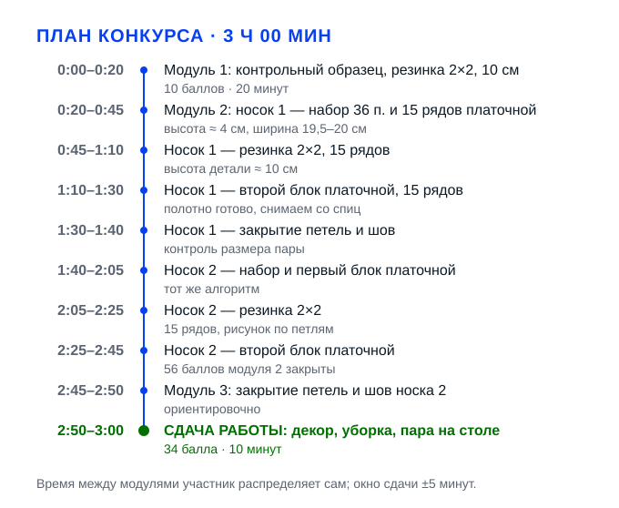
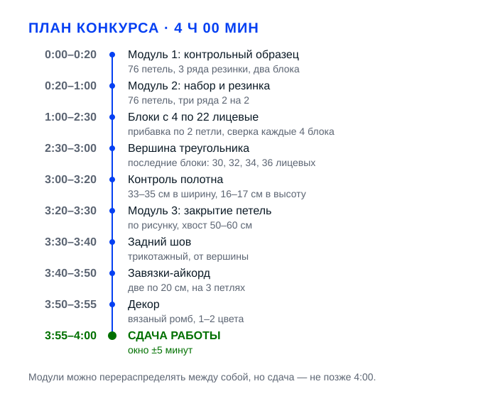
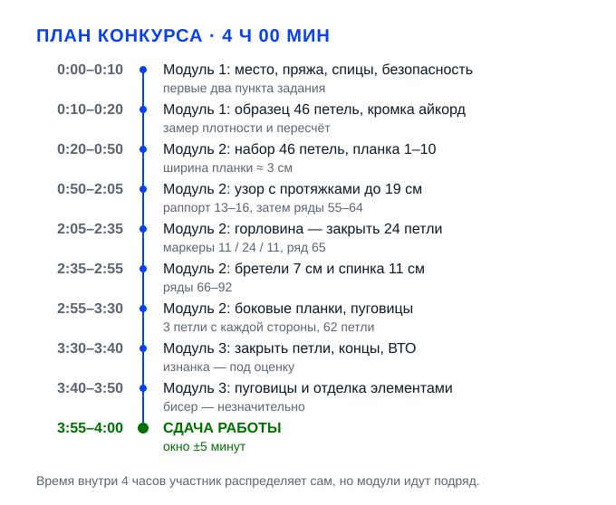

Вязание спицами (Р)
Задания ниже — официальные файлы «Абилимпикс» (источник: abilympics-russia.ru), разложенные по категориям. Решения написаны по тексту задания, регламенту и критериям оценки; в них указано, что именно проверяет эксперт.
Школьник
14–16 лет, базовый уровень заданияВыдержка из официального конкурсного задания: страницы, относящиеся к категории «Школьник» (стр. 5–7 источника).
Пошаговое решение
Задание для школьников — пара детских носочков из 36 петель и контрольный образец к ним. На всё даётся 3 часа: 20 минут на образец, 2 часа 30 минут на носочки и 10 минут на закрытие петель с отделкой, причём эти последние 10 минут стоят 34 балла из 100 — треть оценки за работу, которую многие оставляют «на потом». Вывязывать пятку и мысок не нужно: полотно вяжется прямым, складывается пополам и сшивается, поэтому результат решают ровность петель, точные 15 рядов в каждом из трёх блоков и аккуратный шов. В каждом шаге ниже разобрано, что и как делать руками, зачем это нужно по критериям, как проверить результат, что обычно ломается и на что в этот момент смотрит эксперт.

Задача 1. Связать контрольный образец и настроить плотностьМодуль 1 · 10 баллов · 20 минут
Модуль 1 — это проба пера перед главной работой: 36 петель резинкой 2 на 2 поворотными рядами на высоту 10 сантиметров на двух спицах. За него дают 10 баллов, и они самые дешёвые на конкурсе: здесь не нужно ничего придумывать, нужно ровно и вовремя сделать то, что написано. Одновременно образец отвечает на главный вопрос всей работы — какой получилась плотность и сколько сантиметров дадут те же 36 петель в носочке.
Действие 1.1. Приготовить место и снять риски
Шаг 1.1.1
Раскладываем на столе слева клубок в невысокой корзинке или банке с гладкими краями, чтобы нить шла вверх без рывков и не каталась по полу. По центру — рабочая зона примерно 40 на 40 сантиметров, свободная от всего лишнего: спицы, сантиметровая лента, маркеры, ножницы, штопальная игла с тупым концом, небольшой крючок. Справа кладём блокнот и карандаш: записывать номер ряда дешевле, чем пересчитывать полотно. Свет ставим так, чтобы он падал на петли спереди и слева, а не из-за спины — в собственной тени петля сливается с соседней, и ошибку видно только через десять рядов.
Организация рабочего места входит в требования к квалификации категории «Школьники» и оценивается внутри модуля 1. Пятнадцать секунд на раскладку инструмента возвращаются минутами: на модуль даётся всего 20 минут, и каждый поиск ножниц или маркера съедает время из этих двадцати. Кроме того, клубок, катающийся по полу, тянет нить под неудобным углом, натяжение скачет, и полотно выходит неравномерным.
Проверьте себя просто: сядьте, положите руки на стол — локти свободно лежат на поверхности, плечи не подняты, спицы не нужно держать на весу. Нить от клубка идёт вверх без трения о край стола. Всё, что нужно в следующие двадцать минут, достаётся правой рукой без вставания.
Частая ошибка — начать вязать сразу, а ножницы и иглу искать потом, когда понадобится закрыть петлю: на 20-минутном модуле потеря двух минут уже заметна, а образец к сдаче нужно ещё и измерить. Вторая ошибка — положить клубок на колени или на пол: нить натягивается рывками, и первые ряды образца выходят заметно плотнее последних.
Эксперт смотрит на рабочее место в первые минуты модуля и фиксирует, готово ли оно до старта работы: разложенный инструмент, чистый стол, устойчивое положение клубка.
Шаг 1.1.2
Убираем со стола всё, что может упасть или помешать: стаканы, телефоны, лишние тетради. Спицы держим так, чтобы свободные концы не выходили за край стола больше чем на десять сантиметров и не торчали в сторону соседа. Не втыкаем спицы в клубок и не закалываем их за одежду — это самая частая бытовая травма при вязании. Ножницы лежат сомкнутыми, кольцами к себе, и после каждого отрезания возвращаются на одно и то же место, а не остаются в полотне.
Создание безопасных условий прямо названо в последовательности выполнения задания (пункты 1 и 2 модуля 1), а правила техники безопасности при работе с колющими и режущими инструментами входят в требования к квалификации. На площадке рядом работают другие участники, часто с нарушением зрения или опорно-двигательного аппарата, поэтому упавшая за край стола спица — это не мелочь, а риск для человека за соседним столом.
Проверьте три вещи: спицы не выходят в проход, ножницы закрыты и лежат на месте, на столе нет ничего, что можно опрокинуть локтем. Отдельно проверьте свои руки — не осталось ли на пальцах крема: он переносится на пряжу и оставляет тёмные следы на светлом полотне.
Классика — спицы, заткнутые в клубок или в пучок волос: кончик цепляется за нить, клубок падает, и на полу оказывается метровый отрезок, который потом идёт в работу свалявшимся. Вторая ошибка — оставить ножницы открытыми на краю стола: ими легко задеть и порезать полотно или руку.
Наблюдение за безопасностью идёт всё время модуля, а не только на входе; отдельно эксперт отмечает, убирает ли участник инструмент после работы с ним.
Действие 1.2. Подобрать пряжу и спицы
Шаг 1.2.1
Берём пряжу, из которой будем вязать и образец, и носочки — обязательно одну и ту же, иначе образец ничего не скажет о плотности изделия. Для детских носочков подходит полушерсть или акрил средней толщины, примерно 250–300 метров в 100 граммах: полотно получается плотным, но не толстым, а петля читается глазом. Пряжу выбираем гладкую, без длинного ворса: мохер и пушистые нити скрывают рисунок петель, и собственную ошибку в таком полотне не видно до самого конца.
Умение выбирать пряжу с учётом её свойств и определять её качество заявлено в требованиях к квалификации категории «Школьники». Практический смысл для конкурса простой: носочек вяжется 2,5 часа, и пряжа, которая рвётся, лохматится или линяет, съест это время на перевязывание. Кроме того, по заданию допускается вязание разными цветами пряжи, поэтому второй цвет лучше выбрать сразу, а не искать в середине модуля.
Потяните нить между пальцами: она должна быть ровной по толщине, без утолщений и тонких «голодных» участков. Скрутите кончик в жгут — волокна держатся вместе, а не рассыпаются. Если на этикетке указан состав и метраж, сверьте их с тем, что чувствуете руками: слишком тонкая для заявленного метража нить даст рыхлое полотно.
Взять пряжу «какая есть», не глядя на метраж: из тонкой нити 36 петель дадут 12 сантиметров вместо 19,5, и носочек просто не сядет по размеру. Вторая ошибка — взять пушистую пряжу ради красоты: рисунок резинки в ней не виден, а эксперт оценивает именно читаемость переплетения.
Эксперт смотрит на этикетку и слушает, как участник объясняет выбор: для детского носочка нужна гладкая нить 250–300 метров в 100 граммах, а не пушистая. Проверяется, одна ли это пряжа идёт на образец и на изделие — по толщине и оттенку это видно сразу, а разные партии дают разницу в цвете.
Шаг 1.2.2
Подбираем две прямые спицы диаметром 2,5–3 миллиметра — обычно это на полмиллиметра тоньше, чем советует этикетка пряжи, потому что носочек должен держать форму, а не растягиваться в чулок. Проверяем кончики: они должны быть гладкими, без заусенцев и шероховатостей, иначе нить будет расслаиваться на каждом переходе. Спицы берём одинаковые по номеру и с одинаковой длиной — разные спицы дают разную плотность по краям полотна.
Классификация спиц и требования к ним входят в блок знаний категории «Школьники», и это один из тех пунктов, где ошибка видна не сразу, а через сорок рядов: полотно начинает «вести» в одну сторону. Практическая логика подбора простая — спица должна быть примерно в два раза толще нити; если спица заметно тоньше, полотно выходит деревянным и вязать тяжело, если толще — получаются дыры и рыхлая резинка.
Обкрутите нить вокруг спицы: витки должны ложиться плотно, один к одному, без просветов между ними. Проведите пальцем по кончику спицы — он не цепляет кожу. Сравните обе спицы: если номера стёрты, приложите их друг к другу, толщина должна совпасть.
Спицы на номер больше нужного: полотно рыхлое, резинка не держит форму, а 36 петель дают 22 сантиметра вместо 20. Спицы с заусенцем: нить рвётся у кромки, и в полотне появляются «лохматые» протяжки, которые уже не убрать.
Эксперт просит показать, как нить ложится на спицу, и смотрит на просвет между витками: у правильно подобранной спицы витки лежат плотно, без зазоров. Отмечается и одинаковость обеих спиц — разные номера дают разную плотность по краям полотна, и на готовом образце это видно как перекос.
Шаг 1.2.3
Перематываем клубок вручную, проверяя нить по всей длине: узлы, утолщения, места сцепки волокон. Всё, что нашли, лучше сразу перевести в отдельный «черновой» клубок для образца, а не пускать в носочек. Если пряжа лежала долго и кажется жёсткой, дайте ей отлежаться в руках пять-десять минут: тёплая нить ложится ровнее. Не тяните нить из середины плотного клубка — она выходит с натяжением и потом «садится» в полотне.
Проверка пряжи на пороки прямо входит в профессиональные компетенции: контроль качества сырья и определение пороков пряжи. На конкурсе это ещё и вопрос времени — узел, попавший в середину резинки, выглядит как дефект полотна и снижает оценку ровности, а распустить и перевязать этот участок в 2,5-часовом модуле уже некогда.
Клубок перемотан, нить ровная, узлов в рабочей части нет. Проверьте первые три-четыре метра на просвет: при равномерной толщине просвет между волокнами одинаковый, без резких «перетяжек». Прогоните нить между пальцами по всей длине — утолщение чувствуется как бусина, и его место лучше отметить, чтобы не пустить в резинку.
Оставить узел «он сзади, никто не увидит»: на изнаночной стороне он даёт бугорок, а на лицевой — перекос петли. Вторая ошибка — вязать прямо из мотка, не перемотав: моток путается, и на распутывание уходит по десять минут.
Эксперт осматривает полотно на просвет и с изнанки, где видны все узелки и протяжки, и отдельно спрашивает, как участник проверял пряжу перед работой. Узел, оставленный в резинке, читается как дефект полотна независимо от того, насколько ровно связано остальное.
Действие 1.3. Набрать 36 петель
Шаг 1.3.1
Отмеряем хвост нити длиной примерно в три ширины будущего полотна — для 36 петель это около 70–80 сантиметров; лучше отмерить с запасом, короткий хвост придётся наращивать, а наращивание видно. Набираем классическим способом на две спицы, сложенные вместе: так край получается эластичным и потом легко растягивается. Каждую петлю затягиваем на спице одинаково, не «в удавку»: петли должны свободно скользить по спице, иначе первый ряд вязать будет мучительно.
Наборный край — это верхняя кромка носочка, та, что надевается на ногу, и в готовом изделии она должна растягиваться. Именно поэтому 36 петель набираются на две спицы: край выходит на миллиметр шире, и носочек не давит. На модуль 1 даётся 20 минут, поэтому набор должен быть быстрым и сразу ровным — перебирать край потом некогда.
Пересчитайте петли по десятым: 36 — это три группы по двенадцать или девять по четыре. Край не должен стягиваться в «гармошку» и не должен стоять волной. Потяните наборный край в стороны — он тянется на два-три сантиметра и возвращается обратно.
Набрать 35 или 38 петель: сбитый счёт виден только в изделии, где резинка 2 на 2 не сойдётся в конце ряда, и придётся либо довязывать лишнюю, либо убавлять. Вторая ошибка — затянуть петли так, что первая спица входит с усилием: край получается жёстким, и в носке он будет резать ногу.
Эксперт пересчитывает петли в наборном крае и проверяет его эластичность: край должен тянуться на два-три сантиметра и возвращаться обратно. Набор на двух спицах виден по кромке — она чуть свободнее полотна, и именно это отличает аккуратный набор от затянутого.
Шаг 1.3.2
Распределяем петли по спице так, чтобы они не сбивались в кучу: аккуратно подтягиваем каждую к предыдущей, но без натяжения. Полезно пройти по всему ряду пальцем — так чувствуется перекрученная петля, которую глаз пропускает. Последнюю петлю набора проверяем отдельно: она чаще всего выходит слабой и потом вытягивается в «петлю-дыру». Свободную спицу вынимаем из-под петель медленно, придерживая край пальцем, чтобы петли не соскочили.
Ровное распределение — залог того, что первый ряд провяжется без «лесенки» и полотно пойдёт без перекоса. Кроме того, при снятии второй спицы можно потерять петлю, а это сразу минус в критерии ровности края. На конкурсе время модуля 1 короткое, и любая переделка здесь обходится дороже всего.
Петли стоят на спице ровным рядом, все обращены в одну сторону, ни одна не перекручена. Посмотрите на край сбоку: он должен быть прямой линией, а не зигзагом. Пересчитайте ещё раз после снятия второй спицы.
Снять вторую спицу рывком: половина петель соскакивает, и восстановить их можно только крючком, теряя минуты. Вторая ошибка — оставить первую петлю перекрученной: она даёт характерный «узел» на кромке, который видно на готовом изделии.
Эксперт смотрит на кромку в готовом образце и на наборный край носка: перекрученные петли набора читаются как небрежность, а слабая последняя петля вытягивается в дыру уже при первой примерке. Отдельно отмечается, ровный ли край по всей длине.
Действие 1.4. Связать образец резинкой 2×2 на 10 см
Шаг 1.4.1
Первую петлю всегда снимаем непровязанной, рабочая нить за работой — так кромка получается ровной «косичкой». Дальше распределяем резинку 2 на 2: две лицевые, две изнаночные, и так до конца ряда. При 36 петлях раскладка сходится идеально: 34 петли рисунка делятся на девять групп по четыре, плюс две кромочные. Последнюю петлю ряда провязываем изнаночной, чтобы кромка с обеих сторон выглядела одинаково.
Резинка 2 на 2 — это единственный узор, заданный в модуле 1, и её нужно вязать именно в такой последовательности, иначе полотно пойдёт «в разнобой» и рисунок расползётся. Кромочные петли входят в критерий ровности края: снятая первая и изнаночная последняя дают по краю аккуратную цепочку, которую эксперт видит первой.
Проверьте первый ряд по лицевой стороне: столбики из двух лицевых чередуются с дорожками из двух изнаночных, между ними нет одиночных петель. Кромка слева и справа — ровная цепочка, а не рыхлый край. Если в ряду нашлась одиночная петля, раскладку исправляют сейчас, а не через десять рядов, когда распускать придётся почти всё.
Провязать весь ряд лицевыми — самая частая ошибка на этом шаге: рисунок потом придётся исправлять через несколько рядов, а распускать резинку медленно. Вторая ошибка — забыть про кромочные и получить по краям «пеньки», из-за которых край не сшивается ровно.
Эксперт проверяет рисунок с лицевой стороны и кромку по всей длине образца, а затем сравнивает первую и последнюю петли ряда: снятая кромочная и изнаночная последняя должны давать одинаковую цепочку с обеих сторон. Отдельно смотрится, нет ли в резинке одиночных петель — они ломают ритм рисунка.
Шаг 1.4.2
Вяжем поворотными рядами: в лицевых рядах над лицевыми петлями вяжем лицевые, над изнаночными — изнаночные, во изнаночных рядах наоборот. Ничего не считаем в уме — смотрим на петлю, которая лежит на спице: если она смотрит на вас «галочкой», это изнаночная, если гладкой палочкой — лицевая. Через каждые пять рядов откладываем спицы, расправляем полотно на столе и измеряем высоту сантиметровой лентой, не растягивая.
Высота 10 сантиметров — прямое требование модуля 1, и оно измеримое: эксперт прикладывает ленту. Пять рядов между замерами дают поправку на глаз: по полотну на весу понять, девять там сантиметров или одиннадцать, невозможно, а перевязать готовый образец уже не позволит время.
К десятой минуте модуля на полотне должно быть около 6–7 сантиметров: при пряже 250–300 метров в 100 граммах и спицах 3 миллиметра это примерно 22–24 ряда. Полотно лежит ровно, без «волнистости» по краям, ширина по всей высоте одинакова.
Мерить высоту на растянутом полотне: получается «10 сантиметров», а после расправления — 8. Вторая ошибка — вязать до «примерно столько», не измеряя: недомер в два сантиметра стоит балла за соответствие заданию.
Эксперт измеряет образец лентой по центру, а не по краю, и смотрит, ровная ли ширина по всей высоте: сужение книзу означает, что участник постепенно затягивал петли. Высота 10 сантиметров — измеримый критерий, и его проверяют у каждого участника без исключений.
Шаг 1.4.3
Довязав до 10 сантиметров, не закрываем петли, а аккуратно снимаем образец на вспомогательную нить или оставляем на спице: закрытый край будет мешать измерению. Расправляем полотно на столе, прижимаем ладонью, даём отлежаться минуту и измеряем ширину между кромками. Дальше считаем плотность: делим 36 петель на полученную ширину и записываем результат на бумаге — эти цифры понадобятся, чтобы понимать, укладывается ли носочек в 19,5–20 сантиметров.
Образец нужен не сам по себе — он отвечает на вопрос, с какой плотностью вы вяжете. По заданию ширина детали носочка должна быть около 19,5–20 сантиметров при 36 петлях, и если образец дал 23 сантиметра, значит, вязать нужно плотнее или взять спицы тоньше. Это ровно тот расчёт, который в требованиях к квалификации назван «делать расчёт количества петель».
Ширина образца 19–20 сантиметров, высота ровно 10, плотность около 1,8 петли на сантиметр. Края не закручиваются, рисунок читается, полотно одинаковой плотности сверху и снизу. Все цифры записаны на бумаге: при такой плотности те же 36 петель и дают нужные 19,5–20 сантиметров ширины носочка.
Связать образец «для галочки» и не измерить его: тогда вся работа идёт наугад, и первый носочек может выйти на два сантиметра шире второго. Вторая ошибка — закрыть петли образца: модуль требует образец высотой 10 сантиметров, а закрытый край стягивает полотно и меняет измерение.
Эксперт кладёт образец рядом с эталоном и сравнивает ширину, высоту и рисунок — все три параметра видны сразу, без растягивания. Отдельно проверяется, записал ли участник плотность: по этим цифрам потом видно, осознанно ли он вязал изделие или набирал петли наугад.
Задача 2. Связать пару детских носочковМодуль 2 · 56 баллов · 2 часа 30 минут
Самая дорогая часть задания: 56 баллов и два с половиной часа. Носочек вяжется прямым полотном из 36 петель тремя блоками по 15 рядов — платочная вязка, резинка 2 на 2 и снова платочная, — а потом складывается пополам и сшивается. Пятку и мысок вывязывать не нужно, поэтому все баллы набираются на другом: на ровности петель, точном числе рядов в каждом блоке, одинаковости двух носочков и на том, успели ли вы к сдаче.
Действие 2.1. Набрать петли и связать первый блок платочной вязкой
Шаг 2.1.1
Отмеряем хвост нити под набор 36 петель — снова около 70–80 сантиметров, — и набираем на две сложенные спицы классическим способом, как на образце. Петли затягиваем ровно, но не туго: этот край станет верхом носочка, он должен растягиваться, а не рваться. Сразу после набора пересчитываем петли и только потом снимаем вторую спицу — если петель 35 или 37, исправить это на наборном крае проще, чем в третьем ряду.
В задании модуль 2 начинается с фразы «наберите 36 петель», и это число не случайное: при нём резинка 2 на 2 раскладывается симметрично с одной изнаночной петлёй в начале и одной лицевой в конце. Ошибка в одну петлю ломает симметрию, и рисунок на втором носке встанет со сдвигом — а пара оценивается как одно изделие.
Перед снятием второй спицы петли пересчитаны и стоят ровно, без перекрутов. Край тянется на два-три сантиметра и возвращается. Ширина набора — 19,5–20 сантиметров, проверьте лентой сразу: это дешевле, чем обнаружить расхождение через час.
Набрать 36 петель на одну спицу, а не на две: край выходит жёстким, и в готовом носке он врезается в ногу — за это снимают баллы по качеству края. Вторая ошибка — не пересчитать петли и обнаружить нехватку после первого блока, когда распускать придётся 15 рядов.
Эксперт пересчитывает петли и проверяет эластичность наборного края — это первое, что видно в готовом изделии: жёсткий край врезается в ногу, а слабый растягивается уже при надевании. Набор на двух спицах отличается от набора на одной именно по свободе края.
Шаг 2.1.2
Первую петлю снимаем непровязанной, рабочая нить за работой. Дальше вяжем все петли лицевыми до предпоследней, а последнюю — изнаночной. Такой ряд повторяется во всех рядах блока: и в лицевых, и в изнаночных, потому что платочная вязка — это лицевые петли с обеих сторон. Именно поэтому блок получается плотным, с характерными поперечными валиками, и не закручивается по краям.
Формула ряда задана в задании дословно — снять первую, лицевые до последней, последнюю изнаночной, — и отступать от неё нельзя. Кромочные петли, снятая и изнаночная, дают по краю ровную цепочку: по ней потом сшивается носочек, и если кромка «гуляет», шов пойдёт волной. Ровная кромка — это отдельный измеримый признак в критериях модуля 2.
Провяжите первые пять рядов и посмотрите на лицевую сторону: полотно должно выглядеть как ряд поперечных валиков, без вертикальных дорожек. Кромка с обеих сторон — цепочка из ровных петель, без «пеньков» и без растянутых дыр.
Вязать первый ряд изнаночными «для плотности»: получается чулочная гладь, полотно закручивается в трубочку по нижнему краю, и носочек теряет форму. Вторая ошибка — снимать первую петлю без рабочей нити за работой: по кромке идут протяжки, и край выглядит рваным.
Эксперт смотрит на лицевую сторону: валики платочной вязки должны идти горизонтально и быть одинаковой высоты, а кромка — ровной цепочкой с обеих сторон. По кромке потом идёт шов, поэтому её качество оценивается отдельно от самого полотна.
Шаг 2.1.3
Вяжем ровно 15 рядов, считая каждый провязанный ряд, и после каждого пятого откладываем спицы, чтобы расправить полотно и прикинуть высоту лентой. Ориентир по заданию — около 4 сантиметров: при пряже 250–300 метров в 100 граммах и спицах 3 миллиметра это примерно 2,5–3 ряда на сантиметр. Пятнадцатый ряд заканчиваем изнаночной кромкой и ставим маркер на спицу — так блок будет видно с первого взгляда.
Пятнадцать рядов — точное число из задания, и оно определяет высоту первого блока: 4 сантиметра. Этот блок станет подворотом носочка, той частью, которая загибается на голени. Недовязать два ряда — потерять высоту и симметрию с третьим блоком, перевязать — уйти из графика на 2,5-часовой модуль, где каждая минута расписана.
Высота блока 3,8–4,2 сантиметра, ширина по-прежнему 19,5–20. Кромка ровная, валики одинаковые, на полотне нет затянутых петель. Маркер стоит после пятнадцатого ряда. Пересчитайте валики пальцем — их должно быть ровно пятнадцать, ни больше ни меньше.
Сбиться в счёте рядов: пятнадцать и семнадцать рядов на глаз неотличимы, а разница в высоте между блоками видна на готовой паре. Вторая ошибка — тянуть полотно при измерении: тогда «4 сантиметра» есть, а в расправленном виде — три с половиной.
Эксперт прикладывает ленту к первому блоку и сравнивает его с третьим: они должны быть одинаковой высоты, потому что оба вяжутся по 15 рядов. Разница в два ряда заметна на сложенном изделии как перекос, и исправлять её после шва уже поздно.
Действие 2.2. Провязать резинку 2×2 на 15 рядов
Шаг 2.2.1
Переходим на резинку в первом же ряду после платочной: снимаем первую петлю, вяжем одну изнаночную, а дальше идём двумя лицевыми и двумя изнаночными до конца ряда. В конце ряда получается одна лицевая и последняя кромочная изнаночная — так раскладка замыкается симметрично: одна изнаночная в начале, одна лицевая в конце. Проверьте первый ряд, не провязав второй: ошибка в раскладке исправляется сейчас и почти не исправляется потом.
Именно такая раскладка задана в задании, и она не декоративная: при 36 петлях она даёт ровный центр рисунка и одинаковые края. Если начать с двух изнаночных, резинка сместится на две петли, и на стыке с платочной вязкой появится заметная ступенька. На паре носочков сдвиг в одну сторону читается как разные изделия.
Разложите первый ряд на столе и посчитайте группы: после кромочной одна изнаночная, дальше восемь групп по две лицевые и две изнаночные, затем одна лицевая и кромочная. Всего 36 петель. Столбики лицевых смотрят на вас «галочками» и стоят парами.
Начать резинку с двух лицевых, забыв про одиночную изнаночную: в конце ряда остаются лишние петли, и рисунок идёт «лесенкой». Вторая ошибка — вязать резинку по памяти, не глядя на петли: после платочной вязки рука привыкла к лицевым, и половина ряда уходит гладью.
Эксперт проверяет симметрию резинки относительно центра и то, как она стыкуется с платочной вязкой сверху и снизу. Сдвиг на две петли виден на стыке блоков как ступенька, а на паре носочков читается как два разных изделия.
Шаг 2.2.2
Дальше вяжем по рисунку: над лицевыми — лицевые, над изнаночными — изнаночные, и так все 15 рядов. Петлю читаем по той, что лежит на спице: «галочка» под нитью — изнаночная, гладкая палочка — лицевая. Каждые пять рядов расправляем полотно и проверяем, что столбики стоят строго друг над другом, без сдвига на петлю. Рабочую нить держим свободно, не затягивая: резинка должна сжиматься и растягиваться, а не стоять колом.
Резинка на 15 рядов — это середина носочка, его самая растягиваемая часть, и именно она отвечает за посадку. По заданию после этого блока высота детали составляет около 10 сантиметров, то есть резинка добавляет шесть: если вязать туго, она даст четыре, и весь носочек выйдет короче заданного. Ровные столбики — это тот признак, по которому эксперт определяет качество вязания, не растягивая полотно.
Столбики резинки идут вертикально, без «ступенек» на каждом втором ряду. Полотно сжимается в руках и возвращается к прежней ширине. К концу блока высота детали около 10 сантиметров от наборного края — проверьте лентой, не растягивая.
Сбить рисунок на одну петлю: дальше он идёт криво, и исправить это можно только распустив до места ошибки. Вторая ошибка — вязать резинку в натяг, тогда полотно выходит узким, а кромка стягивается внутрь.
Эксперт проводит пальцем по столбикам резинки: они должны быть ровными на ощупь, а не «рёбром» с перекосами. Отдельно смотрится, не потеряла ли резинка эластичность — затянутое полотно не сжимается в руке и не возвращает форму.
Шаг 2.2.3
Перед последним, пятнадцатым рядом резинки ещё раз измеряем высоту от наборного края до спицы и записываем цифру. Если до 10 сантиметров не хватает двух-трёх миллиметров, это нормально: полотно после стирки расправится. Если не хватает сантиметра, довязываем два-три дополнительных ряда резинкой по рисунку — они уйдут в общую высоту и не испортят вид. Закончив блок, ставим второй маркер.
Ориентир «высота детали около 10 сантиметров» задан в задании после резинки, и это удобная контрольная точка: по ней видно, идёте вы в графике или отстаёте. На два носка и два блока резинки уходит больше половины времени модуля 2, поэтому проверка высоты здесь — это ещё и проверка темпа.
От наборного края до спицы 9,8–10,2 сантиметра. Ширина в сжатом виде 12–13 сантиметров, в растянутом — 19,5–20. Оба маркера на месте: один после платочной, второй после резинки. Поставьте на бумаге время, когда закончили блок: от него считается темп на второй носок.
Довязать резинку «до конца клубка» вместо 15 рядов: высота уходит, и носочек получается с перекосом в сторону гладких блоков. Вторая ошибка — не измерить вовсе: расхождение в два сантиметра обнаружится только на готовой паре.
Эксперт измеряет деталь в трёх точках — у кромок и по центру — и сверяет с ориентиром 10 сантиметров из задания. Заодно видно темп: если к этому моменту прошло больше половины времени модуля 2, второй носок может не успеть до сдачи.
Действие 2.3. Связать второй блок платочной вязкой
Шаг 2.3.1
Снова переходим на платочную вязку: снимаем первую петлю, вяжем все лицевые до конца ряда, последнюю провязываем изнаночной. Первый ряд после резинки — самый важный: полотно здесь меняет структуру, и если провязать его по инерции резинкой, граница блоков «поплывёт». Следим за тем, чтобы резиночные столбики ушли под валики платочной ровной линией, без «зубцов».
Третий блок завершает полотно и становится нижней частью носка — той, что приходится на подъём стопы. По заданию он повторяет первый: те же 15 рядов и та же платочная вязка. Симметрия блоков — один из измеримых признаков качества: эксперт складывает носочек пополам и сравнивает высоту подворота и низа.
Граница между резинкой и платочной вязкой ровная по всей ширине, без волны и без пропущенных петель. Первые три ряда нового блока лежат так же плотно, как предыдущий блок, а не свободнее. Кромочные петли на границе не вытянуты, а маркер второго блока снят и переставлен на новый.
Продолжить резинку ещё на ряд «для верности»: граница блоков смещается, и третий блок выходит на два ряда короче первого. Вторая ошибка — вязать первый ряд свободнее, чем остальные: на стыке появляется полоса из растянутых петель.
Эксперт рассматривает границы блоков вблизи и на расстоянии: они должны читаться как ровные горизонтальные линии по всей ширине. Ступенька на стыке резинки и платочной вязки остаётся заметной даже после стирки и отпаривания.
Шаг 2.3.2
Вяжем 15 рядов платочной вязкой, считая каждый ряд, и после каждого пятого расправляем полотно на столе. Ориентир тот же — около 4 сантиметров, как у первого блока. Рабочая нить должна идти свободно: если она натянута, полотно сужается к низу и носочек получается в форме конуса. Пятнадцатый ряд заканчиваем изнаночной кромкой и больше петель не прибавляем.
Все три блока вместе дают высоту детали около 14 сантиметров — это и есть длина полотна, из которого складывается носочек. Точные 15 рядов в каждом блоке обеспечивают симметрию: подворот, резинка и низ должны быть одинаковыми. Если третий блок выйдет на два ряда короче, при складывании пополам носочек перекосится, и это будет видно на сдаче.
Высота третьего блока 3,8–4,2 сантиметра, общая высота полотна 13,5–14,5. Ширина по нижнему краю та же, что по верхнему, — 19,5–20 сантиметров. Полотно лежит на столе без закручивания углов. Сравните блоки по маркерам: все три должны быть одинаковой высоты.
Вязать третий блок быстрее, чем первые два, «догоняя время»: плотность падает, и низ полотна выходит рыхлым. Вторая ошибка — не считать ряды и связать 17–18: носочек вытягивается, а пара становится разной длины.
Эксперт сравнивает высоту всех трёх блоков и общую длину полотна с ориентирами задания: около 4 сантиметров на блок и примерно 14 сантиметров всего. Третий блок, связанный быстрее первых, выдаёт себя рыхлым полотном у нижнего края.
Шаг 2.3.3
Связав 15-й ряд, снимаем полотно со спицы, не закрывая петель, и раскладываем на столе лицевой стороной вверх. Разглаживаем ладонью от центра к краям, даём отлежаться полминуты и измеряем: высоту от наборного края до последнего ряда, ширину сверху, посередине и снизу. Три ширины должны совпасть — так проверяется, не сузилось ли полотно к концу. Замеры записываем рядом с прошлыми: сравнение цифр скажет больше, чем ощущение от полотна в руках.
Полотно — это ещё не носочек: форму ему даст шов, и от того, насколько ровным получилось полотно, зависит, ляжет ли шов прямо. Три замера ширины ловят самый частый скрытый дефект — постепенное затягивание петель, из-за которого носочек сужается книзу, как конус. Такой дефект эксперт видит сразу, а участник — только на сдаче.
Ширина в трёх точках отличается не больше чем на полсантиметра, высота 13,5–14,5 сантиметра, кромки прямые. Полотно не закручивается по углам и лежит плоско. Проверьте по маркерам: между ними ровно по 15 рядов, а общая длина совпадает с суммой трёх блоков.
Мерить полотно на весу, держа за верхний край: под собственным весом оно вытягивается, и замеры врут на сантиметр. Вторая ошибка — оставить полотно скомканным на столе и измерять мятое: складки читаются как разная ширина, и участник начинает исправлять то, что не сломано.
Эксперт раскладывает изделие на столе и смотрит на него целиком: форма и пропорции видны на расстоянии лучше, чем вблизи. Сужающееся книзу полотно читается как конус, и после сшивания это уже не исправить никаким отпариванием.
Действие 2.4. Держать полотно под контролем по ходу работы
Шаг 2.4.1
Каждые пять-шесть рядов останавливаемся на полминуты и делаем три проверки: кромка слева и справа — ровная цепочка, рисунок — без сбитых петель, ширина — та же, что в начале. Удобно вести счёт на бумаге: ставим точку после каждого ряда и обводим каждую пятую — так видно и номер ряда, и место последней проверки. Если работаете без счётчика, точки на бумаге надёжнее, чем память.
Контроль по ходу — это требования к квалификации: проверять качество изделия в процессе работы и после завершения. Практический смысл в арифметике: ошибку, найденную через пять рядов, исправляют за две минуты, а найденную через пятнадцать — за десять, распуская почти весь блок. На модуле в 2,5 часа разница между этими двумя сценариями — это разница между парой и одним носком.
Полотно одинаковой ширины на всей длине, кромки прямые, рисунок без сбитых столбиков. Счёт рядов на бумаге совпадает с тем, что вы видите на полотне: пересчитайте валики в первом блоке — их должно быть 15.
Проверять «на глаз» через каждые полряда и ничего не записывать: через сорок минут вы не вспомните, пятнадцать там рядов или восемнадцать. Вторая ошибка — замечать перекос и надеяться, что «после стирки разгладится»: затянутые петли не расправляются.
Эксперт подходит к участнику в течение модуля и смотрит, контролирует ли он полотно в процессе или только в конце. Записи счёта рядов и времени — самый простой признак того, что работа идёт по плану, а не по интуиции.
Шаг 2.4.2
Если петля спустилась, не паникуем: подхватываем её крючком или левой спицей и поднимаем по столбику вверх, провязывая каждую протяжку по очереди — снизу вверх, не перекручивая. Если петля расщепилась (спица прошла между волокнами, а не через петлю), довязываем ряд до неё, снимаем на булавку и перевязываем этот участок заново. Дыру от случайного накида закрываем, провязав две петли вместе с соседней.
Спущенная петля — самый частый дефект в работе школьников и самый заметный: по полотну идёт вертикальная дорожка из растянутых протяжек. Одна такая дорожка снимает баллы и за ровность полотна, и за качество изделия в целом, причём исправить её после закрытия петель уже невозможно. Расщеплённая петля выглядит тоньше соседних и читается как «дырка».
После подъёма петли полотно на этом участке не отличается от соседних по высоте петли и по натяжению. Проверьте с изнанки: там не должно остаться длинной протяжки, которую видно на просвет. Растяните участок в стороны — дорожка не должна проступать.
Оставить спущенную петлю «она в середине, не видно»: при складывании и сшивании она оказывается ровно на видном месте. Вторая ошибка — тянуть за спущенную петлю, чтобы «подтянуть»: дорожка растягивается на всю высоту блока.
Эксперт смотрит полотно на просвет — именно так видны все протяжки и спущенные петли, которые на лицевой стороне почти не заметны. Одна вертикальная дорожка из протяжек снимает баллы и за ровность, и за качество изделия в целом.
Шаг 2.4.3
Следим за натяжением нити: она должна идти от клубка ровно, без рывков, и ложиться на спицу с одинаковым усилием. Держим спицы не «в кулаке», а свободно, опирая нижние концы на ладони или на стол: чем меньше зажим, тем ровнее петли. Каждые двадцать минут разминаем пальцы и плечи, меняем положение корпуса — при нарушении опорно-двигательного аппарата это ещё и вопрос выносливости на 2,5 часа.
Плотность вязания — это то, что нельзя исправить после: растянутое полотно не садится, а затянутое не расправляется. Правила регулирования плотности прямо названы в требованиях к квалификации, и на практике это самая частая причина, по которой два носка одной пары выходят разного размера. Ровное натяжение экономит и время: затянутые петли приходится провязывать с усилием.
Полотно на ощупь одинаково плотное по всей площади, петли не «звенят» под пальцем, спица входит в петлю без толчка. Ширина не меняется от ряда к ряду больше чем на два миллиметра. Каждые двадцать минут проверяйте, не затекли ли пальцы: усталая рука тянет нить сильнее.
Тянуть нить «чтобы было плотнее»: полотно становится деревянным, руки устают за час, и к третьему блоку плотность неизбежно падает. Вторая ошибка — вязать, уставившись в полотно вплотную: через сорок минут глаза устают, и темп падает вдвое.
Эксперт проверяет плотность пальцем и смотрит на осанку участника: зажатые плечи и низко опущенная голова — признак, что через час работы темп упадёт.
Шаг 2.4.4
Перед началом каждого нового блока проверяем, что маркер стоит на месте и что предыдущий блок закончен ровно: последний ряд провязан полностью, кромка изнаночная, нить не перекручена. Если маркер потерялся, отсчитываем блок вручную по валикам — они видны как поперечные полоски. Отмечаем на бумаге время: сколько минут ушло на первый блок, столько же должно уйти на третий.
Маркеры и запись времени — это организация собственной деятельности, которая входит в общие компетенции. Три блока по 15 рядов дают предсказуемый темп: если первый блок занял 20 минут, весь носочек — около 65–70, и два носка укладываются в 2,5 часа с запасом на шов и декор. Без этой арифметики участник узнаёт о нехватке времени только к середине второго носка.
К началу третьего блока на бумаге записано время, затраченное на первый, и оно не больше 25 минут. Маркеры на месте, кромка последнего ряда ровная, нить идёт от клубка без перекрутов. Если время уже 30 минут, из плана выпадают минуты на декор.
Снимать маркеры «за ненадобностью»: потом блоки приходится отсчитывать по валикам, и на это уходит время. Вторая ошибка — не замечать, что первый блок занял сорок минут, и продолжать в том же темпе: второй носок останется несвязанным.
Эксперт наблюдает, есть ли у участника план по времени и как он реагирует на отставание: предупреждение о сдаче за десять минут должно менять приоритеты, а не заставать врасплох с одним носком на спицах.
Действие 2.5. Связать второй носочек той же системой
Шаг 2.5.1
Второй носочек вяжем по той же последовательности: набор 36 петель на две спицы, 15 рядов платочной, 15 рядов резинкой 2 на 2 с одной изнаночной в начале и одной лицевой в конце, снова 15 рядов платочной. Ничего не меняем: ни плотность, ни число рядов, ни способ набора. Единственное отличие — второй носочек можно вязать увереннее и быстрее, потому что рисунок уже в руках.
Задание прямо говорит: второй носочек выполните по той же системе. Пара оценивается как одно изделие, и главный критерий здесь — одинаковость: длина, ширина, высота блоков и плотность должны совпадать. Именно на втором носке чаще всего теряются баллы, потому что участник вяжет его «на автомате», быстрее и свободнее, чем первый.
Перед началом положите первый носочек рядом с рабочим местом — это ваш эталон. Сверяйте ширину после первого блока и высоту после второго: расхождение больше полсантиметра — сигнал, что плотность другая.
Вязать второй носочек «потом, если останется время»: до сдачи доходит один носок, а модуль 2 оценивается как пара, и баллы снимаются почти полностью. Вторая ошибка — начать второй носок с середины, чтобы «сэкономить»: блоки не совпадут по высоте.
Эксперт раскладывает оба носка рядом и сравнивает их как пару — по длине, ширине и рисунку. Один носок, даже безупречно связанный, оставляет от модуля 2 меньше половины баллов, поэтому второй вяжется сразу, а не «если останется время».
Шаг 2.5.2
Связав второй носочек до конца, кладём оба полотна рядом на стол и сравниваем четыре вещи: общую высоту, высоту каждого блока, ширину по трём точкам и число рядов. Если второй вышел на сантиметр короче, у него можно довязать два-три ряда в третьем блоке — это менее заметно, чем разная длина готовой пары. Если разница больше двух сантиметров, лучше перевязать второй блок целиком: времени на это остаётся мало, но пара важнее.
Одинаковость пары — это то, что видит эксперт первым и оценивает без инструмента. Разная длина носочков читается как небрежность, даже если каждый по отдельности связан ровно. По критериям модуля 2 качество изделия и соответствие размерам входят в основную часть 56 баллов, и потеря здесь идёт сразу по нескольким пунктам.
Разница по длине не больше сантиметра, по ширине — не больше полсантиметра, высота одноимённых блоков совпадает. Положите носки рядом на столе: линии переходов должны идти на одном уровне. Проверьте и наборный край: он должен быть одинаково эластичным на обоих носках.
Сравнить носки «на глаз» в руках: в руках полотно сминается, и разница в сантиметр не видна. Вторая ошибка — заметить разницу и не исправить, надеясь, что «после шва сравняется»: шов стягивает край и разницу в длине только подчёркивает.
Эксперт кладёт пару на стол и смотрит на неё с расстояния метра — так разница в длине видна лучше всего. Дальше он сравнивает линии переходов между блоками: на паре они должны идти на одном уровне.
Шаг 2.5.3
Проверяем одинаковость плотности: прикладываем ладонь к первому полотну, потом ко второму — они должны ощущаться одинаково. Смотрим на рисунок резинки: столбики должны быть такой же высоты, а валики платочной вязки — такой же толщины. Если второй носок вязался заметно свободнее, его полотно будет шире и мягче, и после стирки он сядет иначе, чем первый.
Плотность — единственный параметр пары, который нельзя подогнать после: длину можно довязать, ширину — нет. Разная плотность проявляется именно после первой стирки, когда один носок садится на сантиметр, а второй остаётся прежним. На конкурсе стирки нет, но эксперт оценивает полотно на ощупь и на просвет, и разница в плотности читается как разный почерк.
Оба полотна на ощупь одинаковой плотности, ширина совпадает, рисунок резинки одинаковой высоты. Посмотрите на оба полотна против света: просветы между петлями должны быть одинаковыми. Если один носок просвечивает сильнее, он связан свободнее.
Связать второй носок свободнее, потому что рука «разогрелась»: это самая частая причина, по которой пары выходят разного размера. Вторая ошибка — не проверить плотность до закрытия петель, когда исправить ещё можно.
Эксперт сравнивает полотна на просвет и на ощупь — это стандартный приём проверки плотности на конкурсе, потому что инструментом разницу не измерить. Разная плотность проявляется после первой стирки, когда один носок садится, а второй остаётся прежним.
Шаг 2.5.4
Держим в голове общий график: 2,5 часа на модуль 2 — это примерно 65–70 минут на носочек вместе с закрытием петель и швом, а на декор остаётся всего 10 минут модуля 3. Значит, к моменту, когда до сдачи остаётся 15 минут, оба полотна должны быть связаны и хотя бы одно сшито. Если к этому моменту связан только один носочек, довязываем второй блоки целиком, но без декора — пара без отделки приносит больше баллов, чем один красивый носок.
Участник распределяет время между модулями самостоятельно, и это прямо записано в задании. Ошибка в планировании стоит дороже ошибки в вязании: 34 балла модуля 3 начисляются за закрытие петель и декор, а 56 баллов модуля 2 — только за пару. Носок, сданный без пары, теряет почти весь модуль 2, поэтому приоритет всегда очевиден: сначала два полотна, потом всё остальное.
К контрольной точке «15 минут до сдачи» оба полотна связаны, петли закрыты хотя бы у одного, декор запланирован. Сверьтесь с планом: 0:20–1:30 — первый носок, 1:30–2:45 — второй, 2:45–3:00 — закрытие, шов и отделка.
Увлечься вывязыванием сложного декора, когда второй носок ещё на спицах: 10 минут модуля 3 уходят, а пара остаётся недовязанной. Вторая ошибка — оставить сшивание «на последние пять минут»: шов отнимает больше, чем кажется.
Главный эксперт следит за соблюдением времени модулей и предупреждает о сдаче; участник, у которого к этому моменту нет пары, теряет основную часть баллов.
Задача 3. Закрыть петли, сшить и отделать изделиеМодуль 3 · 34 балла · 10 минут
Модуль 3 — самый короткий и самый дорогой по весу балла: 10 минут и 34 балла из 100. Здесь закрывают петли, складывают полотно лицевой стороной наружу и сшивают, прячут концы нитей и добавляют декор, который по заданию должен состоять из вязаных на спицах элементов. Тридцать четыре балла за десять минут означают простую вещь: декор продумывается заранее, а в эти десять минут остаётся только аккуратно исполнить.
Действие 3.1. Закрыть петли последнего ряда
Шаг 3.1.1
Закрываем петли так, как задано: снимаем первую петлю, провязываем одну лицевую и протягиваем снятую петлю через провязанную — на спице снова одна петля. Дальше повторяем: провязать лицевую, протянуть через неё предыдущую, и так до конца ряда. Спицу вводим за переднюю стенку, рабочую нить держим за работой: тогда по краю идёт ровная косичка, а не рыхлая цепочка.
Способ закрытия прописан в задании дословно, и отступать от него не нужно: именно этот вариант даёт плотный, ровный край, который потом сшивается без утолщения. Закрытие петель — отдельный пункт модуля 3, и эксперт смотрит и на технику, и на результат: край должен быть ровным по всей ширине, без «ступенек» и стянутых участков.
Край закрытия ровный по всей длине, ширина его равна ширине полотна, а не уже. Косичка идёт одной линией, петли одинакового размера, последняя петля закреплена и не распускается при потягивании. Приложите закрытый край к наборному — они должны совпасть по ширине.
Тянуть нить при закрытии «чтобы держалось»: край стягивается, полотно у нижнего края собирается в сборку, и носочек перестаёт быть прямым. Вторая ошибка — закрывать петли изнаночными: край получается рыхлым и закручивается наружу.
Эксперт растягивает закрытый край пальцами: он должен быть ровным и не деформировать полотно под собой. Затянутый край собирает низ носка в сборку, и это видно даже на разложенной паре.
Шаг 3.1.2
Закрываем в том же темпе, что и вязали, не ускоряясь к концу: натяжение нити должно быть таким же, как в последнем ряду, иначе последние пять-шесть петель выйдут затянутыми и край пойдёт волной. Каждые десять петель останавливаемся и прижимаем закрытый край ладонью к столу — так видно, ровная ли линия. Если край пошёл «ступенькой», распускаем до этого места и закрываем заново: десять секунд работы против заметного дефекта.
Ровность закрытого края входит в критерий качества изделия: по нему видно, насколько участник владеет инструментом. Практическая сторона тоже важна: этот край становится низом носка и сшивается с боковой кромкой, и если он стянут, шов пойдёт с посадкой, а изделие перекосится. На 10 минут модуля приходится и закрытие, и шов, и декор, поэтому переделка здесь стоит особенно дорого.
Край лежит на столе прямой линией, без волн и без сборки. Ширина закрытого края совпадает с шириной полотна посередине. Петли в косичке одинакового размера. Проверьте первые и последние пять петель — именно там чаще всего идёт затяжка.
Закрывать петли крючком или иглой «чтобы быстрее»: край получается другим по плотности, и на стыке с полотном видна полоса. Вторая ошибка — закрывать, не глядя на полотно: одна пропущенная петля даёт дыру, которую потом видно на готовом носке.
Эксперт сравнивает закрытый край с наборным: они должны быть одинаковой ширины, иначе носок перекошен к одному концу. Отдельно проверяется, нет ли в косичке пропущенной петли — она даёт дыру, заметную на лицевой стороне.
Шаг 3.1.3
Последнюю петлю закрепляем: обрезаем нить, оставив хвост длиной 40–50 сантиметров, протягиваем его через последнюю петлю и затягиваем. Этот хвост не обрезаем под корень — им будем сшивать носочек, и вторая нить не понадобится. На втором носке оставляем такой же хвост: длина шва у обоих изделий одинаковая. Нить отрезаем ножницами под углом, а не рвём руками: разорванный конец лохматится и не входит в иглу.
В задании прямо сказано: оставить длинный хвост нити для сшивания. Хвост в 40–50 сантиметров — это примерно две длины шва плюс запас на закрепку и на то, чтобы спрятать конец. Если хвост короткий, придётся вводить новую нить, а лишний узел на шве виден и снижает оценку аккуратности.
Хвост 40–50 сантиметров, конец закреплён и не распускается. Хвост той же пряжи, что и изделие, а не обрезок другого цвета. У второго носка хвост такой же длины. Проверьте иглу: в ушко должен проходить сложенный вдвое конец, иначе сшивать придётся в одну нить и шов выйдет слабым.
Обрезать нить коротко, «чтобы не мешала»: сшивать нечем, приходится наращивать нить, и на шве появляется узел. Вторая ошибка — оставить хвост в метр: он путается, цепляется за спицы и оставляет ворс на полотне.
Эксперт смотрит на изнанку и на шов: узлов и следов наращивания нити там быть не должно, а хвост, оставленный для сшивания, должен быть той же пряжи, что и изделие. Обрезок другого цвета выдаёт себя сразу.
Действие 3.2. Сложить и сшить носочек
Шаг 3.2.1
Складываем полотно пополам лицевой стороной наружу, как сказано в задании: наборный край совмещаем с закрытым, боковые кромки ложатся одна на другую. Выравниваем края по всей длине и скалываем булавками через каждые три-четыре сантиметра, вкалывая их поперёк кромки, а не вдоль. Если булавок нет, примётываем контрастной нитью крупными стежками — это две минуты, зато шов потом не «уведёт».
Складывание лицевой стороной наружу — прямое указание задания, и оно определяет весь вид изделия: шов остаётся снаружи и работает как отделка. Значит, он должен быть ровным и красивым, а не спрятанным. Булавки или смётка держат кромки совмещёнными: без них одна сторона уходит вперёд, и к концу шва образуется перекос в сантиметр — на детском носке это видно сразу.
Кромки совмещены по всей длине, углы сходятся, булавки стоят ровно и не дают слоям разъехаться. Положите сложенное полотно на стол: линия сгиба должна быть прямой, а края — совпадать до последней петли.
Сшивать без скалывания, «на глаз»: слои разъезжаются, и шов идёт по диагонали. Вторая ошибка — сложить лицевой стороной внутрь: шов окажется внутри, носок вывернется наизнанку, и вся работа пойдёт насмарку.
Эксперт смотрит на симметрию сложенного изделия: перекос виден до того, как раскроется шов, и по нему понятно, скалывали ли кромки булавками. На паре носочков и сложение должно быть одинаковым.
Шаг 3.2.2
Сшиваем трикотажным швом иглой с тупым концом и той же нитью, которой вязали: вводим иглу в кромочную петлю одной стороны, затем в парную петлю другой, шаг — примерно пять миллиметров, то есть одна кромочная петля. Нить не затягиваем: шов должен лежать на полотне, как ещё один ряд петель, а не стягивать края. Идём от нижнего угла вверх, придерживая слои левой рукой, и в конце закрепляем нить двумя стежками на месте.
Шов — это то, что превращает прямоугольник в носок, и в модуле 3 он приносит существенную часть баллов. Трикотажный шов повторяет структуру полотна и остаётся эластичным: при надевании он растягивается вместе с изделием, а не лопается. Грубый обмёточный шов даёт валик, который натирает ногу, и на детском изделии это сразу читается как дефект.
Шов ровный, стежки одинаковой длины, полотно по обе стороны шва не стянуто и не собрано волной. Потяните изделие поперёк шва: он растягивается и возвращается обратно. С изнанки нет длинных протяжек, а на лицевой стороне шов читается как ещё один ряд петель.
Сшивать «через край» толстой нитью в два сложения: шов выходит грубым, а полотно у края идёт волной. Вторая ошибка — затягивать каждый стежок: шов теряет эластичность и при первой же примерке лопается.
Эксперт проверяет шов и на лицевой стороне, и с изнанки, и отдельно — эластичность, растягивая изделие поперёк. Шов, повторяющий структуру полотна, читается как ещё один ряд петель, а не как рубец.
Шаг 3.2.3
Прячем концы нитей: оставшийся хвост вдеваем в иглу и проводим внутрь шва на пять-шесть сантиметров, затем выводим на изнанку и обрезаем под корень. Так же поступаем с хвостом от наборного края и с нитью, которой закрепляли шов. Расправляем носочек на ладони, проверяем, не осталось ли снаружи торчащих концов, и только потом переходим к отделке. Второй носок обрабатываем так же, чтобы пара выглядела одинаково.
Торчащий конец нити — самая заметная мелочь на сдаче: он виден на фотографии изделия и читается как незаконченная работа. Проведение конца внутри шва фиксирует его надёжнее, чем узел, и не создаёт утолщения. По заданию спрятать концы нужно до завершения оформления — то есть это обязательный пункт, а не пожелание.
Снаружи и с изнанки не видно ни одного обрезанного конца. Полотно не топорщится в местах, где спрятаны нити. Носочек лежит плоско, шов не расходится при растягивании. Пройдите ладонью по всей поверхности: бугорки от спрятанных концов чувствуются пальцем, и их лучше переложить глубже в шов.
Обрезать нить «под корень» у самой ткани: кончик вылезает после первой носки, и исправить это уже нельзя. Вторая ошибка — завязывать узел снаружи: он виден, даёт бугорок и сразу снимает баллы за аккуратность, как бы ровно ни был связан носок.
Эксперт осматривает изделие со всех сторон, включая изнанку и место шва: именно там чаще всего остаются концы нитей. Торчащий кончик виден и на фотографии работы, которая идёт в протокол.
Действие 3.3. Выполнить декоративную отделку
Шаг 3.3.1
Декор продумываем заранее, до конкурса: на площадке 10 минут, и придумывать в них нечего. Выбираем один простой мотив, который повторяется на обоих носках: контрастная полоса по краю, пара вязаных ромбов, шнур-завязка, кисточки. Мотив должен читаться на расстоянии метра и не мешать носить носок. Материал — остатки той же пряжи другого цвета; по заданию вязание разными цветами пряжи допускается.
По заданию декоративная отделка должна состоять из вязаных на спицах элементов — это главное ограничение, из-за которого готовые аппликации, ленты и фетр не подойдут. Модуль 3 весит 34 балла и длится 10 минут, поэтому решение принимается до старта: на площадке вы только исполняете задуманное. Отражение регионального фольклорного колорита в задании приветствуется — это дешёвый способ добавить работе индивидуальности.
Мотив выбран, материалы отложены отдельно и лежат на столе до начала модуля 3. Элемент можно связать за пять-семь минут, а закрепить — за две. Один и тот же мотив на обоих носках, без импровизации по ходу.
Придумывать декор в последние десять минут: время уходит на раздумья, и носок сдаётся без отделки — минус существенная часть 34 баллов. Вторая ошибка — выбрать мотив, который вяжется двадцать минут: пара остаётся недооформленной.
Эксперт оценивает и идею, и исполнение: декор должен быть вязаным, аккуратным и одинаковым на обоих носках. Отдельно отмечается, укладывается ли отделка в десять минут модуля — готовая идея видна по тому, что участник сразу берётся за дело, а не перебирает варианты.
Шаг 3.3.2
Вяжем элементы отделки спицами. Самый быстрый вариант — шнур-завязка: набираем три петли и вяжем лицевыми, каждый раз сдвигая петли к другому концу спицы, пока получится 12–15 сантиметров; такой шнур идёт по краю или завязывается бантом. Второй вариант — маленький ромб или листик на 7–9 петлях, он вяжется за три минуты и пришивается на подворот. Третий — контрастная полоса в два ряда, провязанная по краю до закрытия петель.
Именно эти элементы укладываются в десять минут и при этом выполнены спицами, как требует задание. Шнур-завязка заодно решает практическую задачу: детский носочек с завязкой не спадает. Ромб или листик дают геометрический мотив, близкий к народному орнаменту, — а фольклорный колорит в декоре приветствуется отдельно.
Элемент связан ровно, без дыр и перекосов, его размер читается на изделии — примерно три-четыре сантиметра. Нить та же, что в изделии, или контрастная, но той же толщины. Концы элемента подшиты, а не завязаны узлом.
Вязать декор из тонкой нити в несколько сложений: элемент получается плотным комком и не сочетается с полотном. Вторая ошибка — связать элемент, который больше самого носка: декор перекрывает изделие и выглядит нелепо.
Эксперт проверяет, что декор действительно связан спицами, а не приклеен и не пришит готовым: это прямое требование задания. Заодно смотрится соразмерность — элемент в три сантиметра читается на носке, а элемент в восемь перекрывает всё изделие.
Шаг 3.3.3
Закрепляем элемент на изделии той же нитью, потайными стежками: три-четыре стежка на элемент, игла идёт внутри полотна, узел прячется между слоями. Пришиваем на подворот, ближе к краю, симметрично на обоих носках — отмеряем линейкой от кромки, чтобы расстояние совпало. Шнур продеваем через край или пришиваем в двух точках, чтобы он не перекашивался.
Крепление — то место, где рушится хорошая идея: элемент, пришитый на два стежка, съезжает уже при складывании пары на столе. Симметрия на обоих носках входит в оценку пары как единого изделия, и разное расстояние от края видно сразу. Потайные стежки не дают на лицевой стороне строчки, которая перебивает рисунок.
Элемент держится плотно: потяните за него — он не смещается и не отходит. Расстояние от кромки на обоих носках одинаковое, с точностью до пяти миллиметров. С лицевой стороны не видно стежков крепления.
Пришить декор на живую нить, не закрепив: через минуту он висит на одном стежке. Вторая ошибка — приколоть булавкой и оставить так, решив, что «и так видно»: булавка — не отделка, и эксперт это отметит.
Эксперт аккуратно тянет декор пальцем: незакреплённый элемент выдаёт себя сразу. Дальше он сравнивает расстояние от кромки на обоих носках — асимметрия читается как небрежность, даже если сам элемент связан ровно.
Шаг 3.3.4
Если хочется добавить блеск, используем бусины или бисер по минимуму — три-пять штук в центре вязаного элемента, не больше: задание допускает незначительное применение. Пришиваем их той же нитью в цвет, каждой бусине два стежка, чтобы она стояла, а не болталась. Второй цвет пряжи, если он есть, вводим не в середину полотна, а в отделку: полосу по краю или сам декоративный элемент.
Граница «незначительного применения» — это и вопрос вкуса, и вопрос требований: декор должен оставаться вязаным, а бусины лишь подчёркивать его. Детский носочек с бисером по всей поверхности — ещё и небезопасная вещь, а на конкурсе учитывается назначение изделия. Цветовое решение оценивается вместе с отделкой, и аккуратно введённый второй цвет добавляет работе цельности.
Бусины держатся плотно, не топорщатся, не мешают шву и не выступают за край элемента. Общее количество — не больше пяти на носок. Второй цвет сочетается с основным и повторяется на обоих носках. Проверьте изнанку: там не должно быть узлов под бусинами.
Обсыпать бисером всё изделие: это выходит за рамки «незначительного применения» и делает носочек неудобным. Вторая ошибка — пришить бусину одним стежком: она переворачивается на изнанку и тянет за собой полотно.
Эксперт оценивает соразмерность декора и его уместность для детского изделия: бисер не должен мешать носке и выступать за край вязаного элемента. Общее правило простое — бусины подчёркивают вязаный декор, а не заменяют его.
Действие 3.4. Убрать место и сдать работу
Шаг 3.4.1
Приводим рабочее место в порядок, как требует задание: обрезки нити и бумагу — в мусор, клубки — в корзинку, спицы и ножницы — на место, стол протёрт, булавки сосчитаны и убраны в коробку. Обрезки пряжи не смахиваем на пол: мелкие нитки прилипают к полотну и костюму и остаются на изделии. На уборку уходит минута, и эта минута входит в 10 минут модуля 3.
Уборка рабочего места названа последним пунктом всех трёх модулей и входит в оценку организации. Кроме того, чистый стол нужен для последнего действия — разложить пару и образец так, чтобы эксперт увидел работу целиком. Обрезки, оставшиеся на полотне, читаются как небрежность, даже если само вязание ровное.
Стол пустой или с аккуратно разложенным инструментом, пол вокруг чистый, инструмент на месте, булавки и иглы убраны. На изделии нет прилипших обрезков и ворса. Проверьте край стола и пространство под ним — обрезки скатываются именно туда.
Смахнуть обрезки на пол «их уберут»: они разносятся по площадке и липнут к чужой работе. Вторая ошибка — оставить иглу или булавку на столе: это нарушение безопасности, которое фиксируется отдельно и переносится в протокол.
Эксперт проходит по рабочему месту после сдачи и отмечает чистоту стола и порядок в инструменте. Обрезки пряжи на полу засчитываются как нарушение организации, даже если само вязание ровное.
Шаг 3.4.2
Раскладываем работу для сдачи: контрольный образец кладём слева, пару носочков — по центру, лицевой стороной вверх, швами наружу, как они и должны выглядеть. Носочки расправляем, подвороты разворачиваем, декор поправляем, кончики нитей проверяем ещё раз. Рядом можно положить остаток пряжи, чтобы эксперт видел, из чего связана пара. Ничего не накрываем и не складываем в пакет.
Сдача — это момент, когда работу видят целиком, и от раскладки зависит первое впечатление. Пара, брошенная комком, читается хуже, чем та же пара, разложенная ровно. Все три результата модулей — образец и пара с отделкой — должны быть на столе одновременно: оценивают и то, и другое.
На столе лежат три вещи: образец 10 сантиметров, два носочка и, при желании, остаток пряжи. Носочки расправлены, швы смотрят наружу, декор на месте. Время сдачи в пределах окна ±5 минут. Отойдите на шаг и посмотрите на стол глазами эксперта — так видны перекос и забытые мелочи.
Сдать только носочки, забыв образец на краю стола: модуль 1 оценивать не по чему, и 10 баллов теряются целиком. Вторая ошибка — сдавать в последнюю минуту, торопясь и роняя вещи: пара, побывавшая на полу, уже не выглядит аккуратной работой.
Эксперт осматривает работу на столе со всех сторон и фотографирует её для протокола, поэтому раскладка влияет на то, что попадёт на снимок. Пара, разложенная ровно, читается лучше той же пары, брошенной комком.
Шаг 3.4.3
Готовимся коротко ответить на вопросы: из какой пряжи вязали и почему выбрали именно её, сколько петель в наборе и сколько рядов в каждом блоке, чем отличается резинка от платочной вязки, из чего сделан декор и почему он такой. Отвечаем спокойно и по делу, двумя-тремя фразами, не пересказывая весь процесс. Если что-то не получилось, честно называем это сами — эксперт всё равно увидит.
Понимание собственной работы и умение объяснить технологию входят в требования к квалификации: знать виды петель, способы их вязания и технологический процесс. Спокойный и точный ответ работает на оценку организации и коммуникации, а уверенное «не знаю» звучит хуже, чем простое объяснение своими словами.
Вы можете назвать число петель, число рядов в блоке, узоры и материал декора без подглядывания. Ответ занимает меньше минуты и не сбивает сдачу. Подготовьте две фразы о пряже и две о декоре заранее — на сдаче думать о формулировках некогда.
Отвечать «мы так на занятиях делали» вместо объяснения: видно, что участник повторил, но не понял. Вторая ошибка — начать оправдываться за мелкие огрехи, когда об этом не спрашивали: эксперт фиксирует то, что видит сам.
Эксперт задаёт два-три вопроса по ходу осмотра и отмечает, насколько участник владеет технологией своего изделия: может ли назвать число петель, рядов и узоры. Спокойный ответ по делу работает на оценку коммуникации.
Студент
учащиеся колледжей и техникумовВыдержка из официального конкурсного задания: страницы, относящиеся к категории «Студент» (стр. 5–9 источника).
Пошаговое решение
Студенческое задание — детский чепчик, связанный на двух спицах от наборного края до вершины. Четыре часа делятся на три модуля: 20 минут на контрольный образец из 76 петель, 3 часа на полотно и 40 минут на закрытие петель, задний шов, завязки и декор. Полотно строится не по схеме с убавками, а по правилу: кромочная, несколько лицевых, резинка 2 на 2 по рисунку, столько же лицевых, кромочная — и в каждом следующем блоке лицевых становится на две больше, пока от резинки на вершине не останутся те самые 2 петли. Сбитый счёт здесь дороже медленной вязки: ошибка в прибавках не видна до самого верха, а исправляют её, распуская по ряду. Поэтому половина подготовки — арифметика, маркеры и бирка с расчётом, а не спицы.

Задача 1. Организовать место и посчитать изделие до первой петлиМодуль 1 · организация места
В задании заданы всего три числа: 76 петель, три ряда резинки и прибавка по 2 лицевые петли в каждом блоке. Из них нужно вывести остальные — сколько всего блоков, сколько рядов, какая получится ширина и где окажется вершина треугольника. Пока этих чисел нет на бумаге, работа идёт «по ощущению», а ошибка в счёте обнаруживается на последних блоках, когда распускать уже некогда и время модуля 3 уходит на исправление вместо отделки.
Действие 1.1. Оборудовать рабочее место и снять риски
Шаг 1.1.1
Садимся за стол так, чтобы свет падал на полотно спереди или слева, а тень от рук не ложилась на спицы. Стул подбираем по высоте: предплечья лежат на столе, локти чуть ниже линии плеч, спина опирается на спинку. Клубок ставим в миску или в пакет у правого локтя — так он не укатится под стол и не будет тянуть нить с разным усилием от ряда к ряду. Стол освобождаем от лишнего: локти должны ходить свободно, не задевая посторонних предметов.
Четыре часа работы — это не спринт, а марафон, и плотность вязания напрямую зависит от посадки: когда плечи подняты и спина напряжена, через час петли идут туже, полотно сужается на 1–2 см, а диагонали треугольника перестают быть зеркальными. Ровность полотна эксперт видит раньше, чем что-либо ещё, и она же входит в оценку качества изделия.
Проверьте три вещи: клубок не падает со стола, локти лежат на столешнице, а не висят, тень от рук не закрывает петли на спице. Последнее особенно важно на светлой пряже, где рельеф резинки читается хуже всего.
Вязать, положив спицы на колени или откинувшись в кресле: полотно уходит вниз, натяжение нити меняется от ряда к ряду, и к 30-му ряду ширина изделия расходится с образцом. Исправлять это приходится не перевязыванием одного ряда, а всем полотном.
Эксперт оценивает организацию места в первые минуты модуля 1: чистый стол, свободная зона справа, инструмент разложен, а не свален в кучу. Дальше он смотрит, сохраняется ли этот порядок к третьему часу работы.
Шаг 1.1.2
Раскладываем справа инструмент в порядке работы: две прямые спицы № 2,5–3 длиной 35–40 см, маркеры для петель двух цветов, счётчик рядов, сантиметровую ленту, штопальную иглу с тупым концом, ножницы и булавки. Слева — бумажную бирку с расчётом и карандаш, чтобы отмечать номер блока после каждых трёх рядов. Спицы берём не короче 35 см: 76 петель на короткой спице сбиваются в плотную гармошку и слетают.
Маркеры и счётчик — не украшение, а способ не считать в уме: на 76 петлях сбиться на одну легко, а заметить это можно только по сдвигу рисунка через два-три блока. Чем меньше арифметики в голове во время вязания, тем ровнее идёт полотно и тем больше времени остаётся на модуль 3, где всего 40 минут на закрытие, шов, завязки и декор.
Инструмент лежит в пределах вытянутой руки, маркеры нанизаны на спицу или собраны кучкой у правой руки, счётчик сброшен на ноль, бирка с расчётом перед глазами. Ножницы закрыты и лежат не на краю стола.
Считать петли и блоки в уме: на четвёртом блоке цифры путаются, лишняя пара лицевых уходит в резинку, и диагональ получает излом, который видно на готовом чепчике. Вторая ошибка — короткие спицы: петли соскакивают, и вместо вязания вы десять минут ловите сбежавшие петли.
Эксперт смотрит, готов ли инструмент до первой петли: если участник ищет маркеры в середине модуля 2, это видно и читается как неподготовленность. Отдельно отмечается, пользуется ли участник счётчиком и записями, а не памятью.
Шаг 1.1.3
Убираем со стола всё, что не относится к работе. Спицы держим в чехле или с колпачками, пока они не в руках, ножницы кладём кольцами к себе и не оставляем на краю стола. Каждые 40–45 минут делаем паузу на две минуты: разжимаем пальцы, вращаем кистями, сводим лопатки. Если по состоянию здоровья нужна помощь с организацией места или дополнительная опора под спину, об этом договариваются с экспертом до старта, а не в процессе работы.
Три часа непрерывной мелкой моторики дают к концу второго часа онемение пальцев и потерю точности, а именно на последних блоках нужна максимальная аккуратность: ошибка там видна на вершине треугольника, то есть на самом видном месте готового чепчика. Паузы по две минуты не съедают время — они возвращают темп, который иначе падает вдвое.
Руки не сводит, пальцы слушаются, петли идут с одинаковым усилием. Если к концу блока вы замечаете, что нить приходится тянуть сильнее обычного, — это сигнал сделать паузу, а не «дотерпеть до конца ряда».
Работать без пауз первые два часа, а на третьем обнаружить, что кисть не держит спицу и петли идут разной высоты. Ещё одна ошибка — держать спицы остриём к себе или класть ножницы открытыми рядом с локтем, где они цепляются за рукав.
Эксперт наблюдает эргономику в течение всего конкурса и отдельно фиксирует нарушения техники безопасности при работе с колющими и режущими инструментами. Аккуратная организация места входит в общую оценку культуры труда.
Действие 1.2. Подобрать пряжу и спицы под детское изделие
Шаг 1.2.1
Берём пряжу для детских вещей: 250–350 м на 100 г, мягкую, неколючую, лучше мериносовую или качественный акрил. Цвет — светлый или средней насыщенности, потому что на тёмной пряже рельеф резинки 2 на 2 читается хуже и сбитый столбик вы увидите не сразу, а через несколько рядов. По заданию допускается вязание разными цветами, но если берём два, второй должен отличаться по светлоте, а не только по оттенку.
Чепчик вяжется ребёнку, и первое, что оценивают в детском изделии, — тактильность: колючая шерсть делает вещь нерабочей, сколько бы баллов ни было за технику. Светлая пряжа нужна ещё и для самоконтроля: диагональ из лицевых петель должна читаться глазом без натягивания полотна, иначе ошибку в прибавках вы не увидите до самого верха.
Потяните нить: она не рвётся от лёгкого усилия и не распадается на отдельные волокна. Свяжите кусочек и потрите его между пальцами — на хорошей детской пряже катышки не образуются сразу, а полотно остаётся мягким.
Взять пушистую пряжу с длинным ворсом: рисунок резинки в ней тонет, диагонали не видны, а распустить провязанное невозможно — ворс цепляется сам за себя. Вторая ошибка — тёмный цвет при слабом освещении в боксе: половина ошибок просто не видна до сдачи работы.
Эксперт оценивает, соответствует ли пряжа назначению изделия и как она ведёт себя в полотне: детская вещь не должна быть тяжёлой и колючей. Колористическое решение чепчика по заданию приветствуется, поэтому аккуратно подобранный второй цвет работает в плюс.
Шаг 1.2.2
Спицы подбираем под пряжу по этикетке и по первому полотну: для 250–350 м на 100 г это обычно № 2,5–3. Отдельный образец не вяжем, его роль играет контрольный образец модуля 1 — та же пряжа, те же 76 петель, те же спицы. Поэтому смена спиц после модуля 1 означает, что изделие и образец будут разной плотности, и это видно при первом же сравнении. Перед началом полотна спицы не меняем: пара, на которой связан образец, остаётся рабочей до последней петли.
Двадцать минут первого модуля — единственная возможность проверить плотность до начала полотна, и тратить их на второй, черновой образец нельзя: он не оценивается и съедает четверть модуля. Плотность образца и изделия должны совпадать, потому что 76 петель заданы жёстко: изменить ширину чепчика можно только номером спиц, а не числом петель.
Полотно образца плотное, не просвечивает на свет, петли одинаковой высоты, резинка держит форму и не разъезжается. Если полотно рыхлое и петли «гуляют», спицы велики, если жёсткое и тугое — малы. Посмотрите на столбики: если они наклонены вбок, натяжение нити неравномерное, и это скажется на диагоналях.
Взять спицы на полномера больше, чтобы вязать быстрее: полотно выходит рыхлым, диагонали плывут, а готовый чепчик растягивается на голове и теряет форму после первой носки. Обратная ошибка — слишком тонкие спицы: полотно жёсткое, и за три часа руки устают вдвое быстрее, чем при точном номере.
Эксперт сравнивает плотность контрольного образца и готового изделия: они должны быть одинаковыми. Разная плотность читается как неумение держать натяжение нити.
Шаг 1.2.3
Считаем изделие на бумаге до первой петли. Из 76 петель две кромочные, значит, в узоре 74. Первый блок: кромочная, 4 лицевые, 66 петель резинки по рисунку, 4 лицевые, кромочная. Каждый следующий блок забирает по 2 петли с каждой стороны, то есть 4 петли у резинки: 66, 62, 58 и так далее. От 66 до 2 петель резинки — это 64 петли, по 4 на блок: 16 прибавлений и 17 блоков, лицевых в них от 4 до 36. Рядов — три ряда резинки плюс по три на каждый блок, итого около 54.
Расчёт нужен не сам по себе, а чтобы знать размеры изделия и держать темп: 54 ряда при плотности 23 петли и 32 ряда на 10 см дают 33 см по нижнему краю и около 17 см до вершины — чепчик на голову 44–48 см с запасом на завязывание. Без этих цифр не спланировать три часа модуля 2 и не понять на середине полотна, идёте вы по графику или отстаёте.
Проверьте арифметику обратным счётом: 36 лицевых, 2 петли резинки, 36 лицевых и две кромочные дают ровно 76 петель. Если сумма не сходится, ошибка в расчёте, а не в вязании, и найти её сейчас дешевле, чем на 50-м ряду.
Считать блоки «на глаз» и остановиться, когда резинка визуально стала узкой: на вершине остаются 6–10 петель вместо двух, треугольник выходит усечённым, верх чепчика получается плоским. Перевязывать приходится 10–12 последних рядов, а это 30–40 минут из модуля 3.
Эксперт может попросить показать расчёт и спросить, сколько блоков в изделии: понимание алгоритма оценивается отдельно от аккуратности. Симметрия готового полотна — прямое следствие этого расчёта.
Задача 2. Связать контрольный образецМодуль 1 · 20 минут
Образец вяжется по тому же алгоритму, что и изделие, только коротко: 76 петель, три ряда резинки 2 на 2 и первые блоки с четырьмя и шестью лицевыми. За 20 минут нужно успеть набрать петли, провязать 8–10 рядов и замерить плотность — этого хватает, чтобы увидеть, как ложится резинка и как идёт диагональ. Всё, что вы заметите на образце, в изделии обойдётся в десять раз дороже: там та же ошибка стоит не одного ряда, а часа работы.
Действие 2.1. Набрать 76 петель
Шаг 2.1.1
Отмеряем нить для набора: на 76 петель классическим способом уходит примерно три длины будущего края, то есть 100–110 см, плюс 15 см запаса на хвост. Отмеряем от клубка, не отрезая, складываем пополам и надеваем петлю на большой палец, конец нити — на указательный. Если пряжи в клубке немного, набор начинаем от другого конца, чтобы не остаться без нити на само изделие.
Не хватит десяти сантиметров — набор придётся распускать и повторять целиком, а это 6–8 минут из двадцати, отведённых на модуль 1. Запас в 15 см нужен и для того, чтобы хвост потом ушёл в шов, а не торчал узлом на кромке, которую видно на готовом чепчике.
Хвост после набора — 12–18 см, нить не перекручена, клубок лежит и не тянет. Если хвост вышел короче 10 см, набор лучше переделать сразу, а не тянуть остаток из последней петли. Нить при наборе идёт с одинаковым усилием, клубок не подпрыгивает на столе.
Набирать «на глаз», а потом растягивать последние петли: край выходит затянутым, нижняя кромка чепчика стягивается, и изделие давит на лоб. Вторая ошибка — отрезать нить до набора: не хватит буквально двух петель, и работу придётся начинать заново.
Эксперт смотрит на наборный край с двух сторон: он должен быть ровным, одинаковым по высоте петель и не стянутым. Неровный набор виден на изделии как волнистая кромка.
Шаг 2.1.2
Набираем классическим способом на две спицы, сложенные вместе: петли снимаем с большого пальца и затягиваем на спице, придерживая указательным. Две спицы нужны для эластичного края — потом одну вынимаем, и петли остаются на второй. Набираем не спеша, но без остановок: 76 петель таким способом занимают 6–8 минут. Петли не затягиваем: они должны свободно ходить по спице, иначе первый ряд пойдёт тяжело и с рывками.
Край чепчика ложится на лоб и завязывается под подбородком, поэтому он должен тянуться вместе с резинкой. Набор на одну спицу даёт тугой вал, который не растягивается, и тогда вся эластичность резинки 2 на 2 теряется на первой же кромке. Плюс к этому эластичный край меньше вытягивается, когда чепчик завязывают и снимают.
Край не перекручен, петли на спице лежат ровной цепочкой, все одинаковой высоты, косичка наборного края смотрит в одну сторону. Полотно сразу после набора лежит без волны. Отдельно сравните первые и последние пять петель: они чаще всего выходят разной высоты.
Набирать на одну спицу и туго затягивать: край получается валом, чепчик не садится по голове, а топорщится. Вторая ошибка — перекрутить набор: тогда первый ряд идёт с перекосом, и выправить его невозможно, придётся распускать всё.
Эксперт проверяет эластичность наборного края руками — растягивает его и смотрит, возвращается ли он в исходное положение. Тугой край он отмечает сразу.
Шаг 2.1.3
Пересчитываем петли вслух, надевая маркер через каждые десять: семь маркеров на 70 петель и ещё 6 петель в конце. Если маркеров мало, считаем по два раза — справа налево и слева направо, — чтобы числа совпали. Заодно проверяем, что кромочные петли на концах набраны отдельно и не слиплись. Если число не сошлось, ищите ошибку в последних десяти петлях: там петля чаще всего теряется или добавляется.
76 — число некруглое, и потеря двух петель на наборе не видна глазом: полотно пойдёт шире или уже расчётного, а заметите вы это на 20-м ряду, когда диагональ начнёт уходить в сторону. Маркеры через десять петель превращают эту ошибку в очевидную: не хватает петель до маркера — счёт сбит.
Петель ровно 76, маркеры стоят через 10, последний отрезок — 6 петель, кромочные на местах. Пересчитайте ещё раз после первого провязанного ряда: иногда петли «теряются» уже в нём. Счёт после первого ряда — обязательный контроль, а не дополнительный.
Пропустить пересчёт и начать вязать: на 76 петлях разница в две петли даёт около сантиметра ширины, и вершина треугольника смещается от центра. Исправление — распустить до наборного края, то есть потерять весь модуль 1.
Эксперт смотрит, пересчитывает ли участник петли после набора. Это самый быстрый внешний признак того, работает человек по расчёту или на глаз. Пропущенный пересчёт он тоже замечает — по тому, как уверенно участник вяжет первый ряд.
Действие 2.2. Провязать резинку и первые блоки
Шаг 2.2.1
Первый ряд: кромочную снимаем непровязанной, дальше 2 лицевые, 2 изнаночные до конца ряда, последнюю кромочную провязываем лицевой. Так же вяжем ещё два ряда — всего три. На последних двух петлях перед кромочной полный раппорт обрывается: вяжем их по рисунку, они всё равно уйдут под лицевые блоки первого ряда. Счётчик рядов ставим на 3: дальше счёт идёт блоками, а не подряд.
Три ряда резинки — это нижняя кромка чепчика, и она задаёт, как изделие сядет по голове. Резинка 2 на 2 держит форму лучше, чем 1 на 1, и не растягивается так быстро, поэтому именно она идёт по краю. Кромочные, снятые в начале и провязанные в конце, дают ровный край-косичку, по которому потом пойдёт шов.
Резинка ровная, столбики лицевых идут вертикально и не «гуляют», рядов ровно три, ширина полотна 33–35 см. Проверьте на свет: между петлями не должно быть просветов. Кромка не закручивается валиком — это признак того, что набор и первые ряды связаны с одинаковым усилием.
Связать четыре или пять рядов «для красоты»: это уже отклонение от алгоритма, край выходит шире расчётного, и диагонали потом не сходятся в нужной точке. Вторая ошибка — сбить фазу резинки во втором ряду, провязав лицевые над изнаночными: рисунок ломается на первом же сантиметре.
Эксперт проверяет высоту резинки и ровность столбиков: три ряда видны как чёткая полоса. Сбитая фаза читается как «рябь» на кромке. Он также смотрит, не растянул ли участник край руками при проверке: после такого осмотра резинка держит хуже.
Шаг 2.2.2
Четвёртый ряд — первый блок: кромочную снимаем, провязываем 4 лицевые, дальше идём резинкой по рисунку до последних пяти петель, в конце 4 лицевые и кромочная лицевой. Лицевые на краях вяжем плотно, но не затягивая: это будущие диагонали, и по ним эксперт читает геометрию всего чепчика. Резинку между полосами ведём по рисунку, не сбивая столбики, а на границе с лицевыми нить кладём чуть плотнее.
Ширина лицевых полос по краям — это и есть механизм образования треугольника: каждый следующий блок расширяет их на 2 петли, и полосы сходятся к центру. Ровные, одинаковые по плотности полосы дают прямую диагональ; затянутые — волнистую, которую видно на готовом изделии.
С каждой стороны ровно по 4 лицевые, сумма сходится: 4 + 66 + 4 + 2 кромочные = 76. Полосы слева и справа одинаковой ширины и одинаковой плотности. Сравните их на просвет: если одна полоса плотнее, диагональ получит излом уже на третьем блоке.
Провязать 5 лицевых вместо 4: диагональ начинается с перекосом, и разница в одну петлю к вершине вырастет вдвое. Вторая ошибка — затянуть краевые лицевые: полотно стягивается по бокам, и чепчик выходит узким.
Эксперт смотрит на симметрию первых блоков: они должны быть зеркальными. Именно по первым двум блокам видно, будет ли изделие ровным. Граница лицевых и изнаночных должна читаться ровной линией, а не лесенкой.
Шаг 2.2.3
Следующие два ряда вяжем, не меняя числа лицевых: над лицевыми — лицевые, над изнаночными — изнаночные. В изнаночном ряду рисунок читается с изнанки, поэтому петлю, которая в предыдущем ряду была лицевой, провязываем изнаночной, и наоборот. Это и есть «по рисунку, как лежат петли»: резинка продолжается без сбоя. Перед сменой ряда проверяем последнюю петлю: она должна быть изнаночной, иначе счёт пошёл не туда.
Если в изнаночном ряду провязать лицевые лицевыми, резинка превратится в платочную вязку: полотно станет рыхлым и потеряет упругость, а рисунок 2 на 2 исчезнет. Ошибка эта накапливается незаметно — первые два ряда выглядят почти нормально, а к пятому полотно разъезжается в ширину.
Через два ряда посмотрите на лицевую сторону: столбики лицевых должны идти вверх непрерывно, без «ступенек» на стыке рядов. Полотно упругое, при растяжении возвращается в исходную форму, а столбики на стыке рядов не смещаются в сторону. Проверьте место, где переходили с лицевых на изнаночные: там чаще всего появляется перекос.
Вязать все петли лицевыми «чтобы проще»: резинка исчезает, ширина полотна уходит на 2–3 см, и весь расчёт по петлям оказывается неверным. Вторая ошибка — потерять счёт рядов и связать не два ряда по рисунку, а один или три: сбивается ритм блоков.
Эксперт проверяет, держится ли резинка по всей высоте: разъехавшиеся участки видны как более широкие полосы. Отдельно оценивается упругость полотна. Разъехавшееся полотно он отмечает как ошибку техники вязания, а не как случайность.
Шаг 2.2.4
Второй блок: кромочную снимаем, 6 лицевых, дальше резинкой по рисунку, в конце 6 лицевых и кромочная. Затем снова два ряда по рисунку. Шесть лицевых — это те же четыре прежние плюс 2 петли, забранные у резинки, а не шесть новых поверх неё, и вяжем их с той же плотностью. Провязав блок, отмечаем его номер карандашом на бирке: так видно, что впереди ещё пятнадцать блоков, а не «примерно половина».
На образце нужно увидеть минимум два блока: по одному не видно, как сужается резинка и насколько крутой получается диагональ. Два блока — это 4 лицевых, потом 6, и уже понятно, что рисунок рабочий, а плотность позволяет вязать дальше без сюрпризов. Восемь-девять минут на два блока — это почти половина двадцатиминутного модуля.
Считаем: 6 + 62 + 6 + 2 кромочные = 76. Резинка между лицевыми полосами сузилась на 4 петли по сравнению с первым блоком — ровно так, как записано в расчёте. Проверьте обе кромки: лицевые полосы должны начинаться сразу после кромочной, без лишней изнаночной петли.
Провязать 6 лицевых поверх прежних четырёх, не забрав петли у резинки: столбики сбиваются, и вместо аккуратной диагонали получается ступенька. Вторая ошибка — сделать прибавку сразу по 4 петли «чтобы быстрее»: треугольник выходит слишком крутым.
Эксперт смотрит на образец как на миниатюру изделия: по нему видно, понимает ли участник алгоритм прибавок. Образец с двумя блоками читается лучше, чем с одним.
Действие 2.3. Замерить плотность и записать результат
Шаг 2.3.1
Кладём образец на стол, не растягивая, и отмеряем 10 см по середине полотна, подальше от кромок: считаем петли, затем отдельно отмеряем 10 см по вертикали и считаем ряды. Резинку замеряем в слегка растянутом состоянии, как она ляжет на голову, — иначе получите цифру, которая к изделию отношения не имеет. Меряем дважды и берём среднее: половина петли на десяти сантиметрах даёт сантиметр на всей ширине.
Плотность — единственное, что связывает 76 петель с сантиметрами: без неё вы не знаете, какой получится чепчик и хватит ли 54 рядов до вершины. Резинка 2 на 2 в спокойном и растянутом виде различается на 15–20 %, и измерять её нужно именно в том состоянии, в котором она будет на голове.
Записаны два числа: петель на 10 см и рядов на 10 см. Ориентир для пряжи 250–350 м на 100 г и спиц № 2,5–3 — 22–24 петли и 30–34 ряда; если ваши цифры вне этого коридора, меняйте спицы. Тогда же решаем, оставлять образец как есть или перевязать его на другом номере, пока время модуля не вышло.
Мерить по краю образца, где полотно закручивается: цифра выходит заниженной, и вы вяжете изделие шире, чем нужно. Вторая ошибка — мерить резинку в сильно растянутом виде: тогда чепчик выйдет мал. Третья — мерить по диагонали: полотно резинки тянется неравномерно.
Эксперт может попросить показать замер и назвать плотность. Участник, который знает свои цифры, выглядит увереннее и быстрее принимает решения по ходу работы.
Шаг 2.3.2
Записываем на бирку всё, что понадобится через час: номер спиц, пряжу и цвет, 76 петель, плотность в петлях и рядах, число блоков и рядов из расчёта. Бирку прикалываем булавкой к образцу, чтобы она не уехала под стол. Второй экземпляр цифр — короткой строкой на полях схемы или на листке рядом. Плотность пишем двумя числами с единицами — «23 петли и 32 ряда на 10 см»: без единиц цифры через час перепутаются.
Через два часа работы память подводит: номер спиц забывается, а плотность кажется «примерно 20 петель». Если придётся перевязать часть полотна или сравнить изделие с образцом, все решения будут приниматься по этим записям, а не по ощущениям. Заодно записи экономят время: образец не нужно перемерять заново, достаточно посмотреть на бирку.
На бирке читаются все шесть параметров, она закреплена на образце, а не лежит отдельно. Проверьте: если бирку взять в руки через час, вы по ней сможете повторить набор без вопросов. Отдельно проверьте, что номер спиц записан цифрой, а не словами «те, что слева».
Держать параметры в голове: к третьему часу вы путаете номер спиц и начинаете «подгонять» изделие под образец на глаз, а это всегда перевязывание. Вторая ошибка — записать плотность, снятую по краю, и потом удивляться, почему полотно шире.
Эксперт обращает внимание на рабочие записи: аккуратная бирка с параметрами — признак профессионального подхода к вязанию, а не ученического. По бирке видно и то, вёл ли участник расчёт вообще или вязал по памяти.
Шаг 2.3.3
Сравниваем полученную ширину с расчётом: 76 петель при 23 петлях на 10 см дают 33 см, при 21 петле — 36 см. Если ширина вышла за 33–35 см, меняем спицы на полномера в нужную сторону и перевязываем образец, пока время модуля 1 не вышло. Если плотность в норме, образец откладываем и переходим к полотну на тех же спицах. Перевязывать образец в конце модуля 1 стоит только при явном расхождении: две-три петли на десять сантиметров — это уже полтора сантиметра по ширине.
Ширина чепчика жёстко задана числом петель, поэтому единственный рычаг — спицы, и работает он только до начала изделия. Определять это на 30-м ряду бессмысленно: перевязывать придётся всё полотно, а это два часа из трёх. На детском чепчике это особенно заметно: разница в три сантиметра — это уже другая возрастная группа.
Ширина образца 33–35 см, плотность записана, спицы выбраны окончательно. Решение зафиксировано на бирке: «спицы № 3, плотность 23 петли». Если ширина ушла за 36 см, чепчик будет сползать на глаза, и завязки этого не исправят.
Оставить решение «на потом» и начать изделие на тех же спицах, не сравнив цифры с расчётом: если плотность ушла, чепчик окажется на 2–3 см уже или шире, и завязки не спасут посадку. Вторая ошибка — менять спицы по ходу полотна.
Эксперт сравнивает ширину образца и изделия по нижнему краю: расхождение больше сантиметра читается как потеря контроля над плотностью. Он сверяет ширину изделия с образцом при сдаче модуля 2, а не только в конце конкурса.
Задача 3. Вывязать полотно чепчикаМодуль 2 · 3 часа
Три часа — это 17 блоков по три ряда и 76 петель на спице в каждом ряду. Работа однообразная, и вся её сложность в одном: не сбиться. Ширина полотна не меняется, меняется только рисунок — лицевые полосы по краям растут, резинка в середине сужается, и в какой-то момент диагонали сходятся, оставляя на вершине две петли. Ниже — как идти по блокам, что проверять после каждого и в какой момент остановиться, чтобы не довязать лишнего и не потерять время модуля 3.
Действие 3.1. Набрать 76 петель и связать три ряда резинки
Шаг 3.1.1
Набираем 76 петель тем же способом и на те же спицы, что и контрольный образец, оставляя хвост 110–120 см: часть его потом уйдёт в задний шов. Набор идёт уже знакомым движением, и на него уходит 6–8 минут. Сразу после набора надеваем маркеры через десять петель и пересчитываем ряд. Если пряжа скользкая, набор делаем чуть плотнее, иначе первый ряд пойдёт волной.
Полотно должно совпасть с образцом по плотности, иначе весь расчёт по сантиметрам разваливается: 76 петель на других спицах дадут другую ширину, а вершина окажется не там, где вы её ждёте. Длинный хвост экономит потом отдельную нить для шва и убирает лишний узел на изнанке.
Петель ровно 76, маркеры на местах, ширина полотна 33–35 см, край не перекручен и лежит ровной цепочкой. Проверьте ширину лентой сразу: если она меньше 32 см, спицы тоньше, чем на образце. Ширину меряем по нижнему краю, не растягивая полотно руками.
Набрать на другие спицы «потому что эти заняты образцом»: плотность уходит, и изделие расходится с расчётом на 2–3 см. Вторая ошибка — короткий хвост: его не хватит на шов, и придётся вводить новую нить в самом заметном месте.
Эксперт сверяет ширину наборного края с образцом и смотрит на кромку: она должна быть ровной, без стянутых участков. Он смотрит и на хвост нити: длинный, аккуратно уложенный говорит о том, что о шве подумали заранее.
Шаг 3.1.2
Первый ряд: кромочную снимаем, дальше 2 лицевые, 2 изнаночные до конца ряда, последнюю кромочную провязываем лицевой. Так же ещё два ряда — всего три. На последних двух петлях раппорт обрывается, вяжем их по рисунку: они всё равно уйдут под лицевые полосы первого блока. Резинку вяжем без натяжения: она должна лежать плоско, не собираясь в гармошку между спицами.
Три ряда резинки — это нижний край чепчика, который ляжет на лоб и будет завязываться под подбородком, поэтому он должен тянуться и держать форму. Кромочные, снятые в начале и провязанные в конце, дают край-косичку: по нему потом идёт шов, и он не утолщается.
Рядов ровно три, столбики лицевых стоят вертикально, ширина 33–35 см, полотно упругое. На просвет полотно плотное, без дырочек, кромка не закручивается валиком. Сравните высоту всех трёх рядов: разная высота видна на кромке как ступенька.
Связать четыре-пять рядов «чтобы край был плотнее»: это отклонение от алгоритма, край выходит шире, и диагонали потом не сходятся в расчётной точке. Вторая ошибка — сбить фазу резинки, провязав во втором ряду лицевые над изнаночными.
Эксперт проверяет высоту резинки и ровность столбиков: три ряда видны как чёткая полоса, а сбитая фаза читается как рябь на кромке. Отдельно он смотрит на первую и последнюю петлю ряда: кромочные не должны быть затянуты.
Шаг 3.1.3
Отмечаем лицевую сторону булавкой у наборного края и ставим счётчик рядов на 3. Полотно расправляем на столе и ещё раз меряем ширину — уже после трёх рядов она показывает, как резинка поведёт себя дальше. С этого момента каждый блок начинаем с одной и той же стороны, чтобы не путать направление вязания. Булавку крепим за край полотна, а не за нить: нить тянется, и метка съезжает.
Впереди больше пятидесяти рядов, и лицо с изнанкой за два часа путаются: булавка на лицевой стороне снимает этот вопрос. Заодно она помогает понять, с какой стороны смотреть рисунок, когда резинка сузится до нескольких петель и читать её станет труднее.
Булавка закреплена на лицевой стороне, счётчик показывает 3, ширина 33–35 см, полотно лежит ровно, без закрученных углов. Проверьте, что маркеры через десять петель не слетели. Если маркеры сбились, восстановите их до начала следующего блока, а не в середине ряда.
Не отметить лицо и начать вязать с изнанки: рисунок выворачивается, лицевые полосы уходят наизнанку, и на готовом чепчике диагонали читаются как шов. Заметить это можно только по готовому полотну, то есть после трёх часов.
Эксперт смотрит, как участник определяет лицевую сторону и держит ориентацию полотна. Путаница видна по тому, как переворачивают работу. Он просит показать лицевую сторону и смотрит, совпадает ли она с той, что видит сам.
Действие 3.2. Выполнить первый блок с четырьмя лицевыми
Шаг 3.2.1
Четвёртый ряд — первый блок: кромочную снимаем, 4 лицевые, дальше резинкой по рисунку до последних пяти петель, в конце 4 лицевые и кромочная лицевой. Лицевые вяжем с обычной плотностью, не подтягивая нить: они образуют диагональ, и по ним читается геометрия всего чепчика. Резинку между ними ведём, не сбивая столбики. Кромочную в конце ряда провязываем лицевой, а не снимаем: край должен быть ровным по всей высоте.
Ширина лицевых полос по краям — механизм образования треугольника: каждый следующий блок расширяет их на 2 петли, и полосы сходятся к центру. Затянутые краевые петли дают волнистую диагональ, а слишком свободные — рыхлую кромку, которая потом не даст ровного шва.
С каждой стороны ровно по 4 лицевые, сумма сходится: 4 + 66 + 4 + 2 кромочные = 76. Полосы слева и справа одинаковой ширины и одинаковой плотности, граница с резинкой идёт ровной линией. Граница лицевых и изнаночных идёт по одной вертикали, без уступа.
Провязать 5 лицевых вместо 4: диагональ начнётся с перекосом, и к вершине разница вырастет вдвое. Вторая ошибка — затянуть краевые лицевые: полотно стягивается по бокам, чепчик выходит узким, и завязки его уже не спасают.
Эксперт смотрит на первые блоки как на фундамент: полосы должны быть зеркальными и по ширине, и по плотности. Если одна сторона затянута, дальше диагональ поведёт в сторону, и исправить это будет уже нечем.
Шаг 3.2.2
Следующие два ряда вяжем, не меняя числа лицевых: над лицевыми — лицевые, над изнаночными — изнаночные. В изнаночном ряду рисунок читается с изнанки, поэтому петлю, которая в предыдущем ряду была лицевой, провязываем изнаночной, и наоборот. Это и есть «по рисунку, как лежат петли»: резинка продолжается без сбоя. Нить между лицевыми и изнаночными не перетягиваем: на границе она должна лежать свободно, но не висеть.
Если в изнаночном ряду провязать лицевые лицевыми, резинка превратится в платочную вязку: полотно станет рыхлым, потеряет упругость, а рисунок 2 на 2 исчезнет. Ошибка накапливается незаметно — первые два ряда выглядят почти нормально, а к пятому полотно разъезжается в ширину.
Столбики лицевых идут вверх непрерывно, без ступенек на стыке рядов, полотно упругое. Проверьте место перехода с лицевых на изнаночные: там чаще всего появляется перекос. Если на границе появилась вытянутая петля, распустите ряд до неё и провяжите заново.
Вязать все петли лицевыми «чтобы проще»: резинка исчезает, ширина уходит на 2–3 см, и весь расчёт по петлям оказывается неверным. Вторая ошибка — связать один или три ряда вместо двух: сбивается ритм блоков.
Эксперт проверяет, держится ли резинка по всей высоте: разъехавшиеся участки видны как более широкие полосы. Отдельно оценивается упругость полотна. Он проверяет упругость, растягивая полотно в ширину ладонями.
Шаг 3.2.3
После двух рядов по рисунку пересчитываем блок целиком: 4 лицевые, 66 петель резинки, 4 лицевые, две кромочные. Ставим булавку в начало блока — это точка, до которой можно безопасно распустить, если следующий блок пойдёт не так. На бирке отмечаем, что первый блок закрыт. Пересчёт занимает полминуты, а экономит часы: именно после третьего-четвёртого блока ошибки накапливаются незаметно.
Пересчёт после каждого блока — единственный способ поймать ошибку в тот момент, когда она ещё стоит трёх минут. На готовом полотне сбитая прибавка видна как излом диагонали, но исправлять её приходится распусканием до самого места ошибки. Правило действует до конца полотна, а не только на первых блоках.
Блок сходится по петлям, булавка стоит в его начале, на бирке отмечен номер. Лицевые полосы слева и справа начинаются на одной высоте, а резинка между ними сузилась на четыре петли — как и записано в расчёте.
Не считать блоки, а «помнить»: к десятому блоку память даёт сбой, и участник начинает вязать по 8 лицевых там, где нужно 10. Вторая ошибка — ставить булавку в середину блока, а не в начало. Незамеченная ошибка обходится в 20–30 минут отката.
Эксперт может попросить показать, где начало текущего блока: аккуратные метки читаются как владение методом, а не как импровизация. Он может попросить назвать номер текущего блока: по ответу слышно, ведётся ли счёт.
Действие 3.3. Наращивать лицевые полосы по две петли
Шаг 3.3.1
Дальше работа идёт циклами по три ряда: ряд с прибавкой, где лицевых на две больше, и два ряда по рисунку. Четвёртый блок — 8 лицевых, пятый — 10, шестой — 12, и так до 36. Каждый блок начинаем с кромочной, заканчиваем кромочной и после каждого отмечаем номер на бирке. Перед блоком смотрим на границу лицевых и резинки: она смещается на две петли в каждую сторону.
Шаг в две петли задан заданием и определяет наклон диагонали: при плотности 23 петли и 32 ряда на 10 см две петли — это около 0,9 см на три ряда, то есть угол близкий к 45 градусам. Стоит прибавить четыре петли вместо двух, и треугольник выйдет слишком крутым, а вершина окажется выше расчётной.
Лицевых слева и справа одинаковое число, резинка между ними сузилась ровно на четыре петли по сравнению с прошлым блоком, сумма по-прежнему 76. Булавка в начале блока, номер на бирке. Резинка сужается симметрично, вершина остаётся на оси полотна.
Прибавлять по четыре петли «чтобы быстрее дойти до вершины»: треугольник получается крутым, высота изделия меньше нужной, и чепчик не закрывает затылок. Вторая ошибка — прибавить с одной стороны больше, чем с другой: диагональ уезжает от центра.
Эксперт смотрит на диагонали в целом: они должны быть прямыми и сходиться к центру верхнего края, а не к одному из углов. Он проверяет шаг прибавок по двум соседним блокам: разница должна быть ровно две петли.
Шаг 3.3.2
Когда резинки остаётся меньше десяти петель, она читается хуже, и именно здесь начинаются сбои. Вяжем такие блоки медленнее, проговаривая вслух «две лицевые, две изнаночные», и каждый раз проверяем, что лицевые полосы начинаются сразу после кромочной. На узкой резинке ошибка в одну петлю видна только по столбикам. Если сбились, лучше распустить блок сразу, чем тянуть до вершины.
Последние блоки — самые заметные в готовом изделии: они сходятся на вершине, и любая неровность там бросается в глаза. Кроме того, распускать на этом этапе дорого: ряды уже длинные, а времени до конца модуля остаётся меньше половины. На узкой резинке цена ошибки выше, чем на широкой.
Кромочная, затем лицевые полосы без лишних изнаночных между кромочной и первой лицевой, резинка в середине ровная. Столбики читаются, полотно не стянуто. На узкой резинке проверяйте обе стороны отдельно: слева и справа от неё лицевых должно быть поровну.
Вязать узкую резинку «на автомате»: сбивается фаза, два столбика сливаются в один, и на вершине появляется утолщение. Вторая ошибка — затягивать нить на коротких участках резинки: полотно стягивается к вершине, и треугольник выходит сдавленным.
Эксперт проверяет вершину и прилегающие блоки особенно внимательно: это центр композиции готового чепчика. Сбитая резинка на вершине видна как слияние столбиков, и исправить это уже нельзя.
Шаг 3.3.3
Держим темп: 17 блоков на 180 минут — это 8–9 минут на блок, включая два ряда по рисунку. После каждых четырёх блоков смотрим на часы: к 1:20 от старта модуля должно быть связано около семи блоков. Если отстаём, сокращаем не качество, а декор в модуле 3, потому что полотно перевязать уже нечем. План записываем на бирку: четыре блока — 35 минут, восемь — 1:10, двенадцать — 1:45.
Время модуля 2 — три часа, и оно не резиновое: модуль 3 занимает 40 минут, а закрытие, шов и завязки быстрее, чем за 25 минут, не сделать. Участник может перераспределять время между модулями, но общий лимит — четыре часа, и опоздание к сдаче работу не спасает.
Связано столько блоков, сколько показывает сверка с планом, отставание не больше одного блока. Счётчик рядов и бирка совпадают: число блоков умножить на три плюс три ряда резинки. Если отставание больше двух блоков, сокращайте декор, а не ряды полотна.
Гнать, чтобы догнать график: темп растёт, плотность падает, и на вершине полотно выходит рыхлым. Вторая ошибка — не смотреть на часы до самого конца модуля и обнаружить, что осталось 12 блоков и 40 минут.
Эксперт отмечает, как участник распределяет время: спокойный темп без рывков в конце читается лучше, чем гонка последние полчаса. Ему видно и то, как участник реагирует на отставание — паника читается по спешке и по брошенным на стол инструментам.
Шаг 3.3.4
Если заметили, что блок провязан неверно, — распускаем до булавки, а не пытаемся исправить по ходу. Петли надеваем на спицу по одной, следя, чтобы они не перекрутились, и провязываем блок заново. Булавку после этого переставляем в начало нового блока, чтобы точка отката всегда была под рукой. Петли при наборе держим на весу, не растягивая: растянутые петли потом видны как дырки.
Локальные исправления в трикотаже почти всегда видны: вытянутая петля, дырка от протяжки, перекошенный столбик. Распустить три ряда и связать их заново — это 10–12 минут, а «подправить» одну петлю — это след на всё изделие и всё равно перевязка, только позже.
После отката рисунок восстановлен, петли не растянуты, столбики на месте, ширина полотна вернулась к 33–35 см. Булавка стоит в начале блока, номер на бирке соответствует связанному. После отката пересчитайте петли до маркера и сверьте с расчётом.
Тянуть петлю из протяжки, чтобы «добрать» недостающую: в полотне появляется утолщение, которое видно на свет и на ощупь. Вторая ошибка — распускать, не поставив булавку, и потерять место, до которого надо было дойти.
Эксперт видит следы правок: вытянутые петли и утолщения читаются как небрежность, даже если рисунок в целом верный. Следы распускания он отличает от аккуратной вязки по плотности петель в месте правки.
Шаг 3.3.5
На восьмом-десятом блоке устраиваем промежуточный контроль: раскладываем полотно на столе, смотрим на диагонали и меряем ширину в трёх местах — у наборного края, в середине и на текущем ряду. Диагонали должны быть зеркальными и идти под одинаковым углом к кромке. Если диагонали разошлись, дальше вязать нет смысла: перекос будет только расти. Решение принимаем сразу.
Это последняя точка, где перевязка стоит дешево: связано около трети полотна, а ошибка ещё локальная. Дальше любое исправление — это час работы, которого в модуле 2 просто нет. Ширина, измеренная в трёх местах, сразу показывает, не поплыла ли плотность.
Ширина одинаковая во всех трёх замерах, диагонали симметричны, вершина будущего треугольника находится на оси полотна. Если ширина в середине больше, чем у края, полотно вяжется свободнее, чем в начале.
Пропустить промежуточный контроль и увидеть перекос только на готовом изделии: тогда исправлять нечего, чепчик сдаётся как есть, с потерей баллов за качество. Вторая ошибка — мерить ширину, растягивая полотно руками.
Эксперт обходит рабочие места в середине модуля 2 и смотрит на полотно целиком: перекошенные диагонали видны ему раньше, чем участнику. Он сравнивает полотно с образцом по плотности и наклону диагоналей.
Действие 3.4. Довязать треугольник до двух петель на вершине
Шаг 3.4.1
Перед последними блоками пересчитываем остаток резинки: если между лицевыми полосами 18 петель, впереди четыре блока — 30, 32, 34 и 36 лицевых. Записываем эти четыре числа на бирке и сверяемся с ними перед каждым блоком, а не после. Такой пересчёт занимает полминуты и снимает риск потерять счёт на финише. Четыре числа удобно записать столбиком и вычёркивать по мере вязания.
Последние блоки — единственное место, где ошибка в счёте видна сразу и стоит дорого: вершина либо сходится в центре, либо уезжает вбок, и полотно приходится распускать почти до середины. Числа, записанные заранее, превращают финиш в механическую работу без арифметики в голове.
Остаток резинки совпадает с расчётом, лицевых слева и справа по 28, сумма 76, булавка в начале блока. Сверьте число блоков на бирке с числом рядов на счётчике. Если остаток не сходится с расчётом, найдите ошибку до начала следующего блока.
Считать «на глазок» и связать лишний блок с 38 лицевыми: резинки уже нет, прибавлять некуда, и полотно идёт с перекосом на вершине. Исправление — распустить два-три последних блока, а это 20–25 минут.
Эксперт смотрит на вершину треугольника в первую очередь: это центр готового изделия и самая заметная его часть. Он смотрит на вершину в сложенном виде: симметрия читается лучше, чем на плоскости.
Шаг 3.4.2
Последний блок вяжем целиком: кромочная, 36 лицевых, две петли резинки по рисунку, 36 лицевых, кромочная, затем два ряда по рисунку. Резинки между полосами больше нет, прибавлять некуда — на этом полотно закончено. Проверяем, что на спице по-прежнему 76 петель и последний ряд провязан по рисунку. После последнего ряда проверяем натяжение: полотно не должно стягиваться к вершине.
Две петли на вершине — это тот самый остаток резинки, который задание называет вершиной треугольника: если остановиться раньше, вершина будет срезанной, если позже — полотно пойдёт с перекосом, потому что прибавлять уже не из чего. Ровный последний ряд нужен для закрытия петель в модуле 3.
На спице 76 петель, между лицевыми полосами ровно две петли, последний ряд провязан по рисунку, диагонали сходятся в центре полотна. Вершина находится на оси симметрии. Кромки по бокам ровные, без затянутых петель у вершины.
Остановиться на блоке с 34 лицевыми, решив, что «и так похоже на треугольник»: верх чепчика получается плоским, и это видно на готовом изделии. Вторая ошибка — довязать ещё блок, забрав петли у резинки, которой уже нет.
Эксперт проверяет количество петель на спице и форму вершины: срезанная или перекошенная вершина — прямой минус за качество изделия. Он проверяет, что вершина не срезана и полотно не пошло волной у верхнего края.
Шаг 3.4.3
Раскладываем полотно на столе и меряем: ширина по нижнему краю 33–35 см, высота от наборного края до вершины 16–17 см. Проверяем симметрию — складываем полотно по оси, проходящей через вершину, и смотрим, совпадают ли диагонали. Замеры записываем на бирку рядом с плотностью. Если диагонали не совпали, отметьте булавкой место расхождения: по нему видно, в каком блоке сбит счёт.
Высота 16–17 см — это глубина чепчика: меньше — изделие не закроет затылок, больше — соберётся складкой на макушке. Симметрия проверяется складыванием, потому что глазом перекос в один блок не виден, а на сложенном полотне он читается сразу. Эти два числа и есть паспорт изделия.
Ширина и высота в норме, диагонали при складывании совпадают, вершина на оси. Полотно не закручивается по углам, кромки ровные. Если высота меньше 16 см, не хватает одного блока; если больше 17 — полотно растянули при замере.
Мерить высоту по диагонали или от угла: цифра выходит больше реальной, и участник считает, что изделие готово, хотя вершина ещё не сошлась. Вторая ошибка — не проверять симметрию складыванием. Третья — мерить без линейки, на глаз.
Эксперт при сдаче меряет изделие и складывает его пополам: несимметричный чепчик виден именно в сложенном виде. Он сверяет замеры участника со своими: расхождение больше сантиметра настораживает.
Шаг 3.4.4
Останавливаемся и оставляем петли открытыми на спице: закрытие по заданию относится к модулю 3, но время участник распределяет сам. Если полотно готово раньше трёх часов, закрывать можно сразу — главное, отметить на бирке, что модуль 2 закончен. Спицу с петлями убираем в чехол или кладём так, чтобы петли не соскочили. Петли стягиваем нитью-фиксатором, если спица может понадобиться для завязок.
Открытые петли — это запас: если при примерке выяснится, что не хватает одного блока, его ещё можно довязать. Закрытый край такой возможности не даёт. Кроме того, спокойный переход к модулю 3 экономит нервы и 5–7 минут, которые уйдут на шов и завязки.
Полотно снято со счёта блоков, на бирке стоит отметка о готовности, петли на спице и не соскакивают, время до конца модуля 2 известно. Следующий шаг — закрытие петель. Убедитесь, что на бирке стоит время окончания модуля 2: по нему видно запас до сдачи.
Снять петли со спицы «чтобы не мешали»: открытые петли распускаются мгновенно, и восстановить последние ряды без перевязки невозможно. Вторая ошибка — тянуть до последней минуты модуля и начинать закрытие в спешке.
Эксперт фиксирует момент перехода к модулю 3: аккуратно снятое полотно и запись на бирке читаются как управляемая работа, а не как гонка. Он смотрит, оставляет ли участник полотно открытым или закрывает его в спешке.
Задача 4. Закрыть петли, сшить чепчик и связать завязкиМодуль 3 · 40 минут
Сорок минут на закрытие, шов, завязки и декор — это самый плотный отрезок конкурса. Считаем заранее: закрытие 76 петель — 5–6 минут, задний шов — 7–8, две завязки по 20 см — 14–16, декор — 8–10, концы нитей и уборка — 4. Итого ровно 40, без запаса на «подумать». Поэтому всё, что можно решить до этого модуля, решается до него: способ шва, цвет и вид декора, длина хвоста для сшивания.
Действие 4.1. Закрыть петли и оставить хвост для шва
Шаг 4.1.1
Закрываем петли по рисунку: кромочную снимаем, следующую провязываем так, как она лежит, и протягиваем снятую через провязанную. Лицевые закрываем лицевыми, изнаночные — изнаночными, каждый раз протягивая предыдущую петлю через только что провязанную. Нить не затягиваем: край должен тянуться так же, как резинка под ним. Кромочные петли тоже закрываем по рисунку, иначе на краях появляются утолщения.
Если закрывать все петли лицевыми, край пойдёт волной и стянет верх чепчика: на детском изделии это видно сразу, потому что кромка лежит на макушке. Закрытие по рисунку сохраняет эластичность края, а он участвует в шве, который потом растягивается при надевании.
Край ровный, без фалды, тянется пальцами и возвращается обратно, ширина по закрытому краю та же, что по наборному, — 33–35 см. Последняя петля закреплена, нить не распускается. Растяните край в длину и отпустите: он должен вернуться к исходной ширине.
Закрывать туго, «чтобы держалось»: край стягивается на 2–3 см, и чепчик садится на голову с трудом. Вторая ошибка — закрывать в спешке, не глядя на рисунок: на резинке это даёт перекошенную кромку, которую видно на готовом изделии.
Эксперт проверяет эластичность закрытого края и его ровность: растягивает рукам и смотрит, нет ли волны. Стянутый край отмечается как дефект обработки.
Шаг 4.1.2
Обрезаем нить, оставляя хвост 50–60 см: шов длиной около 17 см требует нити втрое больше, плюс запас на закрепку. Хвост продеваем в последнюю петлю и затягиваем, а не завязываем узлом: узел на кромке потом будет виден в шве. Свободный конец наматываем на палец восьмёркой, чтобы он не путался. Если хвост вышел короче, лучше сразу вдеть в иглу новую нить и начать шов с закрепки у вершины, чем сращивать нить на середине.
Хвост — это готовая нить для шва, и отдельная нить с узлом здесь только мешает: узел утолщает кромку, а на детской шапочке любой бугорок чувствуется. Расчёт «три длины шва» проверен практикой: при более коротком хвосте нить кончается на середине, и приходится вводить новую в самом заметном месте.
Хвост 50–60 см, последняя петля закреплена протяжкой, узла нет, кромка не стянута. Проверьте на просвет: в месте закрепления нет утолщения. Проверьте длину хвоста лентой: 50 см — это половина размаха руки от плеча до кисти.
Оставить хвост 20 см «должно хватить»: на половине шва нить кончается, и приходится или сшивать в две нити с узлом, или распускать шов. Вторая ошибка — завязать узел на кромке: он вылезает с лицевой стороны после первой стирки.
Эксперт смотрит на изнанку шва: узлы и обрезанные под корень нити читаются как небрежность обработки. Хвост, аккуратно смотанный и заколотый булавкой, он тоже отмечает: с ним шов идёт ровнее.
Шаг 4.1.3
Раскладываем полотно на столе закрытым краем к себе и проверяем: кромка ровная, ширина совпадает с наборным краем, диагонали сходятся к центру. Если край пошёл волной, отпариваем его через влажную марлю и даём остыть, не растягивая. Только после этого переходим к складыванию. Марлю держим двумя руками и не тянем: полотно должно лежать на столе свободно, а утюг идёт над ним на расстоянии сантиметра.
Волнистый край нельзя исправить швом: при складывании он даст утолщение, и задняя стенка выйдет перекошенной. Отпаривание через марлю выравнивает кромку без деформации резинки, а холодный участок держит форму лучше, чем растянутый руками горячий. После отпаривания резинка становится ровнее, и ширина перестаёт гулять.
Кромка лежит плоско, ширина по ней 33–35 см, волны нет. Полотно сложено ровно, углы совпадают при складывании пополам. Проверьте ширину сантиметром в трёх местах по кромке: расхождение больше сантиметра означает, что край нужно отпарить ещё раз.
Начать сшивать сразу, не выровняв кромку: шов идёт по волне, и задняя стенка получается с перекосом. Вторая ошибка — гладить горячим утюгом прямо по петлям: резинка расплющивается и теряет упругость навсегда.
Эксперт осматривает кромку до шва: ровная линия без волны — признак того, что участник понимает, зачем нужна влажно-тепловая обработка. Он смотрит, не растянут ли край руками при проверке: после этого изделие уже не садится по голове.
Действие 4.2. Соединить заднюю стенку
Шаг 4.2.1
Складываем полотно пополам вдоль оси симметрии так, чтобы боковые кромки совпали, а вершина треугольника легла на сгиб. Скалываем булавками через каждые 3–4 см, начиная от вершины и двигаясь к открытому краю: так совпадение не уходит к концу шва. Лицевые стороны при этом оказываются внутри. Сгиб проходим ладонью от вершины к открытому краю, чтобы полотно легло плоско, без воздуха между слоями.
Складывание задаёт геометрию всего изделия: если кромки совпали не точно, задняя стенка перекашивается, и чепчик сидит набок. Булавки от вершины к краю нужны потому, что вершина — единственная жёсткая точка, от которой можно вести отсчёт, а открытый край тянется.
Кромки совпадают по всей длине, диагонали лежат зеркально, полотно не перекошено, булавки стоят ровно. Проверьте, что вершина оказалась на сгибе, а не сместилась в сторону. Проверьте сгиб: он должен идти строго через вершину и центр наборного края.
Сколоть булавками через каждые 10 см: между ними кромки расходятся, и шов идёт с посадкой. Вторая ошибка — складывать, не совместив вершину: она уезжает от сгиба, и треугольник на готовом чепчике выглядит асимметричным.
Эксперт смотрит на сложенное изделие до шва: симметрия видна сразу, и по ней понятно, будет ли ровной задняя стенка. Он обращает внимание на булавки: ровный шаг в 3–4 см говорит о том, что участник умеет готовить шов.
Шаг 4.2.2
Сшиваем совмещённые кромки трикотажным швом иглой с тупым концом: захватываем по одной петле с каждой стороны, стежки 4–5 мм, нить не затягиваем. Идём от вершины вниз, к открытому краю, и в конце закрепляем нить двумя стежками по одному месту. Задание разрешает любой доступный способ, но трикотажный шов здесь самый незаметный. Стежки кладём с одинаковым натяжением: если один затянут сильнее, шов пойдёт волной именно в этом месте.
Трикотажный шов повторяет ход петель, поэтому остаётся плоским и тянется вместе с полотном — на детской шапочке это важно, иначе шов натирает затылок. Шов «через край» даёт валик, который видно с лицевой стороны, а обмёточный на трикотаже просто разъезжается при растяжении.
Шов плоский, без валика, с лицевой стороны не виден, при растяжении тянется и возвращается. Нить не просвечивает между петлями, концы закреплены. Проведите пальцем по шву с изнанки: он должен быть плоским, без бугорков и затянутых мест.
Сшивать «через край» толстой нитью: получается валик, чепчик давит на затылок, а с лица видна строчка. Вторая ошибка — затягивать каждый стежок: шов перестаёт тянуться, и при надевании нить лопается в самом тонком месте.
Эксперт выворачивает изделие и смотрит шов с двух сторон: ровная линия без пропусков и утолщений — то, что он ищет. Ещё он отмечает направление шва: от вершины к краю, а не наоборот, иначе посадка идёт к вершине.
Шаг 4.2.3
Выворачиваем чепчик на лицевую сторону и растягиваем шов пальцами в разные стороны. Проверяем симметрию: складываем изделие пополам по шву и смотрим, совпадают ли диагонали и одинакова ли высота боковых сторон. Если где-то шов стянут, распускаем 2–3 стежка и повторяем. Если изделие при складывании перекошено, найдите место, где кромки разошлись, и перешейте участок длиной 3–4 см, а не весь шов.
Шов — единственное место, где ошибку ещё можно исправить за минуту: после декора и завязок распускать его будет некогда. Симметрия проверяется складыванием, потому что готовый чепчик в разложенном виде слегка пружинит и кажется ровным даже при перекосе.
Шов тянется, с лица не виден, диагонали при складывании совпадают, высота боковых сторон одинаковая. Изделие лежит плоско, без заломов у шва. Сложите чепчик пополам по шву: боковые стороны должны быть одинаковой высоты, а диагонали — совпадать.
Оставить стянутый шов «и так сойдёт»: на голове он проявится как складка на затылке. Вторая ошибка — растягивать шов слишком сильно при проверке: нить вытягивается, и шов идёт волной. Третья — проверять шов на весу, не разложив изделие.
Эксперт проверяет шов и посадку изделия: он может надеть чепчик на манекен или болванку и посмотреть, как ложится задняя стенка. Он оценивает и посадку: чепчик не должен перекашиваться на болванке.
Действие 4.3. Связать завязки-айкорд по 20 см
Шаг 4.3.1
Набираем 3 петли на спицу с двумя рабочими концами или на чулочную спицу. Если завязка вяжется сразу от изделия, подхватываем три петли по кромке лицевого выреза крючком, чтобы не растянуть край. Провязываем 3 лицевые и сдвигаем петли к другому концу спицы, не поворачивая работу: именно сдвиг, а не поворот, даёт круглый шнур. Спицу держим вертикально, нить идёт за работой и сама стягивает петли в трубочку.
Айкорд вяжется на трёх петлях потому, что при сдвиге рабочая нить проходит за работой и стягивает полотно в трубочку: две петли дают слишком тонкий шнур, четыре — плоский. Набирать петли из угла изделия удобнее, чем пришивать потом: не остаётся утолщения на самом видном месте.
Три петли на спице, первые три лицевые провязаны, шнур начинает закручиваться в трубочку. Если полотно идёт плоской полоской, значит работа поворачивается, а не сдвигается. Через 2 см проверьте: шнур круглый, петли не растянуты, работа не поворачивается.
Поворачивать работу после каждого ряда: получается плоская полоска, а не шнур. Вторая ошибка — набрать 5–6 петель «для прочности»: шнур выходит широким и плоским, завязка выглядит грубо. Третья — вязать айкорд слишком свободно: шнур выходит рыхлым и быстро теряет форму.
Эксперт смотрит на сечение шнура: круглый, плотный, одинаковый по всей длине — признак правильной техники айкорда. Он смотрит на первые сантиметры шнура: именно там видно, освоена ли техника сдвига.
Шаг 4.3.2
Вяжем шнур, всё время сдвигая петли к концу спицы: три лицевые, сдвиг, снова три лицевые. Каждые 5 см прикладываем ленту и проверяем длину, а не считаем сдвиги в уме. На 20 см уходит 60–70 сдвигов, то есть 6–8 минут спокойной работы на одну завязку. Сдвиг делаем до самого кончика спицы и только потом провязываем: если начать раньше, петли растянутся и шнур пойдёт волной.
Длина 20 см задана в задании, и она не случайна: короткая завязка не даёт завязать бант под подбородком, длинная болтается и цепляется. Замер лентой каждые 5 см надёжнее счёта: сдвиги легко сбиваются, а сантиметры — нет. Ровный шаг сдвига даёт одинаковую плотность шнура по всей длине.
Длина шнура 20 см, шнур круглый и одинаковой толщины по всей длине, петли не растянуты. Концы шнура ровные, без «лесенки». Приложите ленту: 20 см — это примерно длина ладони с двумя пальцами, ориентир для проверки без линейки.
Вязать «на глаз» и получить 15 или 26 см: первая завязка не завязывается, вторая выглядит неаккуратно. Вторая ошибка — растягивать шнур при замере: после снятия со спицы он укорачивается на 1–2 см. Третья — тянуть шнур, чтобы «дотянуть» до 20 см: после снятия со спицы он сжимается.
Эксперт измеряет обе завязки и сравнивает их между собой: расхождение больше сантиметра он отмечает. На ощупь проверяет плотность шнура — она должна быть одинаковой по всей длине, без утолщений у основания.
Шаг 4.3.3
Вторую завязку вяжем по тому же принципу от второго угла лицевого выреза, ориентируясь на длину первой: прикладываем готовый шнур рядом и останавливаемся, когда длины совпали. Последнюю петлю закрываем протяжкой и закрепляем нить с изнанки, оставляя 5–6 см на подшивку. Перед закрытием последних петель ещё раз прикладываем ленту и, если не хватает сантиметра, довязываем два-три сдвига, а не растягиваем готовый шнур.
Симметрия завязок видна сразу, как только чепчик берут в руки: разная длина читается как небрежность, хотя на посадку не влияет. Ориентир по готовой завязке точнее, чем повторный счёт сдвигов, потому что натяжение во второй завязке всегда немного другое.
Обе завязки по 20 см, одинаковой толщины, закреплены с изнанки, нити не распускаются. При складывании изделия пополам завязки ложатся симметрично. Положите завязки рядом: разница в длине не больше 0,5 см, толщина одинаковая.
Связать вторую завязку «как получится»: разница в 3–4 см бросается в глаза. Вторая ошибка — оставить длинные концы на лицевой стороне, рассчитывая спрятать их потом: в айкорде их не спрятать, шнур слишком тонкий.
Эксперт сравнивает завязки между собой и с заданной длиной. Отдельно смотрит, как они прикреплены: место крепления не должно быть заметным утолщением.
Шаг 4.3.4
Прикрепляем завязки к нижним углам лицевого выреза: если шнур вязался отдельно, пришиваем его четырьмя-пятью стежками в тон пряжи, захватывая по одной петле кромки. Концы нити прячем внутрь шнура или под кромку. Проверяем, что завязки не перекручены и смотрят в одну сторону. Если завязка вязалась отдельно, сначала примеряем её на изделие и только потом пришиваем: перекошенную завязку придётся отпарывать.
Завязки держат чепчик на голове ребёнка, поэтому крепление должно выдерживать натяжение: четыре-пять стежков распределяют нагрузку, а два стежка при первом же завязывании вырвутся вместе с петлёй. Перекрученная завязка выглядит небрежно и мешает при завязывании.
Завязки держатся при потягивании, не перекошены, место крепления не утолщено, нити спрятаны. Изделие можно завязать, не поправляя шнуры. Потяните каждую завязку в сторону: крепление должно держать, кромка не должна морщиться.
Пришить завязку двумя стежками: при первом натяжении она отрывается вместе с кусочком кромки. Вторая ошибка — пришить шнур к середине боковой стороны, а не к углу лицевого выреза: чепчик перестаёт завязываться под подбородком.
Эксперт проверяет крепление, потянув за завязку: надёжность важнее внешнего вида, потому что изделие предназначено ребёнку. Он смотрит на симметрию завязок и на то, как они ложатся в завязанном виде.
Задача 5. Выполнить декоративную отделку и сдать работуМодуль 3 · вариативная часть
Отделка по заданию должна состоять из вязаных на спицах элементов: бусины и бисер допускаются только как небольшое дополнение. На декор остаётся 8–10 минут, поэтому элемент выбирается заранее и вяжется по простой схеме — ромб, полоска-бант или небольшой цветок. Здесь же приветствуется региональный колорит: башкирский орнамент строится на ромбах, зигзагах и мотиве «кускар», а цвета — красный, белый, зелёный, чёрный.
Действие 5.1. Выбрать и связать элементы отделки
Шаг 5.1.1
Выбираем элемент, который вяжется за 8–10 минут и читается на готовом чепчике: ромб платочной вязкой 6 на 6 см, полоска-бант или небольшой цветок из четырёх лепестков. Останавливаемся на одном элементе, а не на трёх: время модуля рассчитано, и лучше один аккуратный ромб, чем три недоделанных. Схему держим в голове или на бирке. Пряжу для декора отмеряем заранее, чтобы не искать клубок в спешке: 2–3 метра достаточно на ромб и полоску.
Задание требует, чтобы отделка была связана на спицах, поэтому помпон или готовая тесьма не подойдут, как бы аккуратно они ни выглядели. Один элемент ещё и не перегружает детское изделие: чепчик с крупным декором сползает, а мелкие детали ребёнок может оторвать.
Элемент выбран, схема понятна, время на вязание укладывается в 10 минут. Ширина элемента не больше 7 см, пряжа та же по толщине, что основа, а контраст по светлоте виден сразу, без прикладывания к свету.
Выбрать декор «по ходу», когда до сдачи 15 минут: элемент вяжется в спешке, петли выходят разной высоты, и отделка портит впечатление от аккуратного полотна. Вторая ошибка — взять для декора пряжу другой толщины.
Эксперт оценивает, связан ли декор спицами и насколько он уместен на детском изделии. Покупной элемент вместо вязаного он считает нарушением задания, а слишком крупный декор — ошибкой композиции.
Шаг 5.1.2
Вяжем ромб платочной вязкой: набираем 3 петли, в каждом лицевом ряду прибавляем по одной петле с каждой стороны до 9 петель, затем убавляем в том же ритме до 3 и закрываем. Для орнамента меняем цвет каждые два ряда — красный по белому. Все петли лицевые, поэтому изнанка выглядит так же, как лицо. Первую и последнюю петли ромба провязываем плотнее: именно они держат форму, а не середина полотна.
Платочная вязка в две нити даёт плотный, не закручивающийся по краям ромб: лицевая гладь заворачивается, и пришивать её приходится с подгибом. Смена цвета каждые два ряда даёт ровные полосы без длинных протяжек, а именно протяжки чаще всего портят вид с изнанки.
Ромб 6 на 6 см, края ровные, полосы одинаковой ширины, с изнанки нет протяжек длиннее 2 см. Петли последнего ряда закрыты без стягивания. Ромб ложится плоско, углы острые, полосы идут параллельно краю.
Вязать ромб лицевой гладью: края закручиваются, и пришить его ровно невозможно. Вторая ошибка — менять цвет каждые четыре-пять рядов: полосы выходят широкими, и орнамент теряет читаемость. Третья — вязать ромб без плана прибавок, на глаз: стороны выходят разной длины.
Эксперт смотрит на изнанку декора: аккуратные протяжки и ровные полосы — признак того, что элемент вязали, а не приспосабливали готовый. Он оценивает плотность декора: она должна совпадать с плотностью чепчика.
Шаг 5.1.3
Прикладываем ромб к чепчику и выбираем место: центр верхней части, чуть выше лицевого выреза, либо у заднего шва. Проверяем размер: элемент не должен занимать больше трети ширины изделия. Если ромб вышел крупнее, чем нужно, не перевязываем его, а смещаем к шву, где он читается спокойнее. Если элемент связан крупнее, чем задумано, прикалываем его булавками и смотрим на изделие с расстояния вытянутой руки: так видно, не спорит ли декор с диагоналями.
Крупный декор на детском чепчике утяжеляет переднюю часть, и изделие сползает на глаза. Место крепления важно и с точки зрения безопасности: у лицевого выреза ребёнок дотянется до декора рукой, у шва — нет. Композиция при этом должна читаться с первого взгляда, без объяснений.
Декор приложен и держится без булавок, размер не больше трети ширины изделия, место выбрано симметрично относительно оси. Проверьте, что элемент не закрывает вершину треугольника и не попадает под завязки.
Приколоть крупный ромб по центру лба: он закрывает половину диагоналей, и вся работа над рисунком становится незаметной. Вторая ошибка — расположить декор со смещением от оси: чепчик выглядит перекошенным.
Эксперт оценивает композицию: декор должен подчёркивать форму чепчика, а не спорить с диагоналями. Смещённый от оси или слишком крупный элемент он отмечает как ошибку композиции.
Действие 5.2. Закрепить декор и добавить фольклорный акцент
Шаг 5.2.1
Пришиваем ромб по периметру нитью в тон декора: 8–10 стежков по краю, захватывая по одной петле полотна и по одной петле элемента. Начинаем с верхнего угла, чтобы элемент не сдвинулся, и идём по кругу. Концы нити выводим на изнанку и прячем под шов, а не обрезаем у самого края. Иглу выводим между петлями полотна, а не через петлю: тогда на лицевой стороне не остаётся следа от прокола.
Декор на детской вещи должен выдерживать стирку и детские руки, поэтому пришивается по всему периметру, а не за два угла. Стежки в тон делают крепление незаметным, а спрятанные концы не вылезают после первой стирки — именно они чаще всего портят вид готового изделия.
Элемент держится при потягивании, не сдвигается, стежки не видны с лица. С изнанки нет узлов и торчащих концов. Потяните декор в четырёх направлениях: он не должен сдвигаться больше чем на миллиметр ни в одну сторону.
Пришить декор за два угла: при первой же стирке он перекосится или оторвётся. Вторая ошибка — пришивать толстой нитью в цвет основы: стежки видны как тёмные точки по краю ромба. Третья — пришивать декор нитью, сложенной втрое: стежки получаются толстыми и видны на тонком полотне.
Эксперт проверяет крепление декора пальцами: надёжность и аккуратность с изнанки он оценивает наравне с внешним видом. Изнанку крепления он тоже осматривает: узлы и хвосты там недопустимы.
Шаг 5.2.2
Поддерживаем региональный колорит: ромб красным по белому, узкая полоска зелёного или чёрного между полосами, мотив «кускар» — завиток, повторяющий бараньи рога. Достаточно двух цветов, кроме основного: больше превращает детский чепчик в лоскутное полотно. Полоску-акцент вяжем той же платочной вязкой шириной 2 см и пришиваем по нижнему краю, отступив от кромки на сантиметр.
В задании отражение фольклорного колорита приветствуется, и это единственная часть работы, где участник может показать свой замысел, а не только технику. Башкирский орнамент узнаётся по ромбам и завиткам в красно-бело-зелёной гамме, и двух цветов достаточно, чтобы мотив читался.
Орнамент читается с расстояния метра, цвета не спорят с основой, полоска пришита ровно и не стягивает край. Всего в изделии не больше трёх цветов, включая основной. Проверьте, что акцент не темнее самого ромба: иначе композиция проваливается.
Смешать пять цветов «чтобы было нарядно»: на небольшом чепчике это выглядит пёстро, и рисунок полотна теряется. Вторая ошибка — пришить полоску с натяжением: край чепчика стягивается. Третья — пришивать полоску поверх шва: она утолщает заднюю стенку.
Эксперт оценивает колористическое решение: по заданию оно приветствуется, поэтому аккуратный, но смелый цветовой акцент работает в плюс. Он оценивает, отражён ли региональный колорит и насколько уместно это сделано.
Шаг 5.2.3
Если добавляем бисер или бусины, берём не больше трёх-пяти штук и пришиваем их насквозь двойной нитью, по три-четыре стежка на бусину, строго в центр вязаного элемента. Клей не используем: он не держит стирку. Каждую бусину проверяем на разрыв сразу после того, как закрепили. Бусины подбираем одного размера, не крупнее 5 мм: крупные тяжелее и сильнее тянут полотно вниз.
По заданию бусины и бисер допускаются лишь как незначительное дополнение, и это логично: чепчик предназначен маленькому ребёнку, для которого оторванная бусина — прямая опасность. Пришитая насквозь двойной нитью бусина держится надёжно, а приклеенная отваливается после первой стирки.
Бусины держатся при усилии, не шатаются, расположены симметрично и не мешают стирке. Проверьте каждую отдельно: одна плохо закреплённая перечёркивает смысл всей работы. Каждая бусина держится при усилии в 2–3 кг, не шатается, нить не видна.
Приклеить бусины или пришить их одним стежком: держатся до первой носки. Вторая ошибка — рассыпать бисер по всему чепчику: это уже не отделка, а нарушение требования о «незначительном добавлении». Третья — пришивать бусины вплотную к кромке: они мешают шву и цепляются за одежду.
Эксперт пересчитывает бусины и проверяет каждую на разрыв: для детской вещи надёжность важнее декоративности. Больше пяти бусин он отмечает как отклонение от требования о незначительном добавлении.
Действие 5.3. Проверить изделие, убрать место и сдать работу
Шаг 5.3.1
Отпариваем готовый чепчик через влажную марлю: утюг держим на весу, не прижимая, и не тянем резинку. Даём изделию остыть и высохнуть на ровной поверхности, придав форму руками. Завязки и декор отпариваем в последнюю очередь, чтобы не примять их под марлей. Марлю меняем, как только она остыла: тёплая влажная ткань даёт конденсат, и на пряже остаются пятна.
Влажно-тепловая обработка выравнивает петли и убирает следы работы, но прижимать утюг нельзя: резинка 2 на 2 расплющивается и теряет упругость, а шнур айкорда становится плоским. Остывание на ровной поверхности фиксирует форму — именно на этом этапе изделие приобретает товарный вид.
Полотно ровное, без лоска, петли одинаковой высоты, декор не примят. Ширина и высота после обработки не изменились больше чем на 0,5 см, завязки не растянуты. Посмотрите изделие на свет: лоснящихся участков от утюга быть не должно.
Прогладить утюгом с нажимом: резинка расплющивается, полотно становится плоским, как ткань, и рисунок теряется. Вторая ошибка — отпаривать изделие на весу: оно вытягивается под собственным весом и теряет форму.
Эксперт оценивает внешний вид после обработки: ровное полотно без лоснящихся участков и заломов — признак правильной ВТО. Он смотрит на кромки после обработки: они должны лежать ровно, без волны.
Шаг 5.3.2
Прячем все концы нитей: их остаётся шесть-восемь — от набора, от смены цвета, от шва, от завязок и от декора. Каждый вдеваем в иглу с тупым концом, протягиваем на 3–4 см внутрь шва или кромки и обрезаем, оставив 1–2 см внутри. С лицевой стороны не должно остаться ни одной нитки. Концы от смены цвета прячем в стороне от лицевых полос: там утолщение заметнее всего.
Концы нитей — самая заметная мелочь на готовом изделии: торчащая нитка перечёркивает впечатление от ровного полотна. Обрезка «под корень» приводит к тому, что через несколько стирок нить выходит наружу, поэтому конец прячется с запасом. Спрятанные с запасом концы не выходят после стирки.
С лица и с изнанки нет торчащих нитей, все концы спрятаны и обрезаны внутри, при потягивании изделия они не выходят. Проверьте место смены цвета — там чаще всего остаётся хвост. Пройдите по изнанке пальцами: нигде не должно быть бугорков и торчащих хвостов.
Обрезать концы под корень у самой кромки: через стирку они вылезают, и изделие выглядит неопрятно. Вторая ошибка — прятать конец в тонкое полотно резинки: на лицевой стороне появляется утолщение, которое видно на свет.
Эксперт осматривает изделие с изнанки: аккуратная изнанка без узлов и хвостов часто решает исход при близких оценках. Он оценивает изнанку так же внимательно, как лицо.
Шаг 5.3.3
Проходим по чек-листу перед сдачей: 76 петель в наборе, 17 блоков, ширина 33–35 см, высота 16–17 см, задний шов ровный, две завязки по 20 см, декор пришит, концы спрятаны. Убираем рабочее место: спицы в чехол, обрезки в контейнер, стол протёрт. Сдаём работу в окне 3:55–4:00. Чек-лист записываем на бирку заранее, чтобы отмечать пункты карандашом, а не держать их в голове перед сдачей.
Чек-лист по числам из задания — единственный способ проверить изделие за две минуты: глазом такие параметры, как длина завязок или число петель, не оцениваются. Уборка места входит в общую оценку культуры труда, а сдача вне окна ставит под вопрос всю работу.
Изделие разложено на столе, все шесть пунктов чек-листа отмечены, бирка с расчётом лежит рядом. Время сдачи — в пределах окна 3:55–4:00, рабочее место чистое. Проверьте длину завязок лентой: это последний пункт, который чаще всего забывают.
Сдавать в последнюю минуту, не проверив завязки и шов: обнаружить, что одна завязка короче, уже некогда. Вторая ошибка — оставить обрезки и инструмент на столе: за неубранное место снимают баллы. Третья — сдавать, не проверив длину завязок: одна может оказаться короче на 3–4 см.
Эксперт принимает работу по своим критериям и осматривает изделие целиком. Разложенное изделие и чистое место ускоряют приёмку и работают в плюс при близких оценках. Расчёт на бирке он тоже может посмотреть.
Красные флаги: за это теряют всё
- Сбитый счёт блоков: резинка сужается не по расчёту, вершина уезжает вбок, и перевязывать приходится половину полотна.
- Прибавка по четыре петли вместо двух: треугольник выходит крутым, высота меньше 16 см, затылок у ребёнка открыт.
- Закрытие петель тугим краем: чепчик не садится по голове, а шов приходится перешивать в конце модуля 3.
- Бусины, приклеенные или пришитые одним стежком: декор отрывается, а по заданию бусины допустимы только как небольшое дополнение к вязаному элементу.
- Работа вне окна сдачи 3:55–4:00: изделие не принимают, сколько бы часов ни было вложено в полотно.
Специалист
работающие профессионалыВыдержка из официального конкурсного задания: страницы, относящиеся к категории «Специалист» (стр. 5–6, 9–12 источника).
Пошаговое решение
Задание категории «Специалисты» — детский жилет, связанный на круговых или чулочных спицах. Работа идёт в три модуля: контрольный образец на 46 петель (20 минут), сам жилет (3 часа 10 минут) и закрытие петель с декоративной отделкой (30 минут). Всего 4 часа, и время между модулями участник распределяет сам — но не в ущерб последовательности: жилет вяжется одной деталью снизу вверх. Сначала нижняя планка платочной вязкой с кромкой айкорд, затем полотно с рельефным узором из длинных протяжек до высоты 19 сантиметров, закрытие 24 центральных петель, две бретели по 7 сантиметров, спинка высотой 11 сантиметров и боковые планки с тремя петлями для пуговиц. Ошибка в счёте здесь не исправляется «по ходу»: узор держится на шести мотивах по пять петель, и всё изделие стоит на числе 46. Поэтому первые двадцать минут уходят не на вязание, а на плотность.

Задача 1. Связать контрольный образецМодуль 1 · 20 минут
Первый модуль — двадцать минут на организацию места и контрольный образец. Образец вяжется на круговых или чулочных спицах, той же нитью и теми же спицами, что и будущий жилет: 46 петель, кромка айкорд и первые мотивы узора с длинными протяжками. Смысл не в красивом лоскуте, а в плотности: по образцу вы пересчитываете, сколько рядов дают 19 сантиметров полотна и 7 сантиметров бретели. Эти двадцать минут экономят весь модуль 2 — без них придётся распускать связанное, когда время уже ушло.
Действие 1.1. Подготовить рабочее место
Шаг 1.1.1
Раскладываем стол на три зоны: слева клубок и рабочая нить, по центру спицы и полотно, справа блокнот, маркеры, сантиметровая лента и ножницы. Спицы берём круговые на леске 40–60 сантиметров — на них помещаются все 46 петель и полотно не слетает с концов; номер подбираем под пряжу, для детского жилета это чаще 3–3,5 миллиметра. Свет ставим слева и чуть впереди, чтобы тень от руки не падала на петли. Стул поднимаем так, чтобы локти лежали на столе, а плечи не поднимались.
В задании модуль 1 начинается буквально с двух пунктов — организовать рабочее место и создать безопасные условия, и эти пункты оцениваются раньше, чем первая петля. Двадцать минут на образец — время короткое: если спицы и лента лежат в сумке, а клубок катается по полу, половина модуля уйдёт на поиски. Свет и посадка влияют и на плотность: в тени петли сливаются, и перекрут вы заметите только в конце ряда.
На столе свободно лежат обе руки, нить идёт от клубка без натяжения, лента и маркеры под рукой, на полу ничего нет. Проверьте тень: она не должна закрывать рабочую зону. Спицы одной длины и одного номера — сверьте маркировку на обеих.
Самая частая ошибка — взять спицы «на глаз», по привычке: полотно получается рыхлым, узор с протяжками расплывается, и образец не совпадает с изделием. Вторая — оставить клубок на коленях или на полу: нить идёт рывками, кромка выходит стянутой, а на жилете это видно по борту.
Эксперт проходит по рабочим местам в первые минуты модуля 1 и смотрит именно на организацию: разложен ли инструмент, есть ли свет, не лежит ли на столе лишнее. Отдельно отмечает, соответствуют ли спицы заявленной пряже.
Шаг 1.1.2
Ножницы кладём кольцами к себе и не оставляем на краю стола; спицы держим концами от себя и не разворачиваем их в сторону соседа. Клубок ставим в неглубокую корзинку или миску, чтобы он не укатывался под стол и не дёргал нить. Волосы убираем, длинные рукава подворачиваем, украшения с пальцев снимаем — кольцо цепляет нить и оставляет затяжки на полотне, а часы на запястье мешают считать ряды по счётчику.
Безопасные условия — отдельный пункт задания модуля 1, и это не формальность: рядом работают другие участники, а уронив спицу или клубок, вы теряете минуты и сбиваете счёт рядов. Затяжка от кольца на светлой пряже не расправляется: петля вытягивается и в готовом жилете читается как брак, за который снимают балл за аккуратность.
Проверьте три вещи: ножницы закрыты и лежат кольцами к вам, клубок в корзинке, руки свободны от украшений. Спицы не выступают за край стола больше чем на ладонь. Сосед справа и слева видит ваши локти, но не концы спиц.
Оставить клубок на полу — классика: нить натягивается, клубок дёргается, и на полотне появляются вытянутые петли, которые потом не убрать. Вторая ошибка — работать в кольцах и с часами: затяжки идут по лицевой стороне, а исправлять их придётся распусканием нескольких рядов.
Эксперт смотрит на рабочее место до старта и в процессе: где лежат ножницы, не мешает ли участник соседу, не тянется ли за упавшим клубком через весь стол.
Шаг 1.1.3
Разматываем пряжу и находим конец: если он вытягивается из середины клубка, работаем оттуда — клубок стоит спокойно и не крутится по столу. Концы обрезаем ножницами под острым углом, а не откусываем: рваный конец распушается и потом вылезает из шва. Если пряжа пришла пасмой, сматываем её в клубок заранее, до старта: на сматывание уходит пять-семь минут, а это треть модуля 1.
Пряжа из середины клубка идёт с ровным натяжением, а от натяжения зависит плотность: при рывках петли получаются разной высоты, и узор с протяжками «гуляет» по ширине. Обрезанный под углом конец легче спрятать в полотно в модуле 3, и он не выходит на лицевую сторону после первой стирки.
Клубок стоит на столе и не подпрыгивает при вытягивании нити; конец ровный, не разлохмаченный; нить не расслаивается между пальцами. Если пряжа рвётся от лёгкого натяжения, она пересушена — скажите об этом эксперту до старта, а не в середине модуля.
Тянуть нить из плотного клубка, не распутав его: клубок сжимается, нить идёт с переменным натяжением, и полотно получается полосатым. Вторая ошибка — начать работу с фабрического узелка: через несколько рядов он выйдет на лицевую сторону, и убрать его без следа уже не получится.
Эксперт обращает внимание на то, как участник обращается с пряжей: не путается ли, нет ли узлов и «барашков» на нити. По этому видно, работал ли человек с пряжей раньше.
Действие 1.2. Связать образец на 46 петель
Шаг 1.2.1
Набираем 46 петель на круговые спицы обычным способом с двумя спицами, сложенными вместе, — тогда наборный край не стягивается. Считаем вслух и проверяем каждые десять петель: 46 — это 44 рабочие петли полотна плюс две кромочные, которые дальше будут сниматься. Первую петлю набора затягиваем умеренно: именно она станет началом кромочного шнура айкорд, и тугой узел на борту будет виден.
Число 46 в задании не случайное: две кромочные айкорд, пять лицевых, две изнаночные, шесть мотивов по пять петель, ещё пять лицевых и две снятые — ровно 46. Ошибка в одну петлю ломает весь рисунок: протяжки встанут не над центральной колонкой, и узор перекосится уже в первом раппорте.
Пересчитайте петли по спице, раздвигая их пальцем: должно быть 46. Край набора ровный, без «барашков», первая и последняя петли одинаковой высоты. Петли не перекручены вокруг спицы — проверьте, проведя по наборному краю.
Набрать 46 петель, забыв, что две из них кромочные, и потом вязать 46 рабочих: полотно выйдет шире на два сантиметра, а на детском жилете это сразу видно. Вторая ошибка — затянуть первую петлю: кромка айкорд начинается с узелка, и борт выглядит неряшливо.
Эксперт проверяет набор в первые минуты: считает петли вместе с участником и смотрит на ровность края. Кривой набор потом не исправить, и на готовом изделии он виден.
Шаг 1.2.2
Ряд 1 провязываем все 46 петель лицевыми — это основа, на которой дальше ляжет кромка. Ряды 2, 3 и 4 вяжем так: 44 лицевые, затем две последние петли снимаем непровязанными, держа рабочую нить перед работой. Снимаем именно на правую спицу, не провязывая, и нить оставляем на лицевой стороне — так по краю формируется валик. Ряды считаем по лицевой стороне, чтобы не сбиться на однообразии.
Снятые петли с нитью перед работой дают плотный кромочный шнур: он не растягивается при носке и не закручивается. В задании этот приём повторяется в каждом блоке — на планке, на бретелях, на спинке, и оценивается ровность края, а не только рисунок полотна.
Кромка с обеих сторон выглядит как ровный валик из петелек, без дырочек и стянутых мест. Проведите пальцем по краю: он плотный и одинаковый по всей длине. Счётчик показывает четыре провязанных ряда. Петли кромки одинаковой высоты по всей длине, без узелков.
Провязать последние две петли вместо того, чтобы снять их: кромка получается рыхлой и закручивается. Вторая ошибка — оставить нить за работой: валик выворачивается наизнанку, и борт жилета выглядит как подвёрнутый.
Эксперт смотрит на кромку вблизи и на просвет: валик должен быть одинаковым по всей длине и не иметь петель разной высоты. Это первый признак аккуратной работы.
Шаг 1.2.3
Ряд 5: две кромочные лицевыми, дальше пять лицевых, две изнаночные, три лицевые, последние две петли снимаем с нитью перед работой. Ряд 6: две кромочные лицевыми, пять лицевых, дальше вяжем по рисунку предыдущего ряда — где лежали изнаночные, там изнаночные, где лицевые, там лицевые. Так провязываем три ряда подряд: 5, 6 и 7-й, и только после этого переходим к протяжкам.
Здесь закладывается «сетка» узора: две изнаночные дорожки по краям мотивов и три лицевые колонки между ними. Если в этом блоке сбиться, дальше протяжки некуда будет тянуть — центральная колонка окажется не там, и весь раппорт придётся распускать до планки.
На лицевой стороне видны две изнаночные дорожки и между ними три лицевые колонки; кромка-валик целая и не прерывается. Сосчитайте колонки: их должно быть шесть групп по три петли. Ряды одинаковой высоты, полотно не стянуто.
Вязать ряд 6 целиком лицевыми «по привычке»: рисунок сбивается, изнаночные дорожки исчезают, и узор теряет рельеф. Вторая ошибка — провязать изнаночную лицевой: на полотне появляется ступенька, которая видна на просвет.
Эксперт проверяет первые ряды узора на просвет и с изнанки: изнаночные дорожки должны идти ровно, без смещений. По этому блоку видно, читает ли участник своё полотно.
Шаг 1.2.4
Ряд 9: две кромочные лицевыми, пять лицевых, две изнаночные. Дальше из трёх лицевых колонок выбираем центральную петлю и сквозь неё протягиваем длинную петлю, не снимая её со спицы; провязываем три лицевые и снова из той же центральной петли тянем длинную петлю. Заканчиваем мотив двумя изнаночными и повторяем так шесть раз, затем пять лицевых и две снятые петли.
Длинные петли — это и есть рисунок, за который дают основную часть оценки модуля 2: они создают рельефные «лучи» по полотну. Протягивать надо из одной и той же центральной петли дважды, иначе лучи разъедутся и мотив станет асимметричным, а на шести мотивах перекос виден сразу.
На полотне видны шесть мотивов с двумя длинными петлями в каждом; длинные петли одинаковые, примерно по полтора сантиметра. Полотно между мотивами не стянуто, на спице по-прежнему 46 петель. С изнанки протяжки лежат свободно, не в натяг.
Протянуть длинную петлю слишком туго: полотно стягивается, и жилет «садится» по ширине, а бретели потом не сойдутся на плечах. Вторая ошибка — тянуть петлю из соседней колонки: лучи встают наискось. Исправлять такое место приходится распусканием до самого ряда с протяжками.
Эксперт смотрит на лицевую сторону при дневном свете и проверяет, одинаковы ли длинные петли по всей ширине. Разная длина читается как небрежность, даже если рисунок в целом верный.
Шаг 1.2.5
Ряд 10: две кромочные лицевыми, пять лицевых и ещё две лицевые, затем петлю снимаем, держа нить перед работой, три изнаночные, снова снимаем петлю, две лицевые — и так шесть мотивов, в конце пять лицевых и две снятые. Ряд 11: две кромочные, пять лицевых, две изнаночные, снимаем длинную вытянутую петлю, вяжем следующую лицевую и перебрасываем длинную через неё, затем одна лицевая и две вместе лицевой. Ряд 12 вяжем по рисунку: две лицевые, три изнаночные, где лицевые — лицевые, где изнаночные — изнаночные.
Эти три ряда закрывают цикл: длинные петли закрепляются перебросом, а две вместе дают наклон, и мотив становится законченным. Без закрепления длинные петли распустятся при первой же примерке, а «две вместе» в ряду 11 — единственное место, где полотно меняет число петель по рисунку.
Мотивы выглядят завершёнными: длинные петли закреплены и не болтаются, наклон в каждом мотиве одинаковый. Проверьте все шесть мотивов подряд — они должны читаться как повтор одного и того же элемента, а не как шесть разных.
Забыть перебросить длинную петлю через лицевую: она остаётся висеть и распускается при растягивании. Вторая ошибка — провязать две вместе с наклоном в другую сторону: мотивы «смотрят» в разные стороны, и рисунок превращается в хаос.
Эксперт проверяет именно закрепление длинных петель — здесь чаще всего видно, понял ли участник конструкцию узора. Смотрит на наклон во всех шести мотивах одновременно.
Действие 1.3. Измерить плотность и пересчитать высоты
Шаг 1.3.1
Снимаем образец со спиц, не закрывая петли, и раскладываем его на ровной поверхности без натяжения. Отмеряем сантиметровой лентой 10 сантиметров по горизонтали в середине полотна и считаем петли, затем 10 сантиметров по вертикали и считаем ряды. Записываем оба числа в блокнот: они понадобятся, чтобы сверить 19 сантиметров полотна и 7 сантиметров бретели.
Плотность — единственный способ понять, совпадёт ли ваше полотно с размерами задания: 19 сантиметров до горловины и 7 сантиметров бретели считаются по факту, а не по числу рядов. Если плотность не та, лучше поменять спицы сейчас, на двадцати минутах модуля 1, чем распускать связанное в модуле 2, где на всё три часа десять минут.
В десяти сантиметрах по горизонтали получилось устойчивое число, и оно повторяется при замере в другом месте образца. Края не подкручены, лента лежит без провиса. Оба числа записаны, а не запомнены: через час цифра из головы уходит.
Мерить образец, растянув его руками: цифра завышается, и потом жилет вяжется шире нужного, а бретели садятся на край плеча. Вторая ошибка — не записать результат и через час вязать «по памяти», путая петли с рядами.
Эксперт может попросить показать образец и назвать плотность. Уверенный ответ с числами говорит о том, что участник понимает, зачем нужен контрольный образец.
Шаг 1.3.2
Считаем, сколько рядов приходится на 19 сантиметров полотна и на 7 сантиметров бретели, и записываем оба числа рядом с плотностью. Отдельно отмечаем, на каком ряду стоят маркеры горловины: по заданию это ряды 55–64, когда полотно доходит до 19 сантиметров. Если расчёт расходится с заданием больше чем на десять процентов, меняем номер спиц и вяжем второй образец, пока не сойдётся.
Задание задаёт высоты в сантиметрах, а вяжете вы рядами, и пересчёт — это перевод одного в другое. Без него вы либо остановитесь раньше и жилет выйдет коротким, либо провяжете лишние ряды и не успеете на бретели, спинку и планки в трёхчасовом модуле.
В блокноте есть три числа: петли в десяти сантиметрах, ряды в десяти сантиметрах, ряды до 19 сантиметров. Проверьте арифметику на калькуляторе телефона или в столбик — ошибка в пересчёте стоит дороже, чем минута на проверку.
Считать ряды «на глазок» и надеяться на чувство длины: к горловине не хватает двух-трёх сантиметров, и жилет сидит выше, чем нужно. Вторая ошибка — пересчитать, но не записать: через час цифра забывается, и вы вяжете наугад.
Эксперт оценивает, умеет ли участник пользоваться контрольным образцом: спрашивает про плотность и про то, как она связана с высотами в задании. Отдельно уточняет, как участник пересчитывает сантиметры в ряды и где записывает результат.
Задача 2. Связать детский жилетМодуль 2 · 3 часа 10 минут
Главный модуль: три часа десять минут на всё изделие. Жилет вяжется одной деталью снизу вверх — нижняя планка платочной вязкой с кромкой айкорд, полотно с узором из длинных протяжек до 19 сантиметров, закрытие 24 центральных петель, две бретели по 7 сантиметров, спинка высотой 11 сантиметров и две боковые планки с тремя петлями для пуговиц. Рисунок держится на числе 46: шесть мотивов по пять петель между двумя изнаночными дорожками. Здесь важно не столько вязать быстро, сколько не сбиться в счёте — каждая переделка стоит двадцати-тридцати минут, которых в модуле нет.
Действие 2.1. Набрать петли и связать нижнюю планку
Шаг 2.1.1
Набираем 46 петель тем же способом, что и на образце, чтобы плотность края совпала. Первую петлю набора подтягиваем умеренно: она станет началом кромочного шнура, и слишком тугая петля даст узелок на борту. После набора сразу пересчитываем петли и распределяем их по леске так, чтобы полотно не перекрутилось вокруг спицы. Петли распределяем по всей длине лески, а не сгоняем к одному концу.
Нижняя планка жилета — это те же ряды, что и в образце, и если набор сделан иначе, ширина планки разойдётся с расчётом. Планка задаёт ширину всего изделия: ошибка в две петли здесь не исправится до конца модуля, а перевязывать придётся всё полотно вместе с узором.
На спице ровно 46 петель, край набора не стянут, полотно не перекручено. Ширина наборного края примерно равна ширине образца — приложите образец рядом и сравните лентой, а не на глаз. Сравните с образцом и по числу петель, и по ширине наборного края.
Набрать на одну спицу вместо двух: край получается тугим, и планка заворачивается внутрь. Вторая ошибка — перекрутить набор вокруг лески и начать вязать по кругу там, где по заданию нужно поворотное полотно.
Эксперт сверяет набор с образцом и смотрит на ширину: планка должна быть той же плотности, что и контрольный образец. Расхождение в ширине он заметит сразу, ещё до первого провязанного ряда.
Шаг 2.1.2
Ряд 1 провязываем все петли лицевыми. Ряды со 2-го по 10-й вяжем одинаково: 44 лицевые, затем две последние петли снимаем, держа рабочую нить перед работой. Считаем ряды вслух или ставим отметку в блокноте каждые два ряда: на десяти рядах платочной вязки легко потерять счёт, потому что рисунок однообразный и ряд не отличить от предыдущего. Каждый ряд начинаем с лицевой кромочной, а не со снятой.
Десять рядов платочной вязки дают нижнюю планку высотой около трёх сантиметров — она держит форму и не закручивается. В задании это отдельный блок, и ровный край планки оценивается наравне с узором: именно по нему видно, получается ли у вас кромка айкорд.
Высота планки около трёх сантиметров, кромка с двух сторон — ровный валик, полотно не закручивается. Проведите по планке рукой: она плотная, без дырочек от свободно провязанных петель и без стянутых мест.
Сбиться в счёте и связать двенадцать или восемь рядов: планка станет шире или уже, и пропорции жилета поедут по всей высоте. Вторая ошибка — провязывать последние две петли: валик исчезает, и край становится рыхлым.
Эксперт измеряет высоту планки и смотрит на кромку: одинаковы ли валики справа и слева, нет ли стянутых петель у края. Валики должны быть одинаковыми с обеих сторон и одинаковой высоты по всей длине.
Шаг 2.1.3
Раскладываем планку на столе и измеряем ширину по наборному краю и по последнему ряду. Разница больше половины сантиметра — признак того, что плотность «поплыла»: где-то петли провязаны слабее. Кладём рядом контрольный образец и сравниваем лентой, а не «на ощущение»: на десяти рядах разница в плотности ещё не видна глазом. Измеряем на столе, а не на весу: подвешенная планка вытягивается.
Ширина планки — это будущая ширина жилета по низу, и от неё зависят горловина, бретели и боковые планки с пуговицами. Если ширина ушла, дальше все размеры придётся пересчитывать на ходу, а времени в модуле 2 всего три часа десять минут. Проверка занимает минуту, а перевязка планки вместе с узором — час.
Ширина по низу и по верху планки отличается не больше чем на полсантиметра и совпадает с шириной образца. Кромки параллельны, планка лежит ровно, не «лодочкой» и не винтом. Разница в полсантиметра — уже повод перевязать планку, пока она не обросла узором.
Не проверять ширину и узнать о проблеме только на готовом изделии: перевязывать придётся всё полотно вместе с узором. Вторая ошибка — наоборот, растягивать планку при измерении, чтобы цифра «сошлась».
Эксперт прикладывает ленту к планке и сверяет с заданием. Неровная ширина — первый признак того, что плотность не контролируется. Он же смотрит, не тянет ли участник планку при измерении, чтобы цифра сошлась.
Действие 2.2. Вязать узор с длинными протяжками
Шаг 2.2.1
Ряд 11: две кромочные лицевыми, пять лицевых, две изнаночные, три лицевые, две последние петли снимаем с нитью перед работой. Ряд 12: две кромочные лицевыми, пять лицевых, затем вяжем по рисунку предыдущего ряда, и снова две последние снимаем. Так провязываем три ряда подряд, и только потом переходим к протяжкам, а не сразу после планки. Первый ряд после планки вяжем без натяжения нити, иначе край стянется.
Между планкой и узором нужен переход: если начать протяжки сразу после платочной вязки, мотивы «утонут» в плотном крае. Три ряда резиночного рисунка задают вертикальные дорожки, по которым дальше ориентируется глаз, и они же держат борт от растяжения.
На лицевой стороне видны две изнаночные дорожки по краям будущих мотивов, кромка-валик продолжается без излома. Счётчик показывает тринадцать провязанных рядов, полотно не стянуто по ширине. Кромка с обеих сторон одинаковой высоты и не закручивается на изнанку.
Начать протяжки на ряд раньше, пропустив подготовительный ряд: длинные петли лягут на изнаночную дорожку, и рисунок «поедет» вбок. Вторая ошибка — не провязать кромочные лицевыми: валик прерывается, и борт теряет форму.
Эксперт проверяет стык планки и узора: он должен быть ровным, без ступеньки и без дырочек по линии перехода. Ступенька на стыке планки и узора видна на просвет даже с расстояния.
Шаг 2.2.2
Ряд 13: две кромочные лицевыми, пять лицевых, две изнаночные. Дальше из трёх лицевых колонок берём центральную петлю и сквозь неё протягиваем длинную петлю, оставляя её на спице; провязываем три лицевые и снова тянем длинную петлю из той же центральной. Заканчиваем мотив двумя изнаночными, повторяем шесть раз, затем пять лицевых и две снятые петли.
Этот ряд — сердце рисунка: шесть мотивов по всей ширине полотна и есть та композиция, которую оценивают в модуле 2. Протяжка из одной петли дважды создаёт симметричный «веер», и любое отклонение в длине сразу бросается в глаза на детском размере, где мотив занимает два сантиметра.
Шесть мотивов, в каждом по две длинные петли одинаковой длины; между мотивами ровные изнаночные дорожки. Полотно по ширине не сузилось: на спице по-прежнему 46 петель, а длинные петли лежат поверх полотна, не подтягивая его.
Тянуть длинную петлю из крайней колонки вместо центральной: веер смещается, и по шести мотивам перекос идёт волной. Вторая ошибка — затягивать протяжку: полотно стягивается, и жилет становится уже на полтора-два сантиметра.
Эксперт смотрит на ряд 13 при хорошем свете: одинаковы ли длинные петли и симметричны ли веера во всех шести мотивах. Если веера разные, он проверит, из какой петли тянули длинные петли.
Шаг 2.2.3
Ряд 14: две кромочные лицевыми, пять лицевых и ещё две лицевые, затем петлю снимаем, держа нить перед работой, вяжем три изнаночные, снова снимаем петлю и вяжем две лицевые. Так повторяем шесть мотивов, в конце пять лицевых и две снятые. Снятые петли — это те самые длинные протяжки, и лежать они должны на лицевой стороне свободно, не подтягивая полотно.
Снятая петля фиксирует длинную протяжку по центру мотива, не давая ей сползти вбок. Если протяжку провязать вместо того, чтобы снять, она укоротится, и веер потеряет высоту — а высота мотива и есть рисунок, за который идёт оценка. Длинная петля держится ровно только тогда, когда её сняли, а не провязали по рисунку.
Длинные петли лежат поверх полотна ровно, не перекошены, все шесть мотивов одинаковой высоты. С изнанки нет протянутых нитей в натяг: проведите по изнанке ладонью — она должна быть ровной. Мотивы одинаковы по высоте с точностью до пары миллиметров, проверьте все шесть.
Снять петлю, но оставить нить за работой: протяжка уходит на изнанку, и мотив выглядит пустым. Вторая ошибка — провязать длинную петлю лицевой: веер исчезает полностью, и рисунок перестаёт читаться. Полотно в этом месте пойдёт волной, и выправить её не получится даже влажно-тепловой обработкой.
Эксперт переворачивает полотно и смотрит изнанку: там не должно быть натянутых нитей и узелков. Изнанка в этом задании тоже оценивается. Здесь видно, различает ли участник лицевую и изнаночную сторону своего полотна.
Шаг 2.2.4
Ряд 15: две кромочные лицевыми, пять лицевых, две изнаночные. Снимаем длинную вытянутую петлю, вяжем следующую лицевую и перебрасываем длинную через провязанную — это и есть переброс. Дальше одна лицевая и две вместе лицевой, затем две изнаночные. Повторяем на всех шести мотивах, в конце пять лицевых и две снятые петли. После переброса петлю не подтягиваем: она должна лежать свободно.
Переброс закрепляет длинную петлю и одновременно формирует наклон внутри мотива, а «две вместе» возвращает число петель к исходному. Если переброс не сделать, мотив разомкнётся, и при носке длинные петли вытянутся в свободные нити — изделие придётся перевязывать.
После ряда 15 на спице снова 46 петель — пересчитайте, не откладывая. Наклоны во всех мотивах смотрят в одну сторону, длинные петли закреплены и не висят свободными дугами. Полотно по краям не закручивается, мотивы стоят ровно, ширина не изменилась.
Перебросить не длинную петлю, а соседнюю лицевую: мотив разваливается, и вместо наклона получается дырка. Вторая ошибка — не провязать две вместе: число петель растёт, и полотно расширяется к горловине.
Эксперт считает петли после этого ряда и проверяет наклон: мотивы должны быть одинаковыми, а ширина полотна — неизменной. Если число петель изменилось, он сразу заметит это по ширине полотна.
Шаг 2.2.5
Ряд 16: две кромочные лицевыми, пять лицевых и ещё две лицевые, три изнаночные, дальше чередуем две лицевые и три изнаночные по рисунку предыдущего ряда, в конце пять лицевых и две снятые. С этого места рисунок повторяется: ряды 13–16 идут циклом по четыре ряда до самой горловины. Каждый четвёртый ряд отмечаем галочкой в блокноте или счётчиком на спице.
Узор строится на четырёхрядном раппорте, и весь дальнейший рисунок — это его повтор. Если сбиться в счёте внутри цикла, протяжки встанут на ряд выше или ниже, и по полотну пойдёт заметная горизонтальная ступень, которую нельзя исправить, не распустив до неё.
Провяжите один полный цикл и посмотрите на полотно с расстояния вытянутой руки: мотивы идут ровными вертикальными рядами, без сдвигов. Счётчик или галочки отмечают каждый четвёртый ряд, и число сходится.
Вязать «по памяти», не отмечая циклы: к десятому повтору рисунок уезжает на ряд, и это видно только на готовом изделии. Вторая ошибка — считать ряды только по лицевой стороне и путать цикл с его половиной.
Эксперт проверяет несколько рядов подряд на вертикальность мотивов: они должны стоять строго друг над другом по всей высоте полотна. Сдвиг на один ряд он читает как горизонтальную ступень по всему полотну.
Действие 2.3. Довязать полотно до горловины
Шаг 2.3.1
Вяжем полотно циклом 13–16, каждые четыре ряда измеряем высоту от наборного края, не подвешивая полотно и не растягивая его. Доводим до 19 сантиметров — это высота до горловины по заданию. Последний цикл заканчиваем на ряду 16, чтобы рисунок был завершённым, а не оборванным посередине мотива. Ленту кладём вдоль кромки, строго от наборного края вверх, и смотрим цифру у последнего провязанного ряда.
Девятнадцать сантиметров — точка, где начинается горловина, и она задана в задании жёстко. Если остановиться на семнадцати, пройма окажется выше, и бретели сядут на плечо иначе; если на двадцати одном — жилет выйдет длинным, и пропорции нарушатся. Проверка высоты занимает полминуты, а перевязка полотна — больше часа.
Высота от наборного края ровно 19 сантиметров по ленте, положенной без натяжения; полотно лежит ровно, не закручивается по краям. Последний ряд — 16-й по циклу, рисунок завершён и длинных петель в нём не осталось.
Мерить высоту, подвесив полотно за край: под собственным весом оно вытягивается на сантиметр-полтора, и вы остановитесь раньше нужного. Вторая ошибка — оборвать цикл посередине, и над горловиной останется недовязанный мотив.
Эксперт измеряет высоту полотна лентой на столе. Расхождение больше сантиметра от 19 фиксируется как отклонение от задания. Он сверяет и высоту, и ровность кромок по всей длине полотна.
Шаг 2.3.2
Ряды с 55-го по 64-й вяжем платочной вязкой: 44 лицевые, рабочую нить перед работой, последние две петли снять. Это десять рядов ровного полотна над узором — полоса под горловину. Проверяем, что рисунок к этому моменту закончен и длинные петли нигде не остались незакреплёнными. Начинаем этот блок сразу после последнего ряда с рисунком и не пропускаем ни одного ряда.
Платочная полоса над узором — место, куда ляжет горловина и куда придут бретели. Ровная платочная вязка не даёт полотну закручиваться и держит форму выреза, а рисунок, оборванный на середине, читается как ошибка, а не как замысел. Полоса должна быть одной высоты по всей ширине, без стянутых участков у кромки.
Десять рядов платочной вязки одинаковой высоты, около трёх сантиметров; кромки-валики продолжаются без излома; на лицевой стороне нет длинных петель и нет незакреплённых протяжек. С изнанки видны ровные ряды платочных петель, без протянутых нитей.
Провязать этот блок резинкой или узором: полоса получится рыхлой, и горловина растянется под весом бретелей. Вторая ошибка — потерять счёт и связать восемь или двенадцать рядов: вырез сместится по высоте.
Эксперт смотрит на переход от узора к платочной полосе: он должен быть ровным, без ступеньки по ширине и без дырочек. Он же смотрит, не стянуты ли петли у кромки и не пошла ли полоса волной.
Шаг 2.3.3
Отсчитываем по 11 петель с правого и левого края и ставим маркеры: между ними остаются 24 центральные петли. Считаем от кромочных, и две кромочные входят в эти одиннадцать, поэтому маркер ставим после одиннадцатой петли от края. Проверяем симметрию: от левого края до маркера и от правого до маркера должно быть одинаковое число петель. Маркеры берём контрастного цвета, чтобы не потерять их в полотне.
Разметка задаёт горловину: 11 петель бретели, 24 петли выреза, ещё 11 петель второй бретели. Если маркеры стоят криво, одна бретель окажется шире другой, а на детском жилете это видно сразу — и это уже ошибка конструкции, а не рисунка. Проверка симметрии занимает меньше минуты, а исправление перекошенного выреза — полчаса.
Между маркерами ровно 24 петли, до каждого маркера от края — 11. Пересчитайте дважды, с разных концов: ошибка в одну петлю здесь стоит перекошенного выреза и разных по ширине бретелей. Если числа не сходятся, пересчитайте ещё раз, начиная с другого края.
Отсчитывать 11 петель, не включая кромочные: маркеры сдвигаются на две петли, и вырез получается перекошенным. Вторая ошибка — поставить маркеры на глаз, «примерно по центру», и потом не найти, где ошиблись.
Эксперт проверяет симметрию выреза по маркерам, а потом по готовому изделию: плечи должны быть одинаковой ширины. Он измеряет ширину каждой бретели и сравнивает их между собой.
Действие 2.4. Закрыть горловину и связать бретели
Шаг 2.4.1
Ряд 65: 11 лицевых, затем закрываем следующие 24 петли между маркерами, провязывая две вместе и перекидывая, и вяжем 9 лицевых, рабочую нить перед работой, последние две петли снимаем. Закрываем не туго: петли закрываем той же спицей, без натяжения нити, чтобы край выреза не собрался в гармошку. Закрываем петли по рисунку: лицевые лицевыми, изнаночные изнаночными.
Закрытые 24 петли — это вырез горловины, и он общий для полочки и спинки, потому что жилет вяжется сверху вниз одной деталью. Стянутый край выреза не даст голове пройти, а слишком свободный растянется и будет отходить от шеи — оба варианта снимают балл за конструкцию.
После закрытия на спице остаются две группы петель: 11 на правой бретели и 9 плюс две снятые на левой. Край выреза ровный, не закручивается, его ширина около двенадцати сантиметров — измерьте лентой по прямой.
Закрыть петли слишком туго: край выреза собирается в гармошку, и горловина не ляжет по шее. Вторая ошибка — закрыть 22 или 26 петель, перепутав счёт: бретели выйдут разной ширины, и жилет перекосит. Край в этом месте уже не исправить без распускания полотна до горловины.
Эксперт измеряет ширину выреза и проверяет, ровно ли закрыт край. Это одна из ключевых точек конструкции жилета, и её видно на манекене сразу. Он же смотрит, совпадает ли ширина выреза с разметкой маркерами.
Шаг 2.4.2
Вяжем только правую бретель: ряд 66 — 9 лицевых, рабочую нить перед работой, последние две петли снять. Ряды с 67-го по 88-й вяжем так же, платочной вязкой с кромкой айкорд, до длины бретели 7 сантиметров. Нить обрезаем, оставляя хвост сантиметров пятнадцать — он понадобится при соединении с планкой. Кромочные вяжем лицевыми в каждом ряду, а две последние петли снимаем.
Бретель — это плечевая линия жилета, и её длина задана: семь сантиметров. Платочная вязка выбрана не случайно: она не закручивается и держит плечо, а кромка айкорд даёт ровный край, который потом закроется планкой или пуговицей. Семь сантиметров — это примерно двадцать три ряда при вашей плотности, проверьте по образцу.
Длина бретели 7 сантиметров по ленте, ширина — 9 петель, около трёх с половиной сантиметров. Кромка с двух сторон ровная, вязание закончено на лицевой стороне, нить не оборвана под корень. Ширина девять петель одинакова по всей длине бретели, без сужений у выреза.
Связать бретель на пять сантиметров и надеяться, что «растянется»: она не растянется, и жилет будет жать в плечах. Вторая ошибка — оборвать нить коротко, и потом нечем будет соединять детали. Проверять длину нужно на столе, не подвешивая изделие за бретель.
Эксперт измеряет обе бретели и сравнивает длину: разница больше половины сантиметра — заметный дефект посадки, его видно на изделии без примерки. Разницу в длине он отмечает сразу, ещё до сборки спинки и планок.
Шаг 2.4.3
Присоединяем нить к левой бретели с изнаночной стороны, закрепив её двумя-тремя стежками, и повторяем ряды 66–88: девять лицевых, две снятые, до длины семь сантиметров. Вяжем в зеркальном порядке, но тем же рисунком и той же плотностью. В конце нить не обрезаем коротко: она пойдёт на соединение со спинкой. Первый ряд после присоединения вяжем без натяжения нити, иначе узелок стянет бретель.
Две бретели должны быть одинаковыми по длине и ширине, иначе жилет перекосится на плечах, и одно плечо будет выше другого. Присоединять нить с изнанки нужно для того, чтобы узелок не вышел на лицевую сторону, где его видно на готовом изделии. Проверить это просто: сложите бретели вместе и посмотрите на просвет.
Обе бретели лежат рядом: длина одинаковая, ширина одинаковая, кромки на одной высоте. Узелок присоединения спрятан на изнанке и не прощупывается с лица. Проверьте обе бретели лентой на столе, а не на весу.
Присоединить нить с лицевой стороны: на плече останется узелок, который уже не спрятать. Вторая ошибка — связать вторую бретель на два ряда короче и заметить это только при сборке спинки. На готовом изделии это видно как перекошенное плечо и разную высоту бретелей.
Эксперт складывает бретели вместе и смотрит на просвет: они должны совпадать по длине и ширине. Он складывает бретели вместе и смотрит на просвет, где видна разница даже в два ряда.
Шаг 2.4.4
Раскладываем полотно на столе вырезом вверх и прикладываем ленту от края выреза до конца каждой бретели. Проверяем, что бретели параллельны, не закручиваются и одинаково отходят от выреза. Если одна длиннее, распускаем лишние ряды сейчас, а не после того, как связана спинка. Если бретели разной длины, распускаем лишние ряды и перевязываем ту, что короче, а не растягиваем длинную.
Проверка на этом этапе стоит пяти минут, а исправление после сборки — сорока: спинку уже не перевязать, не распустив половину изделия. В задании бретели идут отдельным блоком, и их симметрия оценивается как часть конструкции, а не как мелочь. Пять минут проверки здесь дешевле сорока минут переделки после сборки.
Обе бретели одинаковой длины в пределах двух-трёх миллиметров, кромки ровные, полотно между ними не стянуто. Вырез лежит плоско, не топорщится и не заворачивается на лицевую сторону. Вырез при складывании не смещается в сторону, бретели лежат симметрично.
Отложить проверку «до примерки»: примерки в этом задании нет, изделие сдаётся сразу после модуля 3. Вторая ошибка — вытянуть бретели руками при измерении, чтобы уравнять их длину. Ошибка обнаружится только на сдаче, когда исправлять уже поздно.
Эксперт обращает внимание на симметрию плеч ещё до сдачи: это первое, что видно на изделии, разложенном на столе. Симметрию плеч он проверяет лентой, а не на глаз.
Действие 2.5. Связать спинку
Шаг 2.5.1
Ряд 89: 11 лицевых, затем набираем 24 петли воздушным способом прямо на правую спицу, и вяжем 9 лицевых, рабочую нить перед работой, последние две петли снимаем. Набранные петли — это вырез горловины спинки, они пойдут ровной полосой между бретелями. Набираем той же нитью и той же спицей, что и всё изделие. Набранные петли сразу распределяем по леске, чтобы они не перекрутились вокруг спицы.
Воздушный набор заново соединяет две бретели в единое полотно спинки, и от его плотности зависит, будет ли горловина спинки топорщиться. Если набрать другой нитью или другим номером спиц, полоса выйдет другого размера, и спинка перекосит по ширине. Плотность набора видна на горловине сразу: стянутая полоса топорщится и тянет спинку.
После набора на спице 46 петель: 11 + 24 + 9 + 2 снятые. Наборный ряд ровный, петли не перекручены, полотно не стянуто, ширина набранной полосы совпадает с шириной закрытых петель горловины. Полоса набора ровная, без петель разной высоты и без перекрутов.
Набрать петли слишком туго: горловина спинки собирается, и жилет тянет назад. Вторая ошибка — набрать 22 петли вместо 24 и получить узкую спинку, которая не сойдётся с полочкой по боковому шву. На готовом изделии это читается как перекошенная спинка и смещённая горловина.
Эксперт проверяет число петель и ровность набора: горловина спинки должна быть такой же ширины, как вырез переда. Если ширина не совпала, он отмечает это как ошибку конструкции, а не отделки.
Шаг 2.5.2
Ряды с 90-го по 92-й: 44 лицевые, рабочую нить перед работой, последние две петли снять. Дальше вяжем так же до высоты 11 сантиметров от горловины спинки, каждые четыре ряда измеряя высоту лентой. Кромка айкорд продолжается по обоим краям спинки: эти кромки станут боковой линией изделия. Полотно держим на столе, а не на весу, иначе высота «уходит» на сантиметр.
Одиннадцать сантиметров от горловины — длина спинки, заданная в задании. Она определяет, где сядет боковая планка с пуговицами: если спинка короче, планка не совпадёт с полочкой по высоте, и низ изделия пойдёт уступом. Проверяйте высоту каждые четыре ряда, а не один раз в конце блока.
Высота от горловины 11 сантиметров, ширина 46 петель, кромки ровные по всей длине. Полотно лежит плоско, без перекосов и без закрученных краёв. Спинка по ширине совпадает с полочкой, кромки параллельны друг другу.
Мерить от наборного края, а не от горловины спинки: спинка получается короче на высоту бретели. Вторая ошибка — вязать спинку узором: по заданию она идёт гладким полотном с кромкой айкорд. Спинка в этом случае выходит короче, и низ изделия идёт уступом.
Эксперт измеряет высоту спинки от горловины и сверяет с одиннадцатью сантиметрами. Это точка, где чаще всего ошибаются в отсчёте. Он проверяет и ровность кромок по всей длине спинки.
Шаг 2.5.3
Проверяем боковые срезы: по обеим сторонам должны идти ровные валики айкорд без пропусков и стяжек. Отмечаем булавкой уровень, где заканчивается спинка, — от него будем набирать петли боковой планки. Полотно складываем пополам и смотрим, совпадают ли полочка и спинка по длине. Кромки смотрим на просвет: там пропущенная петля видна сразу, как дырочка.
Боковая планка набирается по краю, и если кромка неровная, петли лягут с разной плотностью — планка пойдёт волной, а пуговицы не попадут в петли. Складывание пополам — самый быстрый способ увидеть перекос, пока его ещё можно исправить. Складывание занимает секунды, а показывает перекос сразу и без измерений.
Кромки ровные, длина полочки и спинки совпадает в пределах сантиметра, уровень отмечен булавкой. Полотно сложено без натяжения и лежит плоско, не топорщится по сгибу. Уровень отмечен так, чтобы булавка не мешала потом набирать петли планки.
Набирать планку по неровной кромке: планка волнится, и застёжка не сходится. Вторая ошибка — не отметить уровень и потом набирать петли «примерно оттуда», на глаз. Пуговицы в этом случае не попадают в петли, и застёжка не работает.
Эксперт смотрит на боковые срезы при складывании: совпадение длины полочки и спинки — обязательное условие ровной посадки. Он складывает изделие пополам и смотрит на линию низа.
Действие 2.6. Связать боковые планки с петлями для пуговиц
Шаг 2.6.1
Набираем 9 петель по боковому краю полочки, подхватывая по одной петле из каждой кромочной, — крючком или спицей меньшего номера, ровно по краю валика. Затем вяжем 55 лицевых по краю изделия, как указано в задании для первой планки. Петли набираем с лицевой стороны, чтобы шов остался на изнанке. Набор идёт от низа борта к вырезу, в одном направлении.
Боковая планка — застёжка жилета, и она должна быть одинаковой ширины по всей длине, иначе пуговицы встанут криво. Набор из кромочных даёт ровный край без стяжек: если набирать реже или чаще, планка пойдёт фалдить, и это видно на готовом изделии. Ширина планки должна совпадать с шириной бретели, иначе застёжка выглядит разной.
Планка шириной 9 петель, около трёх с половиной сантиметров, лежит ровно, не волнится. Набор идёт по всей длине борта без пропусков кромочных, кромка планки ровная. Ширина измеряется в трёх местах: у низа, в середине и у выреза.
Набирать петли через одну: планка растягивается и идёт волной. Вторая ошибка — набирать с изнаночной стороны, и тогда шов выходит на лицо, а планка ложится не туда, куда нужно. Планка при этом садится волной, и исправить это можно только перевязкой.
Эксперт смотрит на боковую планку вдоль борта: она должна быть ровной лентой, без волнистости и перекосов. Он проверяет и ширину планки, и ровность набора по кромке.
Шаг 2.6.2
Ряд 2: набираем ещё 9 петель с другой стороны и вяжем 62 лицевые, рабочую нить перед работой, последние две петли снимаем. Ряды с 3-го по 6-й вяжем так же: 62 лицевые, две снятые. Шестьдесят две петли — это 46 петель полотна плюс две планки по 9 петель, за вычетом двух кромочных. Если число не сходится, ищем ошибку в наборе второй планки, а не в полотне.
Вторая планка набирается с противоположного борта, и с этого момента обе планки вяжутся вместе с полотном — так застёжка получается цельновязаной и не расходится по шву. Шестьдесят две петли в задании и есть проверка того, что обе планки набраны верно.
На спице 62 петли — пересчитайте. Обе планки одинаковой ширины, полотно между ними не стянуто, кромки-валики идут по краям планок без излома. Планки симметричны, их ширина одинаковая по всей длине борта.
Набрать планку на 8 или 10 петель: общее число не сойдётся с 62, и петли для пуговиц встанут не по центру планки. Вторая ошибка — связать планки отдельно и пришить потом: шов на детском изделии грубый и заметный.
Эксперт считает петли и проверяет, что планки одинаковой ширины: разная ширина — заметный дефект застёжки, его видно в застёгнутом виде. Если ширина разная, застёжка перекашивается на одну сторону.
Шаг 2.6.3
Ряд 7: четыре лицевые, накид, две вместе лицевой, 52 лицевые, две вместе лицевой, накид, две лицевые, рабочую нить перед работой, последние две петли снять. Накид делаем движением к себе, а две вместе провязываем с наклоном так, чтобы отверстие получилось ровным. Ряд 8: 62 лицевые, накиды провязываем за переднюю стенку, две последние петли снимаем.
Петля для пуговицы — это накид и две вместе в одном ряду: они дают отверстие ровно в толщину пуговицы. Провязывать накид за переднюю стенку нужно, чтобы отверстие не растянулось и не превратилось в дырку после стирки, — тогда пуговица начнёт проскакивать.
Отверстие круглое, диаметром около пяти миллиметров, пуговица проходит с небольшим усилием и не выпадает. Края отверстия не растянуты, планка вокруг него не деформирована. Проверьте отверстие, застегнув и расстегнув пуговицу три раза подряд.
Сделать накид слишком свободным: после стирки отверстие растягивается, и пуговица проскакивает. Вторая ошибка — провязать накид за заднюю стенку: отверстие получается перекошенным и слишком узким. Отверстие в этом случае придётся переделывать, а планку — распускать.
Эксперт проверяет петли на пуговицах, застёгивая изделие: отверстие должно быть ровным и точно совпадать с пуговицей. Он обращает внимание и на то, ровно ли лежит планка вокруг отверстия.
Шаг 2.6.4
Повторяем ряд с петлёй через каждые десять рядов, чтобы получилось три петли для пуговиц с каждой стороны — по заданию их три. Вторая планка вяжется зеркально: ряд с петлёй встаёт на той же высоте, но накид и две вместе меняются местами. Проверяем, что все три петли лежат на одной вертикали. Отмечаем ряды с петлями галочкой в блокноте, чтобы не сбиться на шаге.
Три петли с равным шагом — застёжка, которая не перекашивает борт: при неравномерном шаге ткань между пуговицами натягивается и идёт волной. Зеркальная планка нужна потому, что жилет застёгивается внахлёст, и петли должны совпадать с пуговицами по высоте.
Все три петли на одной вертикали, расстояние между ними одинаковое, около пяти сантиметров. Отверстия на второй планке стоят на той же высоте, что и на первой, проверьте лентой. Расстояние от низа изделия до первой петли тоже одинаковое с двух сторон.
Сделать петли с разным шагом: борт волнится, и пуговицы стоят криво даже при правильной разметке. Вторая ошибка — не сделать зеркальную планку и получить застёжку, которая не сходится по высоте. Застёжка в этом случае не сходится, и жилет выглядит небрежно.
Эксперт застёгивает жилет на все три пуговицы и смотрит, ровно ли лежит борт. Это финальная проверка модуля 2. Он смотрит на борт в застёгнутом виде и на шаг петель между пуговицами.
Задача 3. Закрыть петли, отделать и сдать жилетМодуль 3 · 30 минут
Последние тридцать минут — самые дорогие: на них приходится закрытие петель, концы нитей, пуговицы и декоративная отделка. По заданию отделка должна состоять из вязаных на спицах элементов; бусины, бисер и пайетки допустимы лишь как небольшое дополнение, а региональный фольклорный колорит приветствуется. Здесь же — влажно-тепловая обработка, финальный осмотр и уборка рабочего места, которая тоже входит в оценку. Ошибка на этом этапе стоит дешевле, чем в модуле 2, но именно она решает, выглядит вещь законченной или «недоделанной».
Действие 3.1. Закрыть петли и спрятать концы
Шаг 3.1.1
Закрываем петли по рисунку эластичным способом: провязываем две вместе и перекидываем, не затягивая нить. Для планок и бретелей закрываем плотнее, для полотна — свободнее, чтобы край не стянулся. Последнюю петлю закрепляем, протянув нить через неё, и оставляем хвост сантиметров десять для заправки. Следим, чтобы рабочая нить не перекручивалась вокруг пальца: от этого край идёт косой волной.
Закрытый край — это низ изделия и края планок, и он держит форму всего жилета. Стянутый край собирает полотно в гармошку, а слишком свободный закручивается валиком и портит силуэт: в обоих случаях снимается балл за аккуратность, хотя вязали вы правильно.
Край ровный, не стянут, не закручивается, его ширина совпадает с шириной полотна. Потяните край в стороны: он должен пружинить и возвращаться, а не рваться по нити. Ширина закрытого края совпадает с шириной полотна над ним.
Закрывать петли туго, привычным движением: край собирается, и жилет перестаёт держать форму по низу. Вторая ошибка — оставить хвост нити в три сантиметра, и потом нечем закрепить край изнутри. Край в этом случае уже не исправить без перевязки последних рядов.
Эксперт проверяет край на растяжение руками: он должен возвращаться в исходную форму, а не оставаться растянутым. Он же смотрит, ровно ли лежит закрытый край на столе.
Шаг 3.1.2
Заправляем все концы нитей крючком или гобеленовой иглой по изнаночной стороне, проводя их под петлями в двух направлениях, а не в одном. Каждый конец проходим сантиметров пять и обрезаем под самое полотно. Концы от бретелей и планок прячем в шов, а не в открытое полотно. Иглу вводим под петли с изнанки, не прокалывая нить насквозь, чтобы конец не вышел на лицо.
Спрятанные концы — это аккуратность изнанки, а изнанку в этом задании смотрят. Концы, закреплённые в одном направлении, вытягиваются при носке и стирке; проведённые в двух направлениях держатся крепко и не выходят наружу после первой же стирки. Проверка изнанки занимает минуту, а переделка заправки — заметно больше.
На изнанке не видно ни одного свободного конца, нет узелков и протянутых нитей. Проведите ладонью по изнанке: поверхность ровная, без бугорков в местах заправки. На просвет изнанка тоже чистая, без тёмных точек от узелков.
Обрезать концы под корень, не заправив: через несколько носок они вылезут на лицевую сторону. Вторая ошибка — завязывать узелки: они дают бугорки, которые видны с лица и на просвет. Концы выходят наружу после первой же стирки, и убрать их без следа уже нельзя.
Эксперт осматривает изнанку изделия целиком: чистая изнанка — отдельный критерий качества вязания. Он осматривает и швы, и места крепления бретелей к планкам.
Шаг 3.1.3
Сбрызгиваем изделие водой из пульверизатора или накрываем влажным полотенцем на десять минут, затем раскладываем на ровной поверхности и придаём форму руками: вырез, бретели, планки. Утюгом не гладим, а прижимаем через влажную ткань, если нужна правка. Сушим при комнатной температуре, не на батарее. Воду льём умеренно, чтобы полотно стало влажным, но не мокрым.
Влажно-тепловая обработка расправляет петли и выравнивает полотно: после неё видно настоящую плотность и настоящий рисунок. Утюг без ткани убивает рельеф протяжек, а сушка на батарее сажает пряжу — изделие уменьшается на размер и уже не разглаживается.
Полотно ровное, петли одинаковой высоты, рисунок читается, длинные петли не примяты. Изделие сухое, форма выреза и бретелей сохранилась, края не закручиваются. Убедитесь, что длинные петли расправились и лежат ровно, а не примяты.
Прогладить утюгом прямо по лицевой стороне: длинные петли и рельеф узора приминаются навсегда, и восстановить их нельзя. Вторая ошибка — сушить на плечиках: мокрое изделие вытягивается под собственным весом.
Эксперт смотрит на изделие после обработки: ровное полотно и читаемый рисунок — признак того, что участник умеет доводить вещь до конца. Он смотрит и на то, не растянуты ли бретели после обработки.
Действие 3.2. Пришить пуговицы
Шаг 3.2.1
Раскладываем жилет на столе застёжкой вверх и отмечаем места пуговиц булавками напротив готовых петель. Пуговицу ставим так, чтобы её центр совпадал с центром отверстия, а не с его краем. Проверяем линейкой, что расстояние между булавками одинаковое и совпадает с шагом петель. Ленту держим вдоль борта, а не поперёк, иначе линия разметки сбивается уже на второй пуговице.
Пуговица, пришитая со сдвигом на два-три миллиметра, тянет борт и создаёт перекос застёжки. Разметка булавками — самый быстрый способ увидеть, что петли и пуговицы стоят на одной линии, до того как взята игла и нить уже не отнять. Разметка занимает две минуты и экономит переделку всей застёжки.
Булавки стоят напротив всех трёх петель, расстояние между ними одинаковое, линия пуговиц параллельна борту. Застёжка закрывается без натяжения, борт лежит ровно. Пуговицы стоят на одинаковом расстоянии от края планки.
Пришивать пуговицы «по месту», застёгивая изделие: борт смещается, и жилет перекашивается на одну сторону. Вторая ошибка — размечать по петлям на другой планке, не учитывая нахлёст. Исправлять это придётся, отпарывая все пуговицы заново.
Эксперт проверяет застёжку в застёгнутом виде: борт должен лежать ровно, без натяжения и без провиса. Он застёгивает жилет и смотрит на линию борта целиком.
Шаг 3.2.2
Пришиваем пуговицы нитью в два сложения, делая «ножку»: между пуговицей и полотном оставляем два-три миллиметра, наматывая нить под пуговицей несколько раз. Закрепляем нить на изнанке двумя стежками и прячем конец под петлями. Пуговицы берём те, что даны в наборе, и не меняем их на более крупные. Нитку берём в тон пуговицы, а не в тон пряжи, чтобы стежки не бросались в глаза.
Ножка компенсирует толщину планки: без неё пуговица вдавливается в полотно, петля растягивается, и застёжка расходится. Нить в два сложения держит нагрузку — детский жилет застёгивают часто, и одиночная нить рвётся в первое же лето. Если ножки нет, пуговица садится вплотную и рвёт петлю при застёгивании.
Пуговица держится плотно, но под ней есть небольшой зазор; при застёгивании петля не натягивается до предела. Нить на изнанке закреплена и спрятана, узелков не видно. При расстёгивании пуговица не проворачивается вокруг нити.
Пришить пуговицу вплотную к полотну: петля натягивается, и борт идёт волной. Вторая ошибка — закрепить нить одним узелком: пуговица оторвётся при первой же носке, а на конкурсе это дефект изделия. Ножку делают в два-три витка, не больше, иначе пуговица болтается.
Эксперт застёгивает и расстёгивает изделие: смотрит, легко ли идёт пуговица и не тянет ли она борт. Он проверяет и прочность крепления, потянув пуговицу пальцем.
Шаг 3.2.3
Застёгиваем все три пуговицы и кладём жилет на стол: борт должен лежать ровно, без волны и без нахлёста. Смотрим на просвет у горловины и по низу: полочки должны сходиться без щели. Если борт волнит, перекалываем одну пуговицу на миллиметр, а не растягиваем планку. Если щель осталась, проверяем, одинаково ли набраны планки с двух сторон, и только потом правим пуговицы.
Застёгнутое изделие — это то, как жилет будут оценивать и носить. Волна по борту или щель на груди видна сразу, и это уже не мелочь отделки, а дефект посадки, за который снимают баллы в критерии «качество изделия». Проверка занимает минуту и делается до сдачи, а не после неё.
Борт ровный по всей длине, пуговицы на одной линии, низ полочек на одном уровне, щели нет. Застёжка держится без натяжения, при расстёгивании петля не деформируется. Застёжка выглядит как единая линия без изломов и уступов.
Оставить волну «она разгладится»: после влажно-тепловой обработки волна остаётся, а на детском размере заметна сильнее. Вторая ошибка — подтянуть борт, растянув петли для пуговиц. На готовом изделии волна читается как небрежность, даже если всё остальное сделано верно.
Эксперт оценивает посадку в застёгнутом виде — это финальное впечатление от изделия. Он застёгивает все три пуговицы и смотрит на борт с расстояния двух шагов.
Действие 3.3. Выполнить декоративную отделку
Шаг 3.3.1
Прежде чем брать крючок, рисуем на бумаге, как будет выглядеть отделка: где именно лягут вязаные элементы, какого размера, сколько их. По заданию декор должен состоять из вязаных на спицах элементов, а бусины и бисер допустимы лишь как небольшое дополнение. Приветствуется региональный фольклорный колорит — например, башкирский орнамент из ромбов и зигзагов.
Отделка — тридцать минут модуля 3, и без эскиза они уходят на пробы и переделки, а работа остаётся без декора. Вязаные элементы в задании обязательны: отделка из готовой тесьмы или покупных цветов не засчитывается, как бы аккуратно она ни выглядела. Тридцать минут — это два-три небольших элемента, не больше, и это надо учитывать в эскизе.
На бумаге есть рисунок с местами крепления и размерами элементов, и он совпадает с тем, что вы успеваете связать за тридцать минут. Количество элементов посчитано, пряжа подобрана по цвету и толщине. Эскиз лежит рядом на столе, а не в голове: по нему видно, что уже связано.
Начать декор без плана: половина времени уходит на распускание неудачных элементов, и в итоге отделка остаётся недоделанной. Вторая ошибка — увлечься бисером и получить отделку, которая не считается вязаной.
Эксперт смотрит на декор именно как на вязаный: оценивается техника исполнения элементов и уместность, а не количество бусин. Он смотрит и на то, связаны ли элементы спицами, а не крючком или тесьмой.
Шаг 3.3.2
Вяжем элементы отделки спицами: небольшие ромбы платочной вязкой с контрастной обводкой, шнур-завязку на двух петлях или зубчатый край по низу. Каждый элемент вяжем по одному размеру, чтобы они читались как серия, а не как случайный набор. Нить подбираем той же толщины, что и основная, иначе элементы выйдут крупнее полотна. Считаем элементы заранее: их должно хватить на обе полочки поровну.
Вязаные элементы должны быть выполнены в той же технике и той же нитью, что и изделие: только тогда отделка выглядит частью вещи, а не аппликацией. Разный размер элементов читается как небрежность, а слишком толстая нить делает их грубыми на детском размере.
Все элементы одинакового размера в пределах пары миллиметров, кромки ровные, нить не лохматится. Приложите элемент к полотну: он не должен спорить с рисунком по масштабу. Проверьте элемент на просвет: кромка должна быть ровной, без дырочек.
Связать элементы из другой пряжи: они выделяются толщиной и цветом, и отделка выглядит чужеродно. Вторая ошибка — делать слишком крупные элементы на маленьком жилете, они перекрывают рисунок. Размер элементов проверяем линейкой, а не на глаз, иначе серия распадается.
Эксперт рассматривает элементы вблизи: ровность кромки и одинаковость размера — главное, что он отмечает. Он обращает внимание и на то, как элементы сочетаются по цвету с полотном.
Шаг 3.3.3
Прикалываем элементы булавками, отступая от края планки одинаковое расстояние, и смотрим на изделие с расстояния двух шагов. Пришиваем потайным швом нитью в тон, захватывая по две-три петли элемента и полотна. Бисер, если он есть, пришиваем по одному, закрепляя нить между бисеринами, чтобы при обрыве одна бусина не утянула за собой весь ряд. От края отступаем одинаково: два сантиметра или три, но одинаково с двух сторон.
Потайной шов оставляет отделку подвижной вместе с полотном: пришитая насквозь, она стягивает вязание и морщит вокруг себя. Закрепление бисера по одному — страховка: в детском изделии оторванная бусина это ещё и риск, а не только дефект отделки. Проверка занимает минуту, а переделка крепления — десять.
Элементы держатся плотно, но не стягивают полотно; расстояние от края одинаковое слева и справа; бисер сидит ровно и не болтается. Полотно вокруг декора не собрано. Элементы не сдвигаются, если провести по ним пальцем.
Пришить элементы насквозь крупными стежками: полотно стягивается, и жилет морщит вокруг декора. Вторая ошибка — приклеить элементы клеем: на вязаном полотне клей не держится и оставляет пятно. Отделка в этом случае стягивает полотно и портит силуэт изделия.
Эксперт проверяет, как декор ведёт себя при складывании изделия: он не должен топорщиться и стягивать полотно. Он проверяет и прочность крепления, потянув элемент пальцем.
Шаг 3.3.4
Складываем жилет пополам по линии застёжки и смотрим, симметричен ли декор: элементы должны стоять на одной высоте справа и слева либо быть сознательно асимметричными. Проверяем, не перекрывает ли декор петли для пуговиц и не мешает ли застёгиванию. Всё, что мешает, переносим до сдачи. Смотрим на изделие и в застёгнутом виде, и расстёгнутым, чтобы увидеть перекос.
Симметрия — первое, что считывается на готовом изделии, и на детском жилете асимметричный декор выглядит как ошибка, если он не задуман. Декор, перекрывающий петлю, делает застёжку нерабочей — а это уже функциональный дефект, а не вопрос вкуса. Проверка занимает меньше минуты и не требует никаких инструментов.
При складывании пополам элементы совпадают по высоте, застёжка работает свободно, декор не задевает пуговицы. Полотно под декором лежит ровно, без натяжения. Декора не должно быть слишком много: он не перебивает рисунок полотна.
Пришить декор только на одной полочке, не проверив вторую: при застёгивании виден перекос. Вторая ошибка — закрыть декором петлю и потом не суметь застегнуть жилет. Исправлять это придётся уже после сдачи, а сдачи не повторяют.
Эксперт смотрит на изделие в застёгнутом виде с расстояния: симметрия и уместность декора видны без лупы. Он оценивает и уместность декора для детского изделия.
Действие 3.4. Проверить изделие и сдать работу
Шаг 3.4.1
Проходим по чек-листу, не полагаясь на память: горловина и вырез, ровность бретелей, три петли и три пуговицы, кромка айкорд по борту и низу, спрятанные концы, чистая изнанка, симметричный декор. Каждый пункт отмечаем и проверяем руками, а не только глазами: проведите пальцем по кромке и по швам. Чек-лист лучше составить заранее и идти по нему сверху вниз, а не вспоминать пункты на ходу.
Финальный осмотр — последняя возможность найти дефект, когда время ещё есть. После сдачи работу не возвращают, а каждый пропущенный пункт — это снятый балл в своём критерии: от аккуратности до конструкции изделия. Пройти по списку — пять минут, а искать дефект после сдачи бессмысленно.
Все пункты отмечены, ни один не вызывает сомнений. Застёжка работает, изделие лежит ровно, изнанка чистая, декор держится, концы спрятаны. Изделие лежит на столе и выглядит так, как его увидят эксперты.
Осматривать изделие на весу: часть дефектов видна только на столе, когда полотно лежит плоско. Вторая ошибка — пропустить изнанку и швы, которые эксперт смотрит обязательно. Дефекты на изнанке видны на просвет и сразу бросаются в глаза.
Эксперт осматривает изделие по тем же пунктам, что и вы, но с пристрастием. Ваш чек-лист должен совпадать с его взглядом. Он осматривает изделие с лицевой и с изнаночной стороны.
Шаг 3.4.2
Убираем стол: обрезки нитей в мусор, клубки в корзинку, спицы и крючок на место, ножницы закрыты, булавки в подушечку. Стол протираем, стул задвигаем. По заданию приведение рабочего места в порядок — последний пункт модуля 3, и его проверяют наравне с изделием. Тряпку для стола и щётку берём в отведённом месте и возвращаем туда же. После уборки инструмент должен лежать так, как лежал до старта.
Порядок на рабочем месте входит в оценку модуля 3 прямо в задании. Кроме того, рассыпанные булавки и обрезки — риск травмы для следующего участника и для того, кто будет убирать после конкурса. Чистое место проверяют в конце, и на нём не заработать, а потерять баллы.
Стол пустой, пол под столом чистый, инструмент на месте, булавки собраны. Ничего не осталось на полу, на стуле и под столом. Проверьте стол с торца и место у мусорного контейнера: там чаще всего и остаются обрезки.
Оставить обрезки и булавки на столе: это снимает балл за организацию и создаёт риск травмы. Вторая ошибка — убрать инструмент, но оставить мусор под столом, где его не видно с первого взгляда. На осмотре это первое, что видит эксперт, обходя бокс после сдачи.
Эксперт проходит по рабочему месту после сдачи и отмечает состояние стола и пола. Он смотрит и на пол, и на то, убран ли инструмент на отведённое место.
Шаг 3.4.3
Сдаём изделие в обозначенное время, в окне, а не «когда закончу»: кладём жилет на стол перед экспертом лицевой стороной вверх, рядом — контрольный образец. Коротко называем, что сделано: модуль 1 — образец, модуль 2 — жилет, модуль 3 — отделка. Стоим рядом, пока эксперт не разрешит отойти. Если эксперт задаёт вопросы, отвечаем коротко и по делу, не оправдываясь за мелочи.
Время сдачи — жёсткое условие: с опозданием работу не принимают, и это единственная причина, по которой результат не оценивается вовсе. Образец нужен потому, что он подтверждает: изделие связано по расчёту, а не на глаз, и это часть оценки модуля 1. Время фиксируется по факту, а не по вашим словам.
Изделие лежит ровно, нитки и инструмент не выглядывают, образец рядом. Время сдачи зафиксировано в пределах окна, изделие осмотрено экспертом. Время сдачи записано в протокол, изделие принято экспертом.
Держать работу у себя до последней минуты, доводя мелочи: в суете можно уронить изделие или не успеть сдать. Вторая ошибка — сдать без контрольного образца, если его требуют. Работа, сданная после окна, не оценивается вовсе.
Эксперт принимает работу и фиксирует время. Опоздание — единственная причина, по которой работу не принимают вовсе. Он фиксирует время и ставит отметку о приёмке.